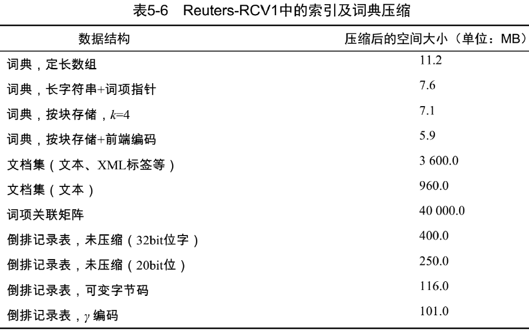
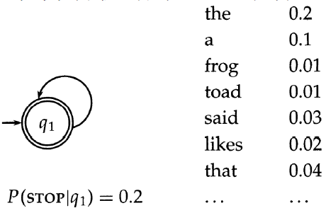

目前的 IR 实质上是融合了 文本及多媒体检索、数据挖掘、机器学习、自然语言处理的综合学科。因此本课内容包括：
- 信息检索的基本知识
- 布尔检索
- 倒排索引
- 向量空间模型
- 文档评分
- 检索评价
- 检索模型
- 简单的自然语言处理
- 语言模型
- 信息检索/知识发现/机器学习/数据挖掘中的经典算法
- 分类
- 聚类
内容大部分是从陈教授的 PPT 和参考书作者原书上摘来的。加上我的习惯用语修改，脑图总结知识点 + Markdown 写成流式笔记。内容规整统一，便于学/复习，而已。
第一章 引论
考核：
- 期末考试 60%
- 考勤 5%
- 实验 35%
互联网数据类型众多：
- 内容数据
- 新闻文本
- 半结构化数据（HTML、XML）
- 图像、视频、音频
- 结构化数据（表格、暗网）
- 博客、微博等
- 结构数据
- 网页链接结构
- 社交网络关系
- 使用（日志）数据
- 用户档案数据
大数据的 4V 特性：
- 体量 Volume
- 多样性 Variety
- 价值密度 Value
- 速度 Velocity
搜索技术：
- 从大规模非结构化数据(通常是文本)的集合(通常保存在计算机上)中找出满足用户信息需求的资料(通常 是文档)的过程
- 作为一门学科，是研究信息的获取(acquisition)、表示(representation)、存储(storage)、组织(organization) 和访问(access)的一门学问。
搜索的基本概念：
用户需求 (User Need，UN)：用户需要获得的 信息
- 严格地说，UN只存在于用户的内心，但是通常 用文本来描述，如查找与2016奥运会相关的新闻， 有时也称为主题(Topic)
- UN提交给检索系统时称为查询(Query)，如 2016 奥运会，对同一个UN，不同人不同时候可以构 造出不同的Query ， 比如上述需求也可表示成 2016奥运会新闻，Query在IR系统中往往还有内 部表示
文档(Document)：检索的对象
- 可以是文本，也可以是图像、视频、语音等多媒体文档，text retrieval / image retrieval / video retrieval / speech retrieval / multimedia retrieval
- 可以是无格式、半格式、有格式的
文档集合(Collection)：所有待检索的文档构成的集合
- 也称为Repository，Corpus，Dataset
相关(relevant)、相关度(relevance)、相似度(Similarity)
- 相关取决于用户的判断，是一个主观概念
- 不同用户做出的判断很难保证一致
- 即使是同一用户在不同时期、不同环境下做出的判断也不尽相同
信息检索系统的基本组成：
用户接口(User Interface)：用户和IR系统的人机接口
- 输入查询(Query)
- 返回排序后的结果文档(Ranked Docs)并对其进 行可视化(Visualization)
- 支持用户进行相关反馈(Feedback)
用户的两种任务：retrieval 或者 browsing
IR 的两种模式： pull (ad hoc) 或者 push (filtering)
- Pull: 用户是主动的发起请求，在一个相对稳定
的数据集合上进行查询 - Push: 用户事先定义自己的兴趣，系统在不断到来的流动数据上进行操作，将满足用户兴趣的数据推送给用户，典型就是推荐系统。
- Pull: 用户是主动的发起请求，在一个相对稳定
文本处理(Text Operations)：对查询和文本进行的预处理操作
- 中文分词(Chinese Word Segmentation)
- 词干还原(Stemming)
- 停用词消除(Stopword removal)
查询处理(Query operations)：对经过文本处理后的查询进行进一步处理 ， 得到查询的内部表示 (Query Representation)
- 查询扩展(Query Expansion)：利用同义词或者近义词对查询进行扩展
- 查询重构(Query Reconstruction)：利用用户的相关 反馈信息对查询进行修改
文本索引(Indexing)：对经过文本处理后的文本进行 进 一 步 处 理 ， 得 到 文 本 的 内 部 表 示 (Text Representation)，通常基于索引项(Term)来表示
- 向量化、概率计算
- 组成倒排表进行存储
搜索(Searching)：从文本中查找包含查询中索引项的 文本
排序(Ranking)：对搜索出的文本按照某种方式来计算其相关度
Logical View：指的是查询或者文本的表示，通常采用一些关键词或者索引项(index term)来表示一段查 询或者文本。
IR 的新课题：
- 自然语言理解
- 多媒体检索
- 垂直检索技术
- 移动搜索
- 对社会媒体信息检索
- 用户画像
- 自动问答
- 知识发现-知识图谱
- 行为分析、舆情监控
- 自动对话
重要工具：
- Lemur、Indri：包含各种IR模型的实验平台，C++
- SMART：向量空间模型工具, C编写
- Weka：数据挖掘工具，Java编写
- Lucene：开源检索工具，Java版本受维护，存在各种语言编写的其他版本
- Nutch：开源爬虫，Java版本
- Sphinx：开源检索工具，C++
- Larbin：采集工具，C++
- Firtex：检索平台，C++，计算所开发
- 更多：http://www.searchtools.com/tools/tools-opensource.html
第二章 布尔检索
信息检索模型概述
检索模型：
用于度量相关性
是描述信息检索中的文档 、查询 和它们之间关系 (匹配函数) 的数学模型。
布尔模型：
文档表示
- 一个文档被表示为关键词 (bag of words) 的集合
查询表示
- 查询式(Queries)被表示为关键 词的布尔组合，用 “与、或 非” 连接起来
相关度计算
- 一个文档当且仅当它能够满足布尔查询式时，才将其检索出来
- 检索策略是二值匹配 (true/false)
优点
- 由于查询简单，因此容易理解
- 通过使用复杂的布尔表达式，可方便地控制查询结果
- 相当有效的实现方法
- 经过某种训练的用户可以容易地写出布尔查询式
- 布尔模型可以通过扩展来包含排序的功能
缺点
- 弱。不支持部分匹配，完全匹配会导致结果太多或太少
- 非常刚性: “与”意味着全部; “或”意味着任何一个
- 原则上讲，所有被匹配的文档都将被返回
- 不考虑索引词的权重，所有文档都以相同的方式和查询相匹配
- 很难进行自动的相关反馈
- 如果一篇文档被用户确认为相关或者不相关，怎样相应地修改查询式呢？
简单的搜索示例
查询《莎士比亚全集》这本大部头的书中：哪些剧本包含 Brutus 和 Caesar 但不包含 Calpurnia？
简单想法与正确想法
一种简单的想法：使用 UNIX 下的 grep，这是一种线性的扫描方式
这种想法不合适的原因：
- 对于大规模文档的搜索太慢。
- 处理 NOT Calpurnia 并不容易（一旦包含即可停止判断）
- 不太容易支持其他操作。比如，要求查找 countrymen 附近的 Romans。
- 无法对结果进行排序。用户希望能在多个能满足要求的文档中得到最佳答案。
正确的做法是：采用非线性的扫描方式，比如事先给文档建立索引(index)
词项-文档 (term-doc) 的关联矩阵：
- 然后只要取出 Brutus、Caesar 以及 Calpurnia 3个词项对应的行向量110100，110111，010000，并对Calpurnia 对应的向量求反 101111，得到的 01 向量就是剧本的对应结果。
典型的搜索过程
信息检索的基本假设：
- 集合：固定数量的文档
- 目标：找到与用户信息需求相关的含有信息量的文档，帮助用户完成一个任务
典型的搜索过程：
返回文档的好坏 ★：
- 查准率：返回的能满足用户信息需求的文档占总的返回文档的百分比
- 如返回80篇文档，其中20篇相关，正确率1/4
- 召回率：返回的能满足用户信息需求的文档占总的能满足用户信息需求的文档的百分比
- 如返回80篇文档，其中20篇相关，但是总的应该相关的文档是100篇，召回率1/5
- 查准率和召回率缺一不可！
- 全部返回，正确率低，召回率100%
- 只返回一个非常可靠的结果，正确率100%，召回率低
简单模型存在的问题：
假设有一个更大的数据集，共有N=100万个文档，每个文档包含大概1000个词汇
假设一个词汇需要 6 个字节(将空格和标点计算 在内)，则这些文档共有 6G (100万*1000*6)
假设其中共有 500k 个唯一的不重复的词汇上述数据集建立的矩阵 1 只有不到 10 亿个，其他都是 0，矩阵中的 1 十分稀疏
所以 —— 大的数据集无法构建矩阵！
—— 更好的方法是 只记录 1 的位置
倒排索引 Inverted index
对于每一个词项，存储所有包含这个词项的文档的一个列表。 一个文档用一个序列号 docID 来表示。
倒排索引及其构建
倒排索引：
- 通常采用变长表方式
- 磁盘上，顺序存储方式比较好，便于快速读取
- 内存中，采用链表或者可变长数组方式
- 存储空间/易插入之间需要平衡

倒排索引构建：
- 排序 （核心步骤）
- 第一关键字是词项的字典序，第二关键字是 docID
- 词典 & 倒排记录表
- 合并在单篇文档中的多次某个词项
- 分割成词典和倒排表
- 加入每个词项出现的文档数目 (doc. frequency, DF)
- 一共有多少的存储开销
- (doc. freq)
- 指向链表的指针
- docID
布尔查询的处理
假设索引已经建好，现在利用其来处理查询
AND 查询的处理：
- 考虑 Brutus AND Caesar
- 在词典中定位 Brutus
- 返回对应倒排记录表(对应的docID)
- 在词典中定位Caesar
- 再返回对应倒排记录表
- 合并 (Merge) 两个倒排记录表，即求交集（复杂度 O(x+y)，因为倒排记录表按 docID 排序）
布尔检索模型
定义：
- 文档表示
- 一个文档被表示为关键词的集合 Bag of Words
- 查询表示
- 查询式 (Queries) 被表示为关键词的布尔组合，用 “ 与、或、非” 连接起来
- 相关度计算
- 一个文档当且仅当它能够满足布尔查询式时，才将其检索出来
- 检索策略是二值匹配 {0,1}
形式化表示：
定义：用 $q_{\text{dnf} }$ 表示查询 $q$ 的析取范式，$q_{\text{cc} }$ 表示 $q_{\text{dnf} }$ 的任意合取分量
文献 $d_i$ 与查询 $q$ 的相似度为
$\large \begin{align}
\operatorname{sim}\left(d_{j}, q\right)=\left{\begin{array}{l}1 \text { if } \exists \mathbf{q}{\mathrm{cc} } |\left(\mathbf{q}{\mathrm{cc} } \in \mathbf{q}{\mathrm{dnf} }\right) \wedge\left(\forall k{i}, g_{i}\left(d_{j}\right)=g_{i}\left(\mathbf{q}_{\mathrm{cc} }\right)\right) \ 0 \text { otherwise }\end{array}\right.
\end{align}$如果 sim(dj,q)=1，则表示文献 dj 与 q 相关，否则为不相关。
精确匹配的欠缺：无法体现出检测的文档的差异
查询优化：
处理查询的最佳顺序 —— 按照文档频率的顺序进行处理，先处理文档频率小的，再处理大的
更一般的优化：
- 获得所有词项的文档频率
- 保守地估计出每个 OR 操作后的结果大小
- 按照结果从小到大的顺序执行 AND
第三章 词项词典和倒排记录表
The term vocabulary & postings lists
词项词典的建立
文档解析(Parsing a document)
涉及三个问题：
- 文档包含哪些格式？
- pdf/word/excel/html et al.
- 文档中包含的语言？
- 文档使用何种编码方式？
上述问题都可以看成是机器学习中的分类问题， 但在实际中往往采用启发式方法来实现。
文档中的编码方式：
- 7bit ASCII ？
- UNICODE
- UTF-8、UTF-16、UTF-32
- Email对二进制附件的编码
- Content-Type: text/html;
- charset=”gb2312”
- Content-Transfer-Encoding: base64
复杂因素：格式/语言
- 待索引文档集中包含不同语言的文档
- 单独的一个索引应该包含不同语言的文档
- 一个文档或者其附件中包含多种语言或格式
- 例子：一封法语的邮件中包含德语的 pdf
- 文档单位的选择
- 一个文件 ？
- 一封 email ？
- 一封带有 5 个附件的 email ？
- 一组文件 ？
词条化 (Tokenization)
词条化：将给定的字符序列拆分成一系列子序列的过程，其中每一个子序列称之为一个 “词条” Token。
例子：
- 输入
Friends, Romans and Countrymen - 输出
Friends、Romans、Countrymen
每个词条Token都作为候选的索引
词条化可能遇到的问题 (英文)：
- 连字符
Co-education - 空格
人名 San Francisco - 连字符和空格相互影响
lower-case、lower case - 英文句号
IEEE 802.3 - 数字
Mar.2011
词条化可能遇到的问题 (中文)：
- Out of Vocabulary 超出词表
- 如人名、地名、机构名、新词
- Ambiguity 同一句子有多种可能的分词结果
- 南京市长江大桥
南京 市长 江大桥
南京市 长江大桥 - 兵乓球拍卖完了
兵乓 球拍 卖完 了
兵乓球 拍卖 完了
- 南京市长江大桥
词条化的策略：
- 针对不同的语言，采取不同策略的词条化方法
- 分词的基本方法：
- 基于词典(规则)的方法
- 按照一定策略将待分析的汉字串与一个 “词典” 中的词条进行匹配，如果匹配成功，那么该汉字串就是一个词。
- 基于统计的方法
- 训练：根据观测到的数据(人工标注好的语料)的统计特征对模型参数进行估计。
- 分词：通过模型计算各种分词出现的概率，将概率最大的分词结果作为最终结果。
- 基于词典(规则)的方法
基于词典(规则)的方法
按照扫描方向：正向匹配和逆向匹配
按照扫描长度：最大匹配和最小匹配
正向最大匹配
- 从左向右取待切分语句的 m 个字符作为匹配字段 (m为词典中最长词条个数)；
- 查找词典并进行匹配；
- 若匹配成功，则将这个匹配字段作为一个词切分出来；
- 若匹配不成功，则将这个匹配字段的最后一个字去掉，剩下的字符串作为新的匹配字段，进行再次匹配，重复以上过程，直到切分出所有词为止。
- 例：南京市长江大桥(m=5)
逆向最大匹配
双向最大匹配
- 将正向最大匹配法和逆向最大匹配法得到的分词结果进行比较，把所有可能的最大词都分出来。
基于统计的方法
n-gram：基于假设，第 n 个词的出现只与前面 n-1 个词相关，而与其它任何词都不相关，整句的概率就是各个词出现概率的乘积。
- 一个句子 $S={t_1t_2t_3\cdots t_N}$
- 句子出现的概率：Y 是分词序列 $\large Y^*=\underset{Y}{argmax} P(Y|S) = \prod\limits_{i=1}^NP(t_i|t_1\cdots t_{i-1})$
特别地
Unigram：$\begin{align}P_{\mathrm{uni} }(Y | S)=P\left(t_{1}\right) P\left(t_{2}\right) P\left(t_{3}\right) P\left(t_{4}\right) \cdots P\left(t_{N}\right)\end{align}$
Bigram：只考虑前一个词项的出现情况 $\begin{align}P_{\mathrm{bi} }(Y | S)=P\left(t_{1}\right) P\left(t_{2} | t_{1}\right) P\left(t_{3} | t_{2}\right) \ldots P\left(t_{N} | t_{N-1}\right)\end{align}$
Trigram：不写了
基于 HMM 的中文分词方法
给定一个观测序列(句子) $\begin{align}X=x_{1} x_{2} \ldots x_{t} \ldots x_{T}\end{align} $，其中 $x_t$ 是一个字、词等文字单元
假设 X 的状态序列 (如词的开始符、词的结束符等) 为 Y
- $y_t(i)$ 有 M 个状态
$\begin{align}Y=y_{1}(i) y_{2}(i) \ldots y_{t}(i) \ldots y_{T}(i), 1 \leq i \leq M\end{align}$
$\begin{align}Y^{}=\underset{Y}{\arg \max } P(Y | X)=\underset{Y}{\arg \max } \frac{P(Y, X)}{P(X)} \propto \underset{Y}{\arg \max } P(X | Y) P(Y)\end{align*}$
- $y_t(i)$ 有 M 个状态
独立性假设 $\Rightarrow P(X | Y)=\prod_{t=1}^{T}$ $ P\left(x_{t} | y_{t}\right)$
马尔可夫（一阶）假设
$\large P\left(y_{t} | y_{t-1} y_{t-2} \ldots y_{1}\right)=P\left(y_{t} | y_{t-1}\right) \Rightarrow P(Y)=$ $\large P \left(y_{1}\right) $ $\large \prod_{t=2}^{T}$ $ \large P\left(y_{t} | y_{t-1}\right)$符号发射概率 $\large P(x_t|y_t)$
状态转移概率 $\large P(y_t|y_{t-1})$
Y 共有 M 个状态 $\begin{align}\sum_{i=1}^{M} P\left(y_{t}(i) | y_{t-1}\right)=1\end{align}$
初始状态概率分布 $\large P \left(y_1(i)\right) \ \ \ \ (i=1\cdots M)$
HMM 包括隐层状态 Y，观测序列 X，
状态转移概率 A ， 符号发射概率B，初始状态概率分布 π (马尔科夫三部分)HMM 表示为 $\mu={A,B,\pi}$，参数通过训练集来学习获得
HMM 可以用有向图模型来表示，因为 states(Y)与 observations(X) 之间存在着明显的依赖关系。
中文分词例子：
- 输入观察序列 X：
南京市长江大桥 - 状态集合 $Y(i)={\mathrm{B}, \mathrm{M}, \mathrm{E}, \mathrm{S}} $
- 输出状态序列 Y：BMEBMME
又一个 HMM 的例子 (来自 caojiangxia 的博客)：
假如我们面对一堆过去的数据，过去的数据当中只有自然生长下的海藻的每天的状态
我们也有一些最近的数据，最近的数据中有海藻的状态和每天的天气情况。
现在我们给定天气的转移矩阵，天气对海藻状态影响的矩阵。我们希望根据这些数据，去预测过去的天气。海藻的状态只有 4 种： {干、稍干、潮湿、湿润}
天气的状态只有 3 种：{晴、阴、雨}
天气状态转移矩阵（后面简称为A）：
雨 阴 晴 雨 0.625 0.125 0.25 阴 0.375 0.25 0.375 晴 0.25 0.25 0.5 注意：上表表示的是今天的天气分别是雨，阴，晴的情况下，明天的天气是雨，阴，晴的概率分布。
天气对海藻干湿的影响(后面简称为B):
干 稍干 潮湿 湿润 晴 0.60 0.20 0.15 0.05 阴 0.25 0.25 0.25 0.25 雨 0.05 0.10 0.35 0.50 注意：上表表示的是今天的天气分别是雨，阴，晴的情况下，今天的海藻出现干，稍干，潮湿，湿润的概率分布。
建立模型
我们的任务是根据观察序列去推测状态序列。
首先我们根据之前的信息：构建状态集合s，状态转移矩阵A，初始状态概率分布π，观察集合ss，状态对观测的影响矩阵B
对于我们这个题目而言，状态集合s为(晴，阴，雨)，观察集合ss为(干，稍干，潮湿，湿润)，请务必注意这个地方！
那么我们可以得到五元组模型:(s,ss,π,A,B)，通常我们将模型简写为三元组:λ=(π,A,B)。
对于上述三元组，只有π是未知的，这个东西怎么统计出来呢？其实很简单，由于我们包含最近的数据，我们根据最近的天气可以统计出来每种天气出现的概率，那么这个分布就是 π，公式表示为：
πi=P(q1=si)
当然这仅仅是对于这个任务是这样计算的，别的任务可能会不一样。上述公式表示的就是说第i种情况出现的概率
比如说统计后大概长成这个样子：
晴 雨 阴 P 0.5 0.05 0.45 求解过程
我们现在已知观察序列 $O=o_1,\cdots ,o_n$，模型 λ=(π,A,B) 。现在我们需要求给定模型与观察序列的情况下求状态序列QQ。有我们需要以下概率最大：
P(O|Q,λ)
意思也很简单啊，就是我们求这个条件概率，当前模型 λ 来说，希望找到一个状态序列 Q 使得观察序列 O发生的可能性最大。
我们假设Q=q1…qn
我们把上面的式子打开，有：
$P(O | Q, \lambda)=\pi_{q_{1} } A_{q_{1} q_{2} } A_{q_{2} q_{3} } \ldots A_{q_{n-1} q_{n} } B_{q_{1} o_{1} } B_{q_{2} o_{2} } \ldots B_{q_{n} o_{n} } $
对上面的式子我们很简单的可以想到枚举每一种 Q，对每一种都进行计算，之后输出使得 P(O|Q,λ) 最大的那个 Q 就可以了。但是枚举当然是不可能的，这是指数级别的，n 大的话就凉了
解释一下上面的公式：
- $π_{q1}$ 表示最初天气为 q1 成立的概率
- $A_{ij}$ 表示天气从 i 到 j 转移的概率
- $B_{ij}$ 表示天气为 i 的情况下海藻状态为 j 的概率，也叫发射概率
Viterbi 搜索算法
给定模型 μ 和观察序列 $X=x_{1} x_{2} \ldots x_{t} \ldots x_{T}$ 的条件下求概率最大的状态序列 $Y=y_{1} y_{2} \ldots y_{t} \ldots y_{T}$ ：
$Y^*=\underset{Y}{\arg \max } P(Y | X, \mu)$
Viterbi 算法：动态搜索最优状态序列
定义：Viterbi 变量 $\delta_{t}(y(i))$ 是在时间 t 时，模型沿着某 一条路径到达状态 y(i)，并输出观察序列$X=x_{1} x_{2} \ldots x_{t} \ldots x_{T}$的最大概率：
$$
\Large \delta_{t}(y(i))=\max {y{i} y_{2} \cdots y_{t-1} } P\left(y_{1} y_{2} \cdots y_{t-1} y_{t}(i), x_{1} x_{2} \cdots x_{t-1} x_{t} | \mu\right)
$$
算法描述 (时间复杂度 $O(M^2T)$)：
- 初始化：
概率最大的路径变量：$\psi_{1}(i)=0 $ - 递推计算：
- 结束：$\large Y=\underset{1 \leq i \leq M}{\arg \max }\left[\delta_{T}(i)\right], \quad P(Y)=\max\limits_{1 \leq i \leq M} \delta_{T}(i)$
- 通过回溯得到路径（状态序列）：$\large y_{t}=\psi_{t+1}\left(y_{t+1}\right), \quad t=T-1, T-2, \cdots, 1 $
C++ 的代码，写起来很简单，每种语言都可以按照这个方式写。但是为了保证精度，我们一般是取log的，这份代码的结果应该会很差！
1 | void viterbi(int O[],double PI[],double A[][],double B[][]){//传观察序列和模型 |
中文分词例子：
- 输入观察序列 X：
南京市长江大桥 - 状态集合 $Y(i)={\mathrm{B}, \mathrm{M}, \mathrm{E}, \mathrm{S}} $
- 输出状态序列 Y
- 给定 HMM 模型：{A, B, π}
又一个例子，前向的 Viterbi 算法 (来自 caojiangxia 的博客)：
为了结果看起来比较正常，我们把初始分布π 设的极端一点，同时我们再次召唤之前的表。
晴 阴 雨 P 1 0 0
天气状态转移矩阵 A：
雨 阴 晴 雨 0.625 0.125 0.25 阴 0.375 0.25 0.375 晴 0.25 0.25 0.5 天气对海藻干湿的影响 B:
干 稍干 潮湿 湿润 晴 0.60 0.20 0.15 0.05 阴 0.25 0.25 0.25 0.25 雨 0.05 0.10 0.35 0.50 对于我们给定的观测序列：干，潮湿，湿润。我们计算的结果入上图所示。其中红色括号的结果就是表示结果是上一次的第几个节点过来的
到此为止，隐马尔可夫模型的这个例子就介绍完了，当然问题有其他变种，一般是在 viterbi 算法上动刀
条件随机场模型 (Conditional Random Fields，CRF)
- 对汉字进行标注训练，不仅考虑了词语出现的频率，还考虑了上下文
- 具备较好的学习能力，对歧义词和未登录词的识别都具有良好的效果。
- $\Large \begin{array}{l}
Y^{*}=\underset{Y}{\arg \max } P(Y | X ; \lambda)=\frac{1}{Z(X)} \exp \left[\sum_{j} \lambda_{j} F_{j}(Y, X)\right] \
Z(X)=\sum_{Y} \exp \left[\sum_{j} \lambda_{j} F_{j}(Y, X)\right] \
F_{j}(Y, X)=\sum_{t=1}^{T} f_{j}\left(y_{t-1}, y_{t}, X, t\right)
\end{array} $- $F_j()$：第 j 个特征函数，可以表示状态特征函数，或者状态转移函数
$λ_j$：第 j 个特征特征函数的权重
Z(X)：归一化因子
- $F_j()$：第 j 个特征函数，可以表示状态特征函数，或者状态转移函数
例子：
$\Large \begin{aligned}
P\left(y_{t} | x_{t}, \lambda\right)=& \lambda_{1} f_{1}\left(x_{t}, y_{t}\right)+\lambda_{3} f_{3}\left(x_{t-1}, x_{t}, y_{t}\right)+\lambda_{4} f_{4}\left(x_{t}, x_{t+1}, y_{t}\right) \
&+\lambda_{2} \max {y{t-1} \in{B, M, E, S} }\left{f_{2}\left(y_{t-1}^{\prime}, y_{t}\right) P\left(y_{t-1}^{\prime} | x_{t-1}, \lambda\right)\right}
\end{aligned} $
停用词 (Stop Words)
停用词表
- 将词项按照文档集频率(collection frequency)，从高到底排列
- 选取与文档意义不大，高频出现的词，比如，a, an, the, to, and, be …
停用词使用的趋势
- 现代搜索引擎发展的趋势使用少量的停用词表
- 现代IR系统更加关注利用语言的统计特性来处理常见词问题
停用词的消除：
- 优点：停用词消除可以减少 term 的个数
- 缺点：有时消除的停用词对检索是有意义的。
- “的士”、“to be or not to be”
- 消除方法
- 查表法
- 基于文档频率
词项归一化 (Normalization)
归一化：
将文档和查询中的词条 “归一化” 成一致的形式
例如：希望 USA 和 U.S.A. 之间也能形成匹配
归一化的结果：
- 在 IR 系统的词项词典中，形成多个近似词项的一个等价类
- 隐式的建立等价类
- 例如将 USA 和 U.S.A. 映射为 USA
- 例如将 anti-discrimination 和 antidiscrimination 映射为 antidiscrimination
不同语言之间的区别：
重音符号
- e.g.：法语中résumé vs. resume
变音符号
- e.g.：德语中Tuebingen vs. Tübingen. (其实它们应该 是等价的)
最重要的标准
- 最重要的问题不是规范或者语言学的问题，而是用户将会如何根据这些词来构造查询？
即使在一些语言中，有的词有了标准的读音， 但是用户有自己的读音/拼写方式
- e.g.：Tuebingen, Tübingen, Tubingen
其他
- 中文中日期的表示7月30日 vs. 英文中7/30
- 日语中使用的假名汉字 vs. 中文中的汉字
词条化和归一化
- 二者都依赖于不同的语言种类，因此，在整个索引建立过程中要综合考虑
大小写转换：
- 一般策略
- 将所有字母转换为小写
- 绝大多数情况下，用户在构造查询时都忽略首字母的大写
- 一些专有名词除外
- e.g.：General Motors
- Fed vs. fed
- SAIL vs. sail
- Google 的例子
- 输入查询词 C.A.T. ，首页是关于猫的网站， 而不是卡特彼勒公司 (Caterpillar Inc.) (2005年的时候)
词项归一化的策略：
- 建立同义词扩展表。
- 例如：查询 windows，检索了 Windows, windows, window
扩展词表和 soundex 算法：
- 如何处理同义词和同音词？
- e.g.：手工建立同义词词表
- car = automobile, color = colour
- ①为每个查询维护一张包含多个词的查询扩展词表
- 例如：查询automobile的同时，也查询car
- ②在建立索引时就对词进行扩展
- 例如：对于包含automobile的文档，同时也使用car来索 引
- e.g.：手工建立同义词词表
- 如何处理拼写错误？
- 其中的一种处理方法，就是根据发音相同来进行词项扩展
- 后续章节中有讨论
词干还原 (Stemming)
词干还原：
通常指很粗略的去除单词两端词缀的启发式过程。
e.g., automate(s), automatic, automation -> automat
词干还原能够提高召回率，但是会降低准确率
- e.g.: operative ⇒ oper
- 词干还原对于芬兰语，西班牙语，德语，法语都有明显的作用，其中对芬兰语的提高达到 30% (以MAP 平均准确率来计算)。
中文叠词还原，可视为 “词干还原”
Porter 算法：
- 英文处理中最常用的词干还原算法，经过实践证明是高效性的算法。
- 算法包括 5 个按照顺序执行的词项约简步骤
- 每个步骤都是按照一定顺序执行的
- 每个步骤中包含了选择不同的规则的约定
- 比如，从规则组中选择作用时词缀最长的那条规则
- 典型规则：
- sses->ss、ies->i、ational->ate、caresses->caress、ponies->poini、national->nate
- 要考虑规则的 “权重”
- (前面的字母数>1) EMENT 的处理
- replacement → replac
- cement → cement
词形归并 (Lemmatization)
词性归并：
利用词汇表和词形分析来减少屈折变化的形式，将其转变为基本形式。
e.g.
- am, are, is -> be
- car, cars, car’s, cars’ -> car
- the boy’s cars are different colors -> the boy car be differentcolor
词形归并可以减少词项词典中的词项数量
词干还原与词性归并对比：
- 代表意义不同。
- 前者：通常指很粗略的去除单词两端词缀的启发式过程。
- 后者：通常指利用词汇表和词形分析来去除屈折词缀，从而返回词的原形或词典中的词的过程。
- 假如给定词条 saw，
- 词干还原过程可能仅返回 s，
- 而词形归并过程将返回 see 或者 saw，
- 具体返回哪个词取决于当前上下文中saw是动词还是名词。
- 两个过程的区别还在于
- 词干还原在一般情况下会将多个派生相关词合并在一起，
- 而词形归并通常只将同一词元的不同屈折形式进行合并。
语言的特殊性：
- 词干还原和词形归并，都体现了不同语言之间的差异性，包括
- 不同语言之间的差异
- 特殊专业语言与一般语言的差异
- 词干还原或者词形归并往往通过在索引过程中增加插件程序的方式来实现
- 商业软件
- 开源软件
实现倒排记录表
快速合并算法：带跳表的倒排记录表
前面的倒排记录表合并复杂度是 O(x+y)，考虑做的更好 —— 基于跳表
- 跳表指针能够跳过那些不可能出现在检索结果中的记录项。
两个主要问题：
- 如何利用跳表指针进行快速合并 ？
- 在什么位置设置跳表指针 ？
模拟查询处理过程：
- 假定进行遍历一直发现共同记录 8，将 8 放入结果表中之后，继续移动二个表的指针。
- 假定第一个表指针移到 41，第二个表的指针移到 11。
- 由于11 < 41，因此，上面的指针不需要继续移动，只需移动下面的指针，跳到31 (当然如31>41那么就要倒回来)
- 这样就跳过了 17,21
设置跳表指针的位置：
- 设置较多的指针 -> 较短的步长 -> 更多的跳跃机会
- 代价：更多的指针比较次数和更多的存储空间
- 设置较少的指针 -> 较长的步长 -> 较少的连续跳跃
- 代价：较少的指针比较次数和较少的存储空间
- 放置跳表指针的一个简单的启发式策略是：
- 如果倒排表的长度是L，那么在每个 $\sqrt{L}$ 处均匀放置跳表指针
- 该策略没有考虑到查询词项的分布
其他：
- 如果索引相对固定的话，建立有效的跳表指针比较容易，如果索引需要经常的更新，建立跳表指针就相对困难。
- 硬件参数对索引构建有一定的影响
- CPU速度
- 磁盘访问速度
- 注意：跳表指针只对 AND 类型的查询有用，对 OR 类型 的查询不起作用。
包含位置信息的倒排记录表以及短语查询
短语查询(Phrase Query)：
- 用户希望将类似 “stanford university” 的查询中的二个词看成是一个整体。
- 类似 “I want to university at stanford” 这样的文档是不会被匹配的。
- 大部分的搜索引擎都支持双引号的短语查询，这种语法很容易理解并被用户成功使用。
- 有很多查询在输入时没有加双引号，其实都是隐式的短语查询(如人名)。
- 要支持短语查询，只记录 <term: docs> 这样的条目是不能满足用户需要的。
第一种方法：二元词索引 (Biword indexes)
- 将文档中每个连续词对看成一个短语
- 例如，文本 “Friends, Romans, Countrymen” 将生成如下的二元连续词对
- friends romans
- romans countrymen
- 其中的每一个二元词对都将作为词典中的词项
- 经过上述的处理，此时可以处理二个词构成的短语查询
扩展的二元词索引：
- 名词和名词短语构成的查询具有相当特殊的地位。
- 首先对文本进行词条化，然后进行词性标注
- 把每个词项分为名词(N)、虚词(X)，冠词和介词和其他词。
- 将形式为N*XN非词项序列看成一个扩展的二元词
- 每个这样的扩展的二元词对应一个词项
- 例如：catcher in the rye
N X X N - 利用这样的扩展二元词索引处理查询
- 将查询拆分成 N 和 X
- 将查询划分成扩展的二元词
- 最后在索引中进行查找
第二种方法：位置信息索引(Positional indexes)
- 在这种索引中，对每个词项，采取以下方式存储倒排表记录
- 对于短语查询，仍然采用合并算法，查找符合的文档不只是简单的判断二个词是否出现在同 一文档中，还需要检查它们出现的位置情况
短语查询的处理：
短语查询：“to be or not to be”
对每个词项，抽出其对应的倒排记录表: to, be, or, not.
合并<docID:位置 >表，考虑 “to be or not to be”.
查找表中，看看是否某个 be 前面的一个位置上正好出现 to
邻近查询 (Proximity queries)：
- Employ me/3 place，表示从左边或右边相距在 k=3 个词之内
- 显然，位置索引能够用于邻近搜索，而二元词 搜索则不能
位置信息索引的讨论：
- 采用位置索引会大大增加倒排记录表的存储空间，即使采用后面讨论的压缩方法也无济于事。
- 由于用户期望能够进行短语查询和邻近查询， 所以还是得采取这种索引方式。
经验法则(English- like)：
- 位置索引大概是非位置索引大小的 2~4 倍
- 位置索引的大小大约是原始文档的 30%~50%
混合索引机制：
- 二元词索引和位置索引二种策略可以进行有效 的合并
- 对 于 高 频 查 询 词 可 以 采 用 二 元 词 索 引 ， 例 如 “Michael Jackson”，
- Williams 等人(2004)评估了更复杂的混合索引机制 (引入后续词索引方法)。
- 对于一个典型的 web 短语混合查询，其完成时间大概是只使用位置索引的1/4
- 比只使用位置索引增加26%的空间
第四章 索引建立与压缩
Index Construction & Index Compression
索引构建
Index：索引
Indexer：构建索引的程序、索引器
怎样建立一个索引？
对于给定的计算机内存，可以采用怎样的索引构建策略?
硬件基础与语料库
了解两个部分：
硬件方面
- 存储能力
- IR 系统的服务器通常 “数GB” 甚至 “数百GB” 的内存
- 其可用磁盘空间大小一般比内存大小高几个 (2- 3) 数量级 (TB级别)。
- 容错控制代价非常昂贵：使用许多台常规服务器要比使用一台容错服务器便宜得多
- 计算IO的能力：
- 访问内存数据比访问磁盘数据快得多。
- 磁盘寻道：磁头移到数据所在的磁道需要一段 时间，寻道期间并不进行数据的传输。
- 因此：从磁盘到内存传输一个大数据块要比传输很多小的数据块快的多。
- 磁盘读写操作是基于块的：从磁盘读取一个字节和读取一个数据块所耗费的时间可能一样多
- 存储能力
语料库
莎士比亚全集，不够大，所以拿 “Reuters-RCV1文档集” 举例，一个不是真正够大，但是是公开且合理的文档集
将使用路透社的 RCV1 文档集作为“可扩展的索引构建算法 ”的样例
该文档集由一年的路透社新闻组成(1995-1996)
文档ID需 32bit=4Byte
词条ID需 32bit (总共约1亿词条)
存储所有的“词条ID-文档ID”需要约100,000,000 * (32+32) =6,400,000,000bits =800,000,000Bytes = 0.8GB ，需要对 0.8GB 的 ID 对进行排序！！！而实际语料库要比 RCV1 更大，所以不能在内存中进行索引构建，因为不能扩展
因此需要在硬盘中存储中间结果。
索引构建算法
不能在磁盘中进行排序，磁盘寻道太慢了，需要一个外部排序算法。
基于块的排序索引构建算法
BSBI : Blocked sort-based Indexing
基本思想：
- 对每一个块都生成倒排记录，并排序，写入硬盘
- 然后将这些块合并成一个长的排好序的倒排记录。
操作：
- 每条数据 <词项，文档，频数> 占用12字节 (4+4+4)
- 这些数据是在分析文档时生成，需要对 100M 条这样 12 字节的数据进行排序
- 定义一个块 ~10M 大小的数据
- 可以很容易地加载数个这样的块数据到内存中
- 开始加载 10 个这样的块数据
- 100M 数据的排序 → 排序 10 块 10M 的数据
- 在硬盘上直接排序 → 在内存中排序 (10M)
- 带来的问题：需要合并 10 个排序后的结果
如何合并排序结果：
- n-路合并会更加高效
- 内存中维护
- 为 10 个块准备的读缓冲区
- 一个为最终合并索引准备的写缓冲区
- 这样就不会因为硬盘寻道而浪费大量的时间
基于 BSBI 排序的算法存在的问题：
- 假设：能够将词典存入内存中。
- 需要该词典(动态增长)去查找任一词项和词项 ID 之间的对应关系。
- 事实上，可以采用<词项，文档ID>对来代替<词项ID，文档ID>对。
- 每个词项的平均字节数=7.5
- 但是中间文件会变的非常的大。所以这是一个可拓展的，但效率非常低的索引构建算法。
内存式单遍扫描索引构建算法
SPIMI : Single-pass in-memory indexing
核心思想1：为每个块单独生成一个词典，不需要维护全局的 <词项，词项ID> 映射表。
核心思想2：不进行排序。有新的 <词项，文档ID> 对时，直接在倒排记录表中增加一项。
根据这两点思想，可以为每个块生成一个完整的倒排索引。
然后将这些单独的索引合并为一个大的索引。
压缩技术将会使 SPIMI 算法更加高效
- 压缩词项
- 压缩倒排记录表
分布式索引构建 ★
Distributed indexing
理解集群的宕机概率。
分布式索引构建概念：
- 用集群中的主控节点来指挥索引构建工作。
- 假设主控节点是 “安全” 的。
- 将索引构建过程分解成一组并行的任务。
- 主控计算机从集群中选取一台空闲的机器并将任务分配给它。
并行任务：
- 采用两组不同的并行任务
- Parsers 分析器
- Inverters 倒排器
- 首先，将输入文档集分割成 n 个数据片，每个数据片就是一个文档子集 (与BSBI/SPIMI算法中的数据块相对应)
文档集分割：
- 基于文档的分割
- 基于词项的分割
分析器 Parsers：
- 主节点将一个数据片分配给一台空闲的分析服务器
- 分析器依次读取文档并生成 <词项,文档> 对
- 分析器将这些 <词项,文档> 按照词项分成 j 个段
- 每一段是按照词项首字母划分的一个区间
- (例如：a-f, g-p, q-z)-这里 j=3
- 然后可以进行索引的倒排
倒排器 Inverters：
- 对于一个词项分区，倒排器收集所有的 <词项, 文档> 对 (也就是“倒排记录”)
- 排序，并写入最终的倒排记录表
索引构建后的另一个阶段：
- 索引构建只是其中的一个阶段
- 另一个阶段是：将基于词项划分的索引表转换成基于文档划分的索引表
- 基于词项划分的：一台机器处理所有词项的一个子区间
- 基于文档划分的：一台机器处理所有文档的一个子区间
- 在本课程的Web搜索部分会讲到，大部分搜索引擎都是采用基于文档划分的索引表
- 优点：更好的负载平衡等等
MapReduce：
- MapReduce (Dean and Ghemawat 2004) 是一个稳定的并且概念简单的分布式计算架构
- 不需要自己再对分布式部分书写代码
- Google索引系统 (ca.2002) 由各个不同的阶段组成，每个阶段都是 MapReduce 的一个应用
- 刚刚所讲的索引构建算法是 MapReduce 的一个应用
使用 MapReduce 的索引构建架构：
一个简单的例子 —— Map阶段 ：
To be, or notto be: that isthe questionthe head is not more native to the heartbrevity is the soul of wit
一个简单的例子 —— Reduce 阶段 ：
动态索引
- 迄今为止，我们都假设文档集是静态的
- 但文档集通常不是静态的
- 文档会不断的加入进来
- 文档也会被删除或者修改
- 这就意味着词典和倒排记录表需要修改
- 对于已在词典中的词项更新倒排记录
- 新的词项加入到词典中
方法1: —— 最简单的索引更新方法：
- 周期性索引重构
- 建立新索引的同时，旧索引继续工作
- 条件
- 更新次数不是很多
- 能够接受对新文档检索的一定延迟（重构之前新文档检索不到）
- 有足够的资源进行重构
方法2：
- 维护一个大的主索引
- 新文档信息存储在一个小的辅助索引中 (位于内存)
- 检索可以同时遍历两个索引并将结果合并
- 删除
- 文档的删除记录在一个无效位向量 (invalidation bit vector) 中
- 在返回结果前利用它过滤掉已删除文档
- 定期地，将辅助索引合并到主索引中
- 文档更新通过先删除后插入方式实现
主索引与辅助索引存在的问题：
- 频繁的合并 — 带来很大的开销
- 合并过程效率很低
- 如果每个词项的倒排记录表都单独成一个文件，那么合并主索引和辅助索引将会很高效
- 合并将是一个简单的添加操作
- 但需要非常多的倒排文件 — 对文件系统来说是低效的
- 以后课程中都假设：索引是一个大的文件
- 现实中：往往在上述两种极端机制中取一个折中方案
(例如，对非常大的索引记录表进行切分；并对那些长度为1的索引记录表进行合并)
对数合并：
- 维护一系列的索引 $I_0,I_1,I_2, \cdots$，每个都是前一个的两倍大小 $n\times 2^0,n\times 2^1,n\times 2^2，\cdots $。n 是辅助索引 $Z_0$ 的大小
- 辅助索引 $Z_0$ 存在内存
- 将较大的那些 ($I_0,I_1,\cdots$) 存在磁盘
- 当 $Z_0$ 达到上限 n 时，将它写入磁盘的 $I_0$ 中 (此时 $I_0=n\times 2^0$)
- 当 $Z_0$ 再次达到上限 n 时，它会和 $I_0$ 合并，生成 $Z_1$ ($n\times 2^1$)
- 此时，如果 $I_1 $ 不存在，存储到 $I_1$ 中
- 如果 $I_1$ 已经存在，则 $Z_1$ 与 $I_1$ 合并成 $Z_2$ ($n\times 2^2$)
- 此时，如果 $I_2$ 不存在，存储到 $I_2$ 中
- 以此类推
拥有多个索引产生的问题：
- 全局统计信息很难得到
- 例如：对于拼写校正算法，得到几个校正的备选词后，选择哪个呈现给用户？
- 可以返回具有最高选中次数的那些
- 对于多个索引和无效位向量，怎样维护那些拥有最高次数的结果？
- 一个可能的方法：除了主索引的排序结果，忽略其它所有的索引
- 事实上，采用对数合并方法，信息检索系统的各个方面，包括索引维护，查询处理，分布等等，都要复杂的多
搜索引擎中的动态索引：
- 现在所有的大型搜索引擎都采用动态索引
- 它们的索引经常增加和改变
- 新的产品、博客，新的Web网页
- 但是它们也会周期性地从头开始重新构建一个全新的索引
- 查询处理将会转到新索引上去，同时将旧的索引删除
总结
基于排序的索引构建算法
- 它是一种最原始的在内存中进行倒排的方法
基于块的排序索引算法 BSBI
- 合并排序操作对于基于磁盘的排序来说很高效(避免寻道)
内存式单遍扫描索引构建算法 SPIMI
- 没有全局的词典
- 对每个块都生成单独的词典
- 不对倒排记录进行排序
- 有新的倒排记录出现时，直接在倒排记录表中增加一项
采用 MapReduce 的分布式索引构建算法
动态索引构建算法：多个索引，对数合并
搜索引擎：周期性索引重构
索引压缩
压缩
必要性：
- 节省磁盘空间
- 省钱
- 提高内存的利用率
- 提高速度
- 加快数据从磁盘到内存的传输速度
- 读取压缩数据+解压缩 比直接 读取未压缩的数据 快
- 前提：解压缩算法要很快
- 目前所用的解压缩算法在现代硬件上运行相当快
压缩倒排记录表的必要性：
- 词典
- 压缩的足够小以便能够放入内存中
- 当词典足够小时，也可以在内存中存储一部分倒排 记录表
- 倒排记录文件
- 减少所需的磁盘空间
- 减少从磁盘读取倒排记录文件所需的时间
- 大的搜索引擎在内存中存储了很大一部分倒排记录表，压缩可以在内存中存储的更多
词项统计量
有损压缩 Lossy 与无损压缩 Lossless：
- 无损：压缩后所有原始信息都被保留
- 在 IR 系统中常采用无损压缩
- 有损：丢掉一些信息
- 一些预处理步骤可以看成是有损压缩：大小写转换，停用词剔除，词干还原，数字去除
- 第 7 章：那些削减的倒排记录项都不太可能在 查询结果的前 k 个列表中出现。
- 对于前k个返回结果来说，这几乎是无损的
- 选择有损还是无损与需求相关
Heap 定律：
词汇量与文档集大小的关系：文档集越大，词汇量越大
Heap 定律：$M = kT^b$
- M 是词项数目，T 是文档集中词条个数
- $30 \le k \le 100, b\approx 0.5$
词汇量大小 M 和文档集大小 T 在对数空间中，存在着斜率为 1/2 的线性关系（一个经验发现 empirical law）
Zipf 定律：
- 词项在文档中的分布情况。在自然语言中 ，只有很少一些非常高频的词项，而其它绝大部分都是很生僻的词项
- Zipf 定律：排名第 i 多的词项的 文档集频率 与 1/i 成正比
- $\large c f_{i} \propto \frac{1}{i}=\frac{K}{i} $
- K 是一个归一化常数
- $c f_{i}$ 是文档集频率：词项 $t_i $ 在文档集中出现的次数
- 如果最高频的词项(the)出现了cf1次
那么第 2 高频的词项(of)出现了cf1/2次
第 3 高频的词项(and)出现了cf1/3次
词典压缩
必要性：
- 搜索从词典开始，需要将词典放入内存中，和其他应用程序共享内存资源
- 手机或者嵌入式设备通常只有很小的内存
- 即使词典不存入内存中，也希望它能比较小，以便搜索能快速启动
词典的存储：
定长数组存储
词项 20B, 文档频率 4B, 指向倒排记录表的指针 4B- 词项的定长存储浪费空间
- 书面英文中单词的平均长度约为 4.5 个字符
- 较短的词项支配了词条的数目但是并不是典型的平均值，即较短的词项占绝大多数
- 词项的定长存储浪费空间
压缩词项列表 —— 将词典看成一个字符串
- 指向下一词项的指针同时也标识着当前词项的结束
按块存储
每 k 个词项分成一块，只保留第一个指针，额外存储词项长度 (1Byte) 来划分词项
前端编码：按照词典顺序排列的连续词项之间往往具有公共前缀
处理块内 k 个词项的最后 k-1 个

搜索次数比较：
- 假设每个词项被查询的概率相同
- 未压缩词典的搜索如下

- 按块存储方式下的搜索如下（这个图没有体现二分查找的部分过程）
倒排记录表压缩
压缩方案：
定制位数压缩：按照文档数目定制 文档ID 字段，要多少位给多少位
按 GAP 压缩：按文档 ID 的间距 (GAP) 存储词项的倒排索引表
- 如
33, 47, 154, 159, 202, ...压缩成33, 14, 107, 5, 43, ... - 期望：绝大多数间距存储空间都远小于 20 bit
- 如
可变长度编码（可变字节码 VB, Variable Byte）：
目标是：
对于 arachonocentric 这样低频的词使用 20bit/间距项
对于 the 这样高频的词使用 1bit/间距项如果词项平均间距为 G，想用 logG bit/词距项
关键问题：需要利用整数个字节来对每个间距编码。
需要实现一个可变长度编码，这样对一些小数字可使用短码例子如下：最后一个字节的首位标记为一个数的最后一个字节
缺点：很小的间距上仍然浪费空间，那种情况半字节更可取
总结：
- 现在可以为布尔查询创建一个索引，即高效又非常节省空间
- 只有文档集总大小的 4%，在文档集中只有文本总大小的 10-15%
- 但是，忽略了索引的位置信息。因此，在实际中，索引所节省的空间并没有这 么多
第五章 Web搜索
Web搜索基础
Web 与文档集的不同
对搜索结果的经验性评价：
页面质量良莠不齐
- 仅仅相关是不够的
- 质量也很关键
- 内容: 可信, 多样, 不重复, 容易维护
- 页面可读性: 显示得又快又好
- 无打扰: 无弹出广告等
正确率和召回率 Precision vs.Recall
- 在互联网上, 召回率不再那么重要
- 但匹配结果比较少的时候召回率很重要
什么比较重要？
- 头版头条的正确率 (反例：百度前几条都是广告)
- 全面 – 要能处理模糊的查询词
用户的认可：用户的认知可能非学术的，但是是有意义的
Web 文档集的特点：
- 分散：没有特别的设计，分散的内容创作、链接, 民主化的发布
- 内容多样：包含真理、谎言、矛盾和大量猜测 …
- 异构：非结构化的(text, html, …)、半结构化的 (XML, 有注释的照片), 结构化的 (数据库) …
- 重复：规模比之前的文本集大得多，但是其中有很多重复的记录
- 增长：最开始每几个月就翻一倍，现在涨速下降但总量依然在扩大
- 动态：内容可能是动态生成的
Web 搜索基本流程图：
近似重复检测
近似重复文档：
- 完全复制 Duplication
- 通过指纹 fingerprints (如 Hash) 来检测
- 近似重复 Near-Duplication （大多数情况，比如内容一样日期不同）
- 通过编辑距离计算语法上的相似性
- 通过阈值来检测近似重复，但是这种方法是不可传递的 (AB 近似，BC 近似，推不了 AC 近似)
相似性计算 N-Grams 的概念：
搭叠 Shingles (N 元词 N-Grams)
- 给定正整数 N 和文档 d 的一个词项序列，N-Shingles 即文档 d 的所有 N 个连续词项构成的序列
山东大学在青岛的 3-Grams山东大东大学大学在学在青在青岛
如果直观上看，两个文档的 shingle 集合几乎一样，它们满足近似重复
Jaccard 系数：
在两个文档的 Shingle 集合上衡量重复度
$\huge \operatorname{Jaccard}\left(C_{i}, C_{j}\right)=\frac{\left|C_{i} \cap C_{j}\right|}{\left|C_{i} \cup C_{j}\right|}$
需要注意：计算所有文档之间搭叠的精确交集是非常费时而且难以处理的
抽样 Sample：使用一种聪明的方式从 Shingles 中选出一个 子集 (素描 sketch) 来近似计算
Sketch, 文档的素描：
比如对于文档 D，其 $\large \text{sketch}_D[i]$ 如下
用 f 函数 把所有搭叠 shingles 映射到 $\large {0,\cdots, 2^m}$ 得到 $\large f(s)$
也可以看作是为每个搭叠计算一个 m 位的 Hash Code$\Large \pi_i$ ：对 $\large {0,\cdots, 2^m}$ 的随机置换函数，即对集合的对象进行随机排序
用 $\Large \pi_i$ 对所有搭叠的哈希 $\large f(s)$ 进行随机置换得到 $\large \pi_i(f(s))$ ，从而形成一个新的随机序列对上一步的随机置换序列选择 $\Large \text{MIN} {\pi_i(f(s))}$
为每篇文档生成素描向量
sketch vector(大小约为 200)相同向量个数 $\ge t $ （一般 80%）判定为近似
测试
if Doc1.Sketch[i]==Doc2.Sketch[i]本质上是对 shingle 集合进行洗牌 + 抽样
- 定理 19-1：A=B 发生的概率 = 交集大小 / 并集大小
小结：
- Shingle 算法的核心思想是将 文件相似性问题 转换为 集合相似性 问题
- 数量较大时，抽样 Sketch，以降低时空复杂度
- Shingle 抽样有三种方法，Min-Wise、Modm、Mins
- Mins 技术先将 shingle 和整数集进行映射，然后从中选择最小 s 个元素组成取样集合。
- 此外，还可以使用 shingle 的 hash 值代表 shingle 进行相似性计算，能够节省一定计算开销。
Web采集
采集器
采集器必须具有的功能：
- 礼貌性: Web服务器有显式或隐式的策略控制采集器的访问
- 只爬允许爬的内容、尊重 robots.txt
- 鲁棒性: 能从采集器陷阱中跳出，能处理Web服务器的其他恶 意行为
- 分布式: 可以在多台机器上分布式运行
- 可扩展性: 添加更多机器后采集率应该提高
- 性能和效率: 充分利用不同的系统资源，包括处理器、存储器和网络带宽
- 优先抓取“有用的网页”
- 新鲜度: 对原来抓取的网页进行更新
- 功能可扩展性：支持多方面的功能扩展，例如处理新的数据格式、新的抓取协议等
采集器结构图：
采集器分布式：
在分布式系统环境下不同节点的不同进程中运行多个采集线程
- 地理位置分布的采集系统
把要采集的主机分配到每个节点
通过 Hash 函数或其他针对性的策略
节点间通信
通过滤检测的 URL 需要发送到每个节点上进行查重处理
连接服务器
Web → Web 图：
可以将整个静态 Web 看成是静态 HTML 网页通过超链接互相连接而成的有向图，
每个网页是图的顶点，而每个超链接则代表一个有向边。这样网页和超链接抽象成的图即 Web 图
Web 特性 → Web 图特性：
可能不是强连通图
入度：入链接 in-link 数
出度：出链接 out-link 数
无标度网络
- 站点大小 Site Size (以页面数量计算) 服从 Power-Law 分布
- 跨越不同的规划
- a 在 1.6-1.9 间
- 节点的度服从 Power-Law 分布
- 出度，a = 2.45
- 入度，a = 2.1
- 网页数量 $\approx \frac{1}{i^a} $
- 站点大小 Site Size (以页面数量计算) 服从 Power-Law 分布

连接服务器：
支持 Web 图上的快速查询
- 哪些URL指向给定的URL
- 给定的URL指向哪些URL
在内存中存储了映射表，URL 到出链, URL 到入链
- 邻接表
应用
- 采集控制
- Web 图分析
- 连通性 Connectivity, 采集优化
- 链接分析 Link analysis
链接分析
索引锚文本：
- 在 HTML 中，锚同时可以附带一个文本
- 在索引文档 D 时，同时也索引指向文档 D 的锚文本
- 比如搜索 IBM 可以得到 IBM 的官网，搜索 Big Blue 也可以得到 IBM 的官网，后者是因为太多人使用这一绰号而加大了权重
- 根据页面的权威性确定页面的锚文本
- 比如
cnn.com和yahoo.com的内容是权威
- 比如
PageRank
链接分析之 PageRank：
- 对 Web 图中的每个节点赋一个 0-1 间的分值
- PageRank 是一种排序，但是是与查询词无关的排序，仅仅是按对页面的评分来排序。
- Google 使用了 PageRank，但是还使用其他复杂的特征，以及使用基于机器学习的排序
- PageRank 对爬虫的爬取策略很有用
- 第一代版本
- 使用链接的数目作为流行程度的最简单度量
- 两个基本的改进建议（链接流行度）
- 无向流行度：赋予每个页面一个分数：即出链数 + 入链数 (3+2=5)
- 有向流行度：页面分数 = 入链数 (3)
- 缺点：可以作弊
PageRank 打分：
- 随机游走：从一个随机页面开始，等概率地选择喵链接进入。（访问越频繁的网页越重要）
- 随机跳转 Teleporting：解决 Dead End 问题。遇到 Dead End 时，随机跳转到 N 个网页之一；非 Dead End 时，以 α (较小10-20%) 的概率做随机跳转，1-α 的概率做随机游走
随机跳转的结果：
- 不会困在一个地方
- 将有一个比率表示所有网页在长期的情况下被访问的概率
PageRank 值：
- PageRank： $\Large \pi(v)$
- 随机游走+随机跳转，冲浪者会以一个稳定的概率 $\Large \pi(v)$ 访问每个节点 v，其中 $\Large \pi(v)$ 依赖于：
- Web 图结构
- α 值
- 将采用 马尔科夫链 理论来说明
- 离散时间随机过程 discrete-time stochastic process
Markov 链, 马尔科夫链：
一个 Markov 链有 N 个状态，一个 N×N 的转移概率矩阵 P
- N：对应 N 个 Web 网页
- $\forall i, \sum_{j=1}^{N} P_{i j}=1 $：P 中每一行的元素之和为 1，即从该页面跳转到所有出链的概率和为 1
随机矩阵 Stochastic Matrix：满足上述性质的非负矩阵
- 重要性质：最大特征值=1，有一个主左特征向量 Principal Left Eigenvector
马尔科夫链中，下一个状态的分布仅仅依赖于当前的状态，而和如何到达当前状态无关
概率向量：
- 马尔科夫链的状态概率分布可以看成一个概率向量 (probability vector)，其中的每个元素都在[0,1]之间， 并且所有的元素之和为 1 (一行)
- 如果一个 N 维的概率向量的每个分量对应马尔科夫链中的一个状态，那么该向量就可以被看成是在状态上的一个概率分布。(一行)
邻接矩阵 A 转为转移概率矩阵 P (随机游走+随机跳转)：
- $A=\left[\begin{array}{lll}
0 & 1 & 0 \
1 & 0 & 1 \
0 & 1 & 0
\end{array}\right]$ - 归一化：$\left[\begin{array}{ccc}
0 & 1 & 0 \
\frac{1}{2} & 0 & \frac{1}{2} \
0 & 1 & 0
\end{array}\right]$ - 加上随机游走： $(1-\alpha) · \left[\begin{array}{ccc}
0 & 1 & 0 \
\frac{1}{2} & 0 & \frac{1}{2} \
0 & 1 & 0
\end{array}\right]$ - 加上随机跳转：$\large (1-\alpha) · \left[\begin{array}{ccc}
0 & 1 & 0 \
\frac{1}{2} & 0 & \frac{1}{2} \
0 & 1 & 0
\end{array}\right] + \frac{\alpha}{N} \overset{\alpha=0.5}{=} \left[\begin{array}{ccc}
0 & \frac{1}{2} & 0 \
\frac{1}{4} & 0 & \frac{1}{4} \
0 & \frac{1}{2} & 0
\end{array}\right]+\frac{0.5}{3}=\left[\begin{array}{ccc}
\frac{1}{6} & \frac{2}{3} & \frac{1}{6} \
\frac{5}{12} & \frac{1}{6} & \frac{5}{12} \
\frac{1}{6} & \frac{2}{3} & \frac{1}{6}
\end{array}\right] $
概率向量的变化：
- 在当前这一步的概率向量是 $\overrightarrow{\mathrm{x} }=\left(x_{1}, \ldots, x_{N}\right) $
- 下一步的概率向量是 $\overrightarrow{\mathrm{x} } P$ ，下下步 $\overrightarrow{\mathrm{x} } P^2$，…
稳态概率：
- 当 k 很大，$\overrightarrow{\mathrm{\pi} } = \overrightarrow{\mathrm{x} } P^k $，这就是最终访问频率的稳态概率 。
- 是起点无关的，该向量中的值 $\pi_i$ 即是节点 i 的稳态概率
- 这个例子中 $\pi_1 = \frac{1}{4}，\pi_2 = \frac{3}{4} $
幂迭代 Power Iteration，计算 α 的一种方法：
- 给 $\overrightarrow{\mathrm{x} }$ 乘上 P 的 k 次方，k 不断增加，直到乘积稳定 (比如 $\overrightarrow{\mathrm{x} }P^{k-1}$ 与 $\overrightarrow{\mathrm{x} }P^{k}$ 相差不大)
HITS
超链导向的主题搜索：
Hyperlink-Induced Topic Search
对于每个网页给出两部分得分
- hub 值，导航
- authority 值，权威
- 针对某一主题的好 Hub 页会指向很多关于这个主题的 Authority 页面
关于某一主题的好 Authority 页面会被很多针对这一主题的好Hub页指向 - 循环定义Circular definition - 导致可以迭代求解页面的Hub值和Authority值
步骤：
确定基本集 Base Set
根集合：给一个查询词 (比如
browser)，使用一个文本索引，取出所有包含 browser 的页面在根集合中添加满足下面任一要求的页面
- 指向根集合中的某个页面
- 被根集合中的一个页面指向的页面
精选出 Hub 页和 Authority 页
- 对于基本集中的每一个页面 x 计算 Hub 分 h(x) 和 Authority 分 a(x)
- 初始化：所有的 x，h(x)=a(x)=1
- 关键：迭代更新 h(x), a(x)
- 迭代之后
- 输出具有最高 h 的页面作为 Top Hub 页
- 最高 a 的页面作为 Top Authority 页
迭代更新
- 对所有 x 重复如下步骤：
$\large \begin{aligned}
&h(x) \leftarrow \sum_{x \mapsto y} a(y)\
&a(x) \leftarrow \sum_{y \rightarrow x} h(y)
\end{aligned} $， - 先重新计算所有网页的 hub 值，接着根据更新后的 hub 值又来计算所有网页的 authority 值
接着又根据更新的 authority 值去重计算 hub 值，如此反复迭代 - 避免 h、a 过大，每次迭代后按一定比列缩小。( 缩放不影响，因为值关系相对分数 )
- 问题：应该迭代多少次
- 宣称：迭代一些次数后分数会收敛。实际上，适当的缩放, h() 和 a() 会陷入一个稳定状态!
- 只需要 h() 和 a() 的相对顺序，而不需要它们的值
- 实践中发现, 大概 5 次迭代后就会稳定
- 对所有 x 重复如下步骤：
第六章 向量模型及检索系统
向量模型
排序式检索
引入：
- 前面介绍了 布尔查询 —— 文档要么匹配要么不匹配
- 对专家来说合适，但对大多数用户不方便
- 专家对自身需求和文档集性质十分了解
- 大部分用户不能撰写布尔查询或者他们认为需要大量训练才能撰写合适的布尔查询
- 大部分用户不愿意逐条浏览 1000 多条结果，特别是对于 Web 搜索
- 布尔查询本身的缺点
- “盛宴 or 饥荒”，查询结果不是太多就是太少
- Query1 “standard user dlink 650” → 200,000 个匹配结果
Query2 “standard user dlink 650 no card found” → 0 个匹配结果
- Query1 “standard user dlink 650” → 200,000 个匹配结果
- 需要花费很多精力去构造一个合适的 query
- “盛宴 or 饥荒”，查询结果不是太多就是太少
排序检索模型：
系统不是简单地返回所有满足 query 描述的文档集合
而是，根据文档与query 的相关性，排序，返回文档集合中的文档序列
自由文本查询：用户 query 是自然语言的一或多个词语，而不是由查询语言构造的表达式
总体上，排序检索模型中有布尔查询和自由文本查询两种方式
但是实际中排序检索模型总是与自由文本查询联系在一起，反之亦然给出的不是集合，而是有序的序列
查询结果数目多不是问题，只要取 Top K 即可为用户减轻负担
→ 排序算法很重要
排序的前提是指标，或者说评分：
希望根据，查询对查询者的有用性大小，来排序
如何根据一个 query 对文档进行排序
- 为每个
查询-文档对，进行评分，记为 [0, 1] 之间的小数 - 评分值用来衡量，文档与 query 的匹配
- 为每个
比如，单个词为例
- 该词不在文档，则文档评 0 分
- 出现频率越高，文档评分越高
方案选取：
Jaccard 系数
- 举例：
Query: ides of march
Document 1: caesar died in march
Document 2: the long march
Jaccard(q, doc1) = 1/6
Jaccard(q, doc2) = 1/5 - 缺点、存在的问题：
没有考虑词频
罕见词比高频词信息量更大，更有区分度
- 举例：
词项频率
词项-文档 二值关联矩阵：
每个文档用一个二值向量表示 $\in {0,1}^{|V|}$

词项-文档 词频关联矩阵：
考虑词项在文档中出现的频率
每个文档是一个词频向量：矩阵中的一列
词袋模型 Bag of words：
- 词袋：不考虑词在文档中的顺序
- 一种倒退 (主动丢失位置信息)，位置索引可很容易区分这两个文档
后面课程会考虑如何恢复位置信息
Term Frequency 词项频率：
- $\Large tf_{t,d}$：词项 t 在文档 d 中出现的次数
- raw tf 的缺点：相关性不会正比于词项频率
举例：某词项在 A 文档出现 10 次，tf=10，在 B 文档出现 1 次，tf=1，A 比 B 更相关。但是相关度不会差 10 倍
对数词频：
$\Large w_{t, d}$ ：词项 t 在文档 d 中的对数频率权重
$\Large w_{t, d}=\left{\begin{array}{cl}
1+\log {10} t f{t, d} & \text{if}\ \ t f_{t, d}>0 \
0 & \text { otherwise }
\end{array}\right.$$\large t f_{t, d} \rightarrow w_{t, d}: \begin{cases} 0 \rightarrow 0,\1 \rightarrow 1,\2 \rightarrow 1.3,\10 \rightarrow 2,\1000 \rightarrow 4 \end{cases}$
文档-词项的匹配得分是所有同时出现在查询 q 和文档 d 中的词项的词频的对数之和
$\Large \text {Score}(q, d)=\sum\limits_{t \in q \cap d}\left(1+\log t f_{t, d}\right)$- 评分为 0，表示文档和 query 中无公共词项
tf-idf 权重计算
文档词频 → 文档集词频：
- 进行权重和评分计算
罕见词项：
- 蕴含的信息更多
- 包含该词项的文档很可能相关 (因为这是罕见词)，所以权重高
常见词：
- 包含该词的文档比不包含该词的文档相关度要高
- 但不是非常强的指示词
文档频率，Document Frequency，df：
- $\large df_t$：文档集合中包含 t 的文档数目
- $\large df_t$ 与词项 t 包含的信息量成反比
- $\large df_t \le N$ (N 是文档的总数)
- 使用文档频率 df 这个因子来实现：
- 对罕见词项赋予高权重
- 对常见词项赋予低权重
逆文档频率，Inverse Document Frequency，idf：
$\large idf_t = log_{10} \frac{N}{df_t} $
反映词项 t 的信息量的指标，其中取 log 起到抑制增长的作用
例子：
N=1000000
idf 对排序的影响：
- 对于含有两个以上查询词的 query，idf 才会影响排序结果
- 例子：
query=”arachnocentric line”，idf 提高 arachnocentric 的相对权重，降低 line 的相对权重
文档集频率，Collection Frequency，cf：
- $\large cf_t$：词项 t 在整个文档集合中出现的次数
- df （和 idf）比 cf（和icf）更适合权重计算
词频-逆文档频率 tf-idf：
- 针对单个词的，又名
tf·idf、tf×idf，中间的符号表示连接 (而不是运算) - 值：$\Large w_{t, d}=\left(1+\log\ tf_{t, d}\right) \times \log {10}\left(N / d f{t}\right)$
- 随着词项在单个文档中出现次数 (tf) 增加而增大
- 随着词项在文档集中数目 (df) 增加而减小
Query 的最终文档排序：
- $\Large \text {Score}(q, d)=\sum\limits_{t \in q \cap d} tf \times idf_{t, d}$
向量空间模型
二值矩阵 → 词频矩阵 → tf-idf 矩阵：
每篇文档表示成一个基于 tf-idf 权重的实值向量 $\large \in R^{|V|}$
文档表示成向量：
每篇文档表示成一个基于 tf-idf 权重的实值向量 $\vec{d} \in R^{|V|}$ （可看作是上图矩阵中的一列）
于是，有一个 |V| 维实向量空间
- 空间的每一维都对应一个词项
- 文档是空间中的点或者向量
- 维度非常高：特别是互联网搜索引擎，空间可能达到千万维或更高
- 向量空间非常稀疏：对每个文档向量来说大部分都是 0
Queries 表示成向量（同样可看作是一列）：
- 关键思路 1：对于查询做同样的处理，即将查询表示成同一高维空间的向量 $\vec{q}$
- 关键思路 2：在向量空间内根据 query 与文档的向量间的距离来排序
向量空间下，基于什么排序：
两点之间距离 —— 两个向量终点间距离
- 欧式距离，不是一种好的选择
- 对向量长度很敏感 $\Large D_{E u c}(\vec{q}, \vec{d})=\sqrt{\sum\limits_{i=1}^{|V|}\left(q_{i}-d_{i}\right)^{2} } $
- 举例：在欧式空间中，q 与文档 $d_2$ 的欧式距离很大，但是 q 与 $d_2$ 的分布很相近
- 举例：将一篇文档 d 的内容复制一份追加在自身末尾，构建一个新文档 d’
语义上看，文档 d 和 d′ 的内容是相同的，但是这两个文档的欧氏距离却是非常大
- 欧式距离，不是一种好的选择
夹角代替距离：
- 可通过计算文档与 query 的夹角给文档排序
- 举例：将一篇文档 d 的内容复制一份追加在自身末尾，构建一个新文档 d’
这两个文档的向量间夹角为 0，表示最大相似度 1
余弦 Cosine 相似度：
下面两个观点是等价的
- 按 query 与文档夹角递增给文档排序
- 按余弦 cosine(query, document) 递减给文档排序
这是因为在 [0°, 180°] 区间上，cosine 是单调递减函数
只考虑相对顺序
引入：文档长度归一化
- 文档 x 的 $L_2$ 范数为：$\Large |\vec{x}|{2}=\sqrt{\sum{i} x_{i}^{2} }$ （就是向量长度，别看了）
- 可用 $L_2$ 范数对文档长度进行归一化 —— 文档向量除以它的 $L_ 2$ 范数
- 归一化后，前一页中的文档 d 和 d′ （前面的那个例子）就可以用同一个向量表示了
- 如此，长文档和短文档之间的长度差异就不会影响相关性了
不带归一化的 Cosine
- $\huge \cos (\vec{q}, \vec{d})=\frac{\vec{q} · \vec{d} }{|\vec{q}||\vec{d}|}=\frac{\vec{q} }{|\vec{q}|} · \frac{\vec{d} }{|\vec{d}|}=\frac{\sum_{i=1}^{|V|} q_{i} d_{i} }{\sqrt{\sum_{i=1}^{|V|} q_{i}^{2} } \sqrt{\sum_{i=1}^{|V|} d_{i}^{2} }} $
- $q_i$ 是词项 i 在 query 中的 tf-idf 权值
- $d_i$ 是词项 i 在文档中的 tf-idf 权值
- $cos(\vec{q},\vec{d})$，q 与 d 的余弦相关性 = 向量 q 与 d 夹角的余弦值
带归一化的 Cosine
$\vec{q}$ 归一化成 $\vec{q}’$
$\huge \cos \left(\vec{q} ‘ , \vec{d}’ \right)=\vec{q}’ \bullet \vec{d}’ =\sum_{i=1}^{|V|} q_{i}^{\prime} d_{i}^{\prime}$
余弦相似度计算举例：
- 下面三部小说为例
SaS: Sense and Sensibility(理智与情感)
PaP: Pride and Prejudice(傲慢与偏见)
WH: Wuthering Heights?(呼啸山庄) - 为简化计算，仅考虑 tf，不考虑 idf
- $\large \begin{array}{l}
\quad 0.789=\frac{3.06}{\sqrt{3.06^{2}+2^{2}+1.3^{2}+0^{2} }} \
\cos (\mathrm{SaS}, \mathrm{PaP}) \approx 0.789 * 0.832+0.515 * 0.555+0.335 * 0.0+0.0 * 0.0 \approx 0.94 \
\cos (\mathrm{SaS}, \mathrm{WH}) \approx 0.79 \
\cos (\mathrm{PaP}, \mathrm{WH}) \approx 0.69 \
\cos (\mathrm{SaS}, \mathrm{PaP})>\cos (\mathrm{SAS}, \mathrm{WH})>\cos (\mathrm{PaP}, \mathrm{WH})
\end{array}$
计算 Cosine 的伪码：
N 文档总数
Length[N] 数组中存放的是每个文档向量的长度(即归一化因子)
Scores[N] 数组放的是每篇文档的得分
tf-idf 权重机制的变形：
向量空间模型小结：
- 将 query 看作带 tf-idf 权重的向量
- 将每个文档也看作带 tf-idf 权重的向量
- 计算 query 向量与每个文档向量间的余弦相似度
- 根据相似度大小将文档排序
- 将 Top K 个结果返回给用户
检索系统
结果排序的重要性
不排序问题的严重性
- 用户只希望看到一些而不是成千上万的结果
- 很难构造只产生一些结果的查询，即使是专家也很难
- → 排序能够将成千上万条结果缩减至几条结果，因此非常重要
实际上，大部分用户只看 1 到 3 条结果
结果显示顺序对行为的影响：
- 摘要阅读 Viewing Abstracts：用户更可能阅读前几页的结果的摘要
结果排序的实现
tf 存储、idf 存储：
tf 和 position 存在倒排索引
idf 存到词典
精确 top K 检索及其加速：
- 目标：从文档集的所有文档中找出 K 个离查询最近的文档
- 一般步骤：
评分 -> 排序 -> 选前 K 个 - 加速方案 1. 加快余弦相似度计算 —— 无权重查询
- 一般来说没有高效的加速方法，但如果查询很短，普通的索引可以支持这种快速计算
- 特例 —— 不考虑查询词项的权重
- 查询的多个词项无权重。相当于假设查询的每个词项都出现 1 次
例如 query = “jealous gossip”，归一化的两个非零向量都是 $\large \vec{v}(q)=\frac{1}{\sqrt{1+1} }=0.707 $ - 排序只需要相对得分
→ 不需要对查询向量归一化
→ 只需要计算非归一化 $\vec{V}(q)$ 和归一化 $\vec{v}(d)$ ，计算两者乘积
- 查询的多个词项无权重。相当于假设查询的每个词项都出现 1 次
- 加速方案 2. 不排序而选 Top K —— 堆排序法 N 中选 K
- 加速方案 3. 不计算所有 N 篇文档的评分 —— 提前终止计算
- 静态质量：与查询无关的另一种反映结果好坏程度的指标
- 前面的倒排记录表都按照 docID 排序
docID 按照页面的 PageRank g(d) 排序（度量有多少好页面指向 d 的一种指标） - 最后得分：PageRank 和余弦相似度线性组合
$\text {net-score}(q, d)=g(d)+\cos (q, d)$ - 提前终止计算：
- 检索算法按照 $doc_1, doc_2, \cdots $ ，依次计算，当出现处理的文档 g(doc) < 0.1
- 而目前找到的 Top K 的文档得分中最小的都 > 1.2
- 后续文档的得分 $\text {net-score}(q, d)=g(d)+\cos (q, d)$ 不可能超过 1.1，因为 cos<1 且 g<0.1
- 所以已得到 Top K 结果，不需再进行后续计算
精确 top K 检索的问题：
- 仍无法避免大量文档参与计算
→ 能否尽量减少参与计算文档的数目
→ 丢失部分正确性 - —— 非精确 Top K 检索，尽管非真正 Top K 但结果非常接近
目的是得到与查询匹配的结果，让用户满意
余弦相似度是刻画用户满意度的一种方法
非精确 Top K 检索：
一般思路：
- 找一个文档集合 A，有 K < |A|<< N
- 利用 A 中的 Top K 结果作为整个文档集的 Top K 结果
给定查询，A 是整个文档集上近似剪枝得到的结果 - 该思路不仅适用于余弦相似度得分
策略一 —— 索引去除 Index Elimination
- 引入：显然地，我们只考虑包含至少 1 个查询词项的文档
- 拓展 1. 只考虑 idf 值超过阈值的文档
- 优点：含有低 idf 值的词项的文档很多，这种方法可以去除大量无关文档
- 例子：在查询
catcher in the rye时，只有 catcher 和 rye 的倒排记录表才会被遍历
显然，in 和 the 的作用很小 (idf很小)
- 拓展 2. 只考虑包含多个查询词项的文档
- 对于多词项查询，只考虑那些包含较多查询词项的文档
- 可以在倒排记录表遍历过程中实现
- 比如，至少含有超过 3/4 的查询词项
策略二 —— 胜者表 Champion List
预处理：
对于词典中每个词项 t，选出 $\large tf_t$ 最高的 r 篇文档，构造成 t 的胜者表r 的值在索引建立时确定 （可能出现 r<K）
给定查询 q ，对 q 的所有词项的胜者表求并集生成集合 A
再根据余弦相似度大小从 A 选出 Top K
策略三 —— 静态得分
- 希望排序靠前的文档是 相关+权威 的
- 相关性 通过余弦相似度得分判断
- 权威性 文档本身的属性决定，与 query 无关
- 权威度计算
每篇文档与查询无关的值 g(d)
最终文档排名基于 g(d) 和相关度做线性组合
$\text {net-score}(q, d)=g(d)+\cos (q, d) $
等权重、不同权重皆可
线性函数、任何形式的函数 - 基于 net-score 的 Top K 文档检索
1、先按照 g(d) 降序排序（优点：高分文档在前期出现，时间受限时可提前结束遍历）
2、并行遍历不同查询词项的倒排记录表，做 倒排记录表合并、余弦相似度计算 - 结合全局胜者表
选好 r 值，预处理：对每个词项 t ，找出 $\large \text{g}(d)+\text{tf-idf}_{td} $ 得分最高的 r 篇文档
对所有全局胜者表的并集中文档计算最后得分，取 Top K - 高端表和低端表 High list、Low list：
对每个词项 t，维护两个倒排记录表，分别为高端表和低端表（高端表即可看作胜者表）
遍历倒排记录表，先遍历高端表返回 Top K，数量不足时继续遍历低端表补足 K 个
（该思路可直接基于词项权重，不需要全局量 g(d)，实际上是相当于整个索引分层）
策略四 —— 影响度排序 Impact
- 以前都是对文档采用单一排序方式，能支持并发扫描
- 现在，多个 Term 对应文档的词项不统一（多种顺序）
→ 不能并发扫描多个倒排记录表来计算得分 - 词项为单位的得分计算 (term-at-a-term)：在遇到每个词项时，得分累加
- 思路：将词项 t 对应的所有文档 d 按照 $\large tf_{t,d}$ 降序排序
不同文档对不同的 t 有不同的顺序 - 降低用于累加得分的文档数目的思路 1 —— 提前结束
- 对词项 t 的倒排记录表从前往后扫描
→ 在扫描了 r 篇固定数目文档时可提前结束
→ 在当前 $\large tf_{t,d}$ 低于某个阈值时可提前结束
- 对词项 t 的倒排记录表从前往后扫描
- 降低用于累加得分的文档数目的思路 2 —— 词项按 idf 降序
- query 的词项按照 idf 降序
→ 对最终得分贡献大的理应被优先考虑 - 查询处理过程中自适应处理
→ 遇到较低 idf 值的查询词项时，根据与前一个查询词项的文档得分的改变值 (即累加得分的增量)，来决定是否停止 - 例如：查询
catcher in the rye，idf 降序后是catcher rye in the，依次处理到 in 时，发现分数改变值很小，对排序影响很小，终止
- query 的词项按照 idf 降序
策略五 —— 簇剪枝方法 （一种聚类方法）
- 预处理：
- 随机选 $\sqrt{N}$ 篇文档作为先导者
- 为什么随机 → 速度快、先导者能反映数据分布情况
- 对于其他文档，计算和它最近的先导者
- 追随者：依附在先导者上的文档
- 一个先导者平均有 $\sqrt{N}$ 的追随者
- 随机选 $\sqrt{N}$ 篇文档作为先导者
- 查询处理：
- 给定查询 q，通过与先导者计算余弦相似度，找出和它最近的一个先导者 L
- 候选集合 A：包括 L 及其追随者
- 对 A 中的所有文档计算余弦相似度
- 推广化：引入两个参数 $b_1、b_2$
→ 追随者分配给离它最近的 $b_1$ 个先导者 （上述方法 $b_1=1$）
→ 找出离查询最近的 $b_2$ 个先导者（上述方法 $b_2=1$）
- 预处理：
完整的搜索系统
层次索引：
胜者表的一般化形式
最重要, ..., 最不重要可用 静态得分 (查询无关) 或其他得分 衡量
倒排记录表按重要性降序，分层，转化为，层次索引
查询只用上层索引，返回结果不足 K 时往下层检索
查询词项的邻近性：
- 自由文本 查询：用户输入几个词项到搜索框（一般的 Web 检索）
- 令文档 d 中包含所有查询词项的最小窗口大小为 w，其取值为窗口内词的个数
- 例子：
某篇文档 =The quality of mercy is not strained
查询 =strained mercy
在此文档中的最小窗口大小是 4
理解为 “滑动窗口” 即可 - 窗口大小来度量位置关系
查询分析器：
- 自由文本查询对用户输入的关键词，可能需要基于底层索引结果，对多个查询进行处理
- 如查询
rising interest rates之类时，查询分析器可能做如下操作：
1、将输入的查询字符串看成整个短语查询
2、如果包含短语rising interest rates的文档数目少于10 篇，那么会将原始查询看成rising interest和interest rates两个查询短语，同样通过向量空间方法来计算
3、若结果仍少于 10 个，重新利用向量空间模型求解，认为 3 个查询词项之间互相独立
综合评分：
- 已经介绍的评分函数 —— 余弦相似度、静态得分、邻近性
- 如何组合最优？
通用方法 —— 机器学习
通过机器学习找到较优的组合
搜索系统组成：
第七章 检索评价
有关检索评价
IR 系统的目标：
- 较少消耗
- 尽快、全面
- 结果准确
IR 中评价指标：
- 效率 Efficiency
- 时间
- 空间
- 响应速度
- 效果 Effectiveness
- 返回的文档中有多少相关文档
- 所有相关文档中返回了多少
- 返回得靠不靠前
- 其他指标
- 覆盖率(Coverage)
- 访问量
- 数据更新速度
效果的评价方法：
- 相同的文档集合，相同的查询主题集合，相同的评价指标，不同的检索系统进行比较。
- The Cranfield Experiments, Cyril W. Cleverdon, 1957–1968 (上百篇文档集合)
- SMART System, Gerald Salton, 1964-1988 (数千篇文档集合)
- TREC (Text REtrieval Conference), Donna Harman, 美国标准技术研究所, 1992 – 今 (上亿篇文档)，信息检索的“奥运会”
评价的几部分：
- 评价指标：某个或某几个可衡量、可比较的值
- 评价过程：设计上保证公平、合理
无序检索结果的评价
评价指标分类：
对单个查询进行评估的指标
—— 在单个查询上检索系统的得分对多个查询进行评估的指标
—— 在多个查询上检索系统的得分
文档集合的划分：
评价指标：
- 召回率 Recall ：返回的相关结果数占实际相关结果总数的比率，也称查全率
$\Large R=\frac{R R}{R R+N R} \in [0,1] $ - 正确率 Precision：返回的结果中真正相关结果的比率，也称查准率
$\Large P=\frac{R R}{R R+R N} \in [0,1]$ - 两个指标分别度量检索效果的某个方面，忽略任何一个方面都有失偏颇。
- 两个极端情况：
– 返回有把握的 1 篇，P=100%，但 R 极低；
– 全部文档都返回，R＝1，但 P 极低

查准率和召回率的应用领域：
- 拼写校对
- 中文分词
- 文本分类
- 人脸识别
- ……
关于查准率和召回率的讨论：
- “宁可错杀一千，不可放过一人”
➔ 偏重召回率，忽视查准率。冤杀太多。 - 判断是否有罪：
- 无证据证明无罪，那判定有罪 ➔ 召回率高，受冤枉
- 无证据证明有罪，那判定无罪 ➔ 召回率低，逍遥法外
- 虽然 Precision 和 Recall 都很重要，但不同应用、不同用户可能对两者的要求不一。因此，实际应用中应该考虑清楚。
- 垃圾邮件过滤：宁愿漏掉一些垃圾邮件，但尽量少将正常邮件判成垃圾邮件
- 有些用户希望返回的结果全一点，他有时间挑选；有些用户希望返回结果准一点，他不需要结果很全就能完成任务
P/R 指标的方差：
- 对于一个测试文档集来说，某些信息需求上效果很差，但在其他信息需求上效果很好 （R=0.1，P=0.2 或 P=0.95）
- 实际上，同一系统在不同查询上的结果差异 往往高于 不同系统在同一查询上的结果
- 也就是说，信息需求有难易之分
查准率和召回率的问题：
- 召回率难以计算
- 解决方法：Pooling 方法，或者不考虑召回率
- 两个指标分别衡量了系统的某个方面，但是也为比较 带来了难度，究竟哪个系统好？
- 解决方法：将两个指标融成一个指标
- 两个指标都是基于 (无序) 集合进行计算，并没有考虑顺序的作用
- 举例：两个系统，对某个查询，返回的相关文档数目一样都是 10，但是第一个系统是前 10 条结果，后一个系统是最后 10 条结果。显然，第一个系统优。但是根据上面基于集 合的计算，显然两者指标一样。
- 解决方法：引入序的作用
关于召回率的计算：
缓冲池 (Pooling) 方法：对多个检索系统的 Top N 个结果组成的集合进行人工标注，标注出的相关文档集合作为整个相关文档集合。
因为对于大规模语料集合，列举每个查询的所有相关文档是不可能的事情，不可能准确地计算召回率
缓冲池做法被验证是可行的 (可以比较不同系统的相对效果)，在 TREC 会议中被广泛采用
使用查准率/召回率的问题：
- 需要在大规模的文档集合和查询集合上进行计算
- 需要人工对返回的文档进行评价
由于人的主观因素，人工评价往往不可靠 - 评价是二值的
无法体现细微的差别 - 文档集合和数据来源不同，结果也不同，有严重的偏差
评价结果只适用于某个范围，很难引申到其他的范围
一个综合评价准则 —— $F=P$ 和 $R$ 融合：
F 值 (F-measure)：召回率 R 和查准率 P 的加权调和平均值
为什么？
调和平均比较“保守”
-调和平均小于算术平均和几何平均
-如果采用算术平均计算 F 值，那一个返回全部文档的搜索引擎的 F 值就不低于 50%，这过高做法：不管是 P 还是 R，如有一个偏低，那么结果应该表现出来，即这样的情形下最终的 F 值应该有所惩罚
采用 P 和 R 中的最小值可能达到上述目的
但是最小值方法不平滑而且不易加权基于调和平均计算出的F值可以看成是平滑的最小值函数
$\huge F=\begin{cases} F=0, &P=0\ or\ R=0 \ F_{\beta}=\frac{1}{\alpha \frac{1}{P}+(1-\alpha) \frac{1}{R} } \xlongequal{\beta^{2}=\frac{1-\alpha}{\alpha} } \frac{\left(1+\beta^{2}\right) P R}{\beta^{2} P+R} , &P \neq 0,\ R \neq 0 \end{cases} $
$F_\beta $ ：表示召回率的重要程度是查准率的 $\beta\ge 0$ 倍
- $\beta >1$ 更重视召回率，$\beta <1$ 更重视查准率
- 一般取等权重，$\large F_{\beta=1}=\frac{2 P R}{P+R}(P \neq 0, R \neq 0) $
精确率 Accuracy：
- 精确率是所有判定中正确的比率，即被正确判定 (相关→相关，不相关→不相关) 的文档占总文档的百分比
accuracy = (RR+NN)/(RN + RR + NR + NN) - 为什么通常使用 P、R、F 而不使用精确率？
信息检索当中精确率为什么不可用？- 由于和查询相关的文档毕竟占文档集的极少数，所以即使什么都不返回也会得到很高的精确率
什么都不返回可能对大部分查询来说可以得到 99.99% 以上的精确率 - 信息检索用户希望找到某些文档并且能够容忍结果中有一定的不相关性
- 返回一些即使不好的文档也比不返回任何文档强
- 因此，实际中常常使用 P、R 和 F1，而不使用精确率
- 由于和查询相关的文档毕竟占文档集的极少数，所以即使什么都不返回也会得到很高的精确率
课堂练习，计算 P、R、$F_1$：
- P=18/20， R=18/100，F1=(2*18/20*18/100)/(18/20+18/100)=0.3
A=(18+1000000000)/(18+2+82+1000000000)
有序检索结果的评价
评价排序后的结果：
- P、R、F 值都是基于无序集合的评价方法。
→如果搜索引擎输出为有序的检索结果时，需要扩展。 - 对于一个特定检索词的有序检索结果
– 系统可能返回任意数量的结果 (=N)
– 考虑 Top k 返回的情形 (k=0,1,2,…,N)
– 则每个 k 的取值对应一个 R 和 P - → 可以计算得到查准率-召回率曲线
查准率-召回率 曲线 (Precision-Recall curve)
- 用户观察过程中，正确率和召回率在不断变化 (vary)：检索结果以排序方式排列，用户不可能马上看到全部文档
- 可以求出在召回率分别为 0%,10%,20%,30%,…, 90%,100% (11点) 上对应的查准率，然后描出曲线
- 位于上面的曲线对应的系统结果更好
- 例子：
某个查询 q 的标准答案集合为：$R_{q}=\left{\mathrm{d}{3}, \mathrm{d}{5}, \mathrm{d}{9}, \mathrm{d}{25}, \mathrm{d}{39}, \mathrm{d}{44}, \mathrm{d}{56}, \mathrm{d}{71}, \mathrm{d}{89}, \mathrm{d}{123}\right}, \quad\left|R_{q}\right|=10$
某个 IR 系统对 q 的检索结果如下
插值查准率：
- 原始的曲线常常呈现锯齿状 (左图) 原理：
- 如果第 (K+1) 篇文档不相关，则召回率不变，但准确率下降，所以曲线会下降。
- 如果第 (K+1) 篇文档相关，则召回率和查准率都上升。
- 需要去掉锯齿，进行平滑，采用插值查准率 (interpolated precision)，记为 Pinterp
在召回率为 r 的位置的插值查准率：召回率不小于 r 的位置上的查准率的最大值，即 (见右图)
既每个点往右找最大的 P
$\Large P_{\text {interp } }(r)=\max\limits_{r^{\prime}>r} P\left(r^{\prime}\right)$
例子的插值（每个点向右找最大的 P）：
解决的问题：
- 把前面的例子改为 $R_{q}=\left{\mathrm{d}{3}, \mathrm{d}{56}, \mathrm{d}_{129}\right} $
 * 此时不存在 10%, 20%,…,90% 的召回率点，而只存在 33.3%, 66.7%, 100% 三个召回率点 在这种情况下，需要利用存在的召回率点对不存在的召回率点进行插值 (interpolate) * 对于 t%，如果不存在该召回率点，则定义 t% 为从 t% 到 (t+10)% 中最大的正确率值。 * 对于上例， 0%, 10%, 20%, 30% 上正确率为0.33， 40%~60% 对应0.25， 70% 以上对应0.2
* 此时不存在 10%, 20%,…,90% 的召回率点，而只存在 33.3%, 66.7%, 100% 三个召回率点 在这种情况下，需要利用存在的召回率点对不存在的召回率点进行插值 (interpolate) * 对于 t%，如果不存在该召回率点，则定义 t% 为从 t% 到 (t+10)% 中最大的正确率值。 * 对于上例， 0%, 10%, 20%, 30% 上正确率为0.33， 40%~60% 对应0.25， 70% 以上对应0.2
基于 P-R 曲线的单一指标：
引入 —— P-R 的优缺点
- 优点：
简单直观
既考虑了检索结果的覆盖度，又考虑了检索结果的排序情况 - 缺点：
单个查询的直观，两个查询的检索结果优劣难以表示 - → 曲线图虽好，但评价标准若能浓缩成一个数字，将绝杀
- 优点：
固定检索等级的查准率 —— Precision@k, 前 k 个结果的查准率
- 对大多数的 web 搜索合适，因为用户看重的是在前几页中有多少好结果
但这种平均的方式不好，是通常所用指标中最不稳定的
- 对大多数的 web 搜索合适，因为用户看重的是在前几页中有多少好结果
11 点平均正确率 (11 point average precision)：
对每个信息需求，插值的正确率定义在 0、0.1、0.2、…、0.9、1.0 共十一个召回率水平上
对于每个召回率水平，对测试集中多个查询在该点的插值正确率求算术平均。
平均查准率 (Average Precision, AP)：对不同召回率点上的正确率进行平均
- 例子：
查询 Q 共有 6 个相关结果，某系统排序返回了 5 篇相关文档，其位置分别是第 1，第 2，第 5，第 10，第 20 位 - 未插值的 AP:
AP=(1/1+2/2+3/5+4/10+5/20+0)/6，等价于 6 点平均 - 插值的AP：在召回率分别为 0, 0.1, 0.2, …, 1.0 的十一个点上的正确率求平均，等价于 11 点平均
AP= (1+1+2/3+2/3+3/5+3/5+4/10+5/20+5/20+5/20+5/20)/11 - 只对返回的相关文档进行计算的 AP：倾向那些快速返回结果的系统，没有考虑召回率，等价于 5 点平均
AP=(1/1+2/2+3/5+4/10+5/20)/5
- 例子：
如果不考虑召回率的指标
- Precision@N：在第 N 个位置上的正确率
对于搜索引擎，大量统计数据表明，大部分搜索引擎用户只关注前一、两页的结果，因此，P@10, P@20 对大规模搜索引擎来说是很好的评价指标 - bpref、NDCG，后面介绍
- Precision@N：在第 N 个位置上的正确率
====前面都是对单个查询评估的指标，如今是多个查询上检索系统的得分求平均====
宏平均 与 微平均：
- 宏平均(Macro Average)：对每个查询求出某个指标，然后对这些指标进行算术平均
- 微平均(Micro Average)：将所有查询视为一个查询，将各种情况的文档总数求和，然后进行指标的计算
如：Micro Precision=(对所有查询检出的相关文档总数)/(对所有查询 检出的文档总数) - 宏平均对所有查询一视同仁，微平均受返回相关文档数目比较大的查询影响 (宏平均保护弱者)
- 课堂练习：
两个查询 q1、q2 的标准答案数目分别为 100 个和 50 个，某系统对 q1 检索出 80 个结果，其中正确数目为 40，系统对 q2 检索出 30 个结果，其中正确数目为 24，求 MacroP/MacroR/MicroP/MicroR：
$\begin{array}{l}
\mathrm{P}{1}=40 / 80=0.5, \mathrm{R}{1}=40 / 100=0.4 \
\mathrm{P}{2}=24 / 30=0.8, \mathrm{R}{2}=24 / 50=0.48 \
\mathrm{MacroP}=\left(\mathrm{P}{1}+\mathrm{P}{2}\right) / 2=0.65 \
\text {MacroR}=\left(\mathrm{R}{1}+\mathrm{R}{2}\right) / 2=0.44 \
\text {MicroP}=(40+24) /(80+30)=0.58 \
\text {MicroR}=(40+24) /(100+50)=0.43
\end{array} $
平均查准率均值 Mean Average Precision，MAP：
- 返回每个相关文档位置上查准率的平均值，被称为平均查准率 (AP)
- 运用宏平均，对所有查询求宏平均，得到平均查准率均值 (MAP)
$\huge MAP(Q)=\underbrace{\frac{1}{|Q|} \sum\limits_{j=1}^{|Q|} \underbrace{\frac{1}{m_{j} } \sum\limits_{k=1}^{m_{j} } \operatorname{Precision}\left(R_{j k}\right)}{\mathrm{AP} }}{\text{MAP} }$
Q 为查询集合
$q_j \in Q $ 表示第 j 个查询
$q_j$ 对应的索引里所有相关文档集合 $\large {d_1,d_2,\cdots, d_{m_j}}$
$R_{jk}$ 是查询 $q_j$ 返回的列表中第 k 个相关文档 (注意是相关文档，不一定是 1、2、3、4延续下去)
$Precision(R_{jk})$ 表示在位置 k 时的查准率（仅考虑 1 到 k 个文档） - * 补充：MacroF = F 的平均，MicroF = 用 MicroP、MicroR 来算 F
- P 和 AP 的区别：
面向用户的评价指标：
- 前面的指标都没有考虑用户因素。而相关不相关由用户判定
- 假定用户已知的相关文档集合为 U，检索结果和 U 的交集为 $R_u$
覆盖率 (Coverage) ：$C=|R_u|/|U|$，表示系统找到的用户已知的相关文档比例 - 假定检索结果中返回一些用户以前未知的相关文档 $R_k$
新颖率 (Novelty Ratio)：$N=|R_k|/(|R_u|+|R_k|)$，表示系统返回的新相关文档的比例
近几年新的评价指标 —— GMAP、NDCG、MRR
GMAP (Geometric MAP)：
- TREC2004 Robust 任务引进
- 几何平均值
$\Large G M A P=\sqrt[n]{\prod\limits_{i=1}^{n} A P_{i} }=\exp \left(\frac{1}{n} \sum\limits_{i=1}^{n} \ln A P_{i}\right) $
一般用第一个式子算，n 为查询数目 - 先看一个例子 从 MAP 来看，系统 A 好于系统 B，但是从每个查询来 看，3 个查询中有 2 个 Topic B 比 A 有提高，其中一个提高的幅度达到 300% $GMAP_A = 0.056，GMAP_B=0.086 $ $GMAP_A \lt GMAP_B $
- GMAP 和 MAP 各有利弊，可以配合使用
如果存在难 Topic 时，GMAP 更能体现细微差别
NDCG, Normalized Discounted Cumulative Gain 归一化折损累计增益：
每个文档不仅仅只有相关和不相关两种情况，而是有相关度级别，比如 0,1,2,3
可以假设，对于返回结果：
– 相关度级别越高越好
– 相关度级别越高的结果越多越好
– 相关度级别越高的结果越靠前越好CG, Cumulative Gain 累计增益
- 检索结果相关性分数的总和
只考虑文档相关性级别
不考虑文档位置
$\Large CG=\frac{1}{|Q|} \sum\limits_{j=1}^{|Q|} \sum\limits_{m=1}^{k} R(j, m) $
j, 第 j 个查询
R(j, m) 是评价人员给出的文档 $d_m$ 对查询 $q_j $ 的相关性得分
m 是返回结果文档的位置，k 是前 k 个位置
- 检索结果相关性分数的总和
DCG, Discounted Cumulative Gain 折损累计增益
- 检索结果相关性分数的总和
考虑文档相关性级别
考虑文档位置：修改结果越靠前越好，越靠后越不好
$\Large D C G=\frac{1}{|Q|} \sum\limits_{j=1}^{|Q|} \sum\limits_{m=1}^{k} \frac{R(j, m)}{\log {2}(m+1)}=\frac{1}{|Q|} \sum\limits{j=1}^{|Q|}\left[R(j, 1)+\sum\limits_{m=2}^{k} \frac{R(j, m)}{\log _{2}(m+1)}\right]$
其中 $\frac{R(j, m)}{\log _{2}(m+1)} $ 是 Discount - 商业常用的一个公式，增加相关性级别的权重：
$\Large D C G=\frac{1}{|Q|} \sum\limits_{j=1}^{|Q|} \sum\limits_{m=1}^{k} \frac{2^{R(j, m)}-1}{\log _{2}(m+1)}$
j, 第 j 个查询
R(j, m) 是评价人员给出的文档 $d_m$ 对查询 $q_j $ 的相关性得分，当 $R(j,m)\in{0,1} $ 时，两个公式等价
m 是返回结果文档的位置，k 是前 k 个位置
- 检索结果相关性分数的总和
NDCG, Normalized Discounted Cumulative Gain 归一化折损累计增益
- 同一查询，不同系统返回的结果数量不同，而 DCG 是一个累加值，没法量化两个不同的系统，因此要进行归一化。
$NDCG=\frac{DCG}{IDCG} $
IDCG 为理想情况下最大 DCG
$\begin{aligned}
\operatorname{NDCG}(Q, k) &=\operatorname{NDCG} @ k=\frac{1}{|Q|} \sum_{j=1}^{|Q|} Z_{j} \sum_{m=1}^{k} \frac{R(j, m)}{\log {2}(m+1)} \ 或
\operatorname{NDCG}(Q, k) &=\operatorname{NDCG}(\widehat{a}) k=\frac{1}{|Q|} \sum{j=1}^{|Q|} Z_{j} \sum_{m=1}^{k} \frac{2^{R(j, m)}-1}{\log _{2}(m+1)}
\end{aligned} $
j, 第 j 个查询
R(j, m) 是评价人员给出的文档 $d_m$ 对查询 $q_j $ 的相关性得分
m 是返回结果文档的位置，k 是前 k 个位置
$Z_j $ 是归一化因子，保证对整个查询 NDCG 的最大值为 1
- 同一查询，不同系统返回的结果数量不同，而 DCG 是一个累加值，没法量化两个不同的系统，因此要进行归一化。
例子：
MRR，Mean Reciprocal Rank：
- 倒数排名 Reciprocal Rank：第一个正确答案的位置倒数积
- 平均倒数排名 MRR：是多个查询结果的平均值
$\large \mathrm{MRR}=\frac{1}{Q} \sum\limits_{i=1}^{Q} \frac{1}{r a n k_{i} } $
ranki 第 i 个查询的第一个正确答案的位次
如果没有正确答案，那么导数排名 = 0
关于评价方面的研究：
- 现有评价体系远没有达到完美程度
- 对评价的评价研究
- 指标的相关属性 (公正性、敏感性) 的研究
- 新指标的提出 (新特点、新领域)
- 指标的计算 (比如Pooling方法中如何降低人工代价?)
结果摘要
结果的呈现 —— 摘要：
- 对与查询相关的检索结果排序后，可以展现一个列表
- 通常情况，这个列表包含文档的标题和一段摘要 (Snippet)
摘要 Snippet：
- 标题通常是从文档的元数据中自动抽取出来的
- 这个描述信息非常重要，用户可以根据它来判断这个文档是不是相关
- 两种基本类型
- 静态：不论输入什么查询，文档的静态摘要都是不变的
- 动态：而动态摘要依赖于查询，它试图解释当前文档返回的原因
静态摘要 Summarization：
- 一般系统中静态摘要是文档的一个子集
- 最简单的启发式方法：返回文档的前 50 个左右的单词作为摘要
- 更复杂的方法：从文档中返回一些重要句子组成摘要
- 可以采用简单的 NLP 启发式方法来对每个句子打分
- 将得分较高的句子组成摘要
- 也可以采用机器学习方法，参考第 13 章
- 最复杂的方法：通过复杂的 NLP 方法合成或者生成摘要
- 对大部分 IR 应用来说，最复杂的方法还不够成熟
动态摘要：
- 给出一个或者多个 “窗口” 内的结果 (snippet) ，这些窗口包含了查询词项的多次出现
- 如果查询是短语，出现查询短语的 Snippet 优先；
- 如果查询是多个词项，在一个小窗口内出现查询词项的 Snippet 优先
- 最终将所有 Snippet 都显示出来作为摘要
动态摘要的生成：
- 基于位置索引来构建动态摘要不太合适，至少效率上很低
- 需要对文档进行缓存
- 通过位置索引会知道查询词项在文档中的出现位置
- 文档的缓存版本可能会过时
- 不缓存非常长的文档，对这些文档只需要缓存其一个短前缀文档
小结：
- 信息检索的评价方法
- 不考虑序的检索评价指标 (即基于集合)：P、R、F
- 考虑序的评价指标：P/R曲线、MAP、NDCG
- 检索结果的摘要
第八章 相关反馈及查询扩展
Relevance Feedback & Query Expansion
本章主要内容 —— 两种提高召回率的方法：
- 交互式相关反馈 Interactive relevance feedback：在初始化检索结果的基础上，通过用户交互指定哪些文档相关或不相关，然后改进检索的结果
- 最著名的相关反馈方法：Rocchio 相关反馈
- 查询扩展 Query Expansion：通过在查询中加入同义或者相关词项来提高检索结果
- 相关词项来源：人工编辑的同义词辞典、自动构造的同义词辞典、查询日志等
动机
引入 / 原理：
- 考虑文档
q: [aircarft] - 某篇文档 d 包含 “plane” 但是不包含 “aircraft”
- 简单的 IR 系统对于查询 q 不会返回 d，即使他们相关
- → 改变这种做法
→ 返回不包含查询词项的相关文档
关于召回率 Recall：
- 本讲当中会放松召回率的定义，即(在前几页)给用户返回更多的相关文档
- 这可能实际上会降低召回率
比如，将 jaguar 扩展为 jaguar(美洲虎；一种汽车品牌) + panthera (豹属) - 可能会去掉一些相关的文档，但是可能增加前几页返回给用户的相关文档数
提高召回率的方法：
- 局部(local)方法: 对用户查询进行局部的即时的分析
主要的局部方法: 相关反馈(relevance feedback)
第一部分 - 全局(Global)方法: 进行一次性的全局分析(比如分析整个文档集)来产生同/近义词词典 (thesaurus)
利用该词典进行查询扩展
第二部分
相关反馈基础
相关反馈的基本思想：
- 用户提交一个 (简短的) 查询
- 搜索引擎返回一系列文档
- 用户将返回文档标记相关与不相关
- 搜索引擎根据标记结果计算得到信息需求的一个新查询表示 （希望该表示好于初始的查询表示）
- 搜索引擎对新查询进行处理，返回新结果
- 新结果可望 (理想上说) 有更高的召回率
- 相关反馈可以循环若干次
相关反馈分类：
- 用户相关反馈 / 显式相关反馈 (User Feedback or Explicit Feedback)：用户显式参加交互过程
- 隐式相关反馈 (Implicit Feedback)：系统跟踪用户的行为来推测返回文档的相关性，从而进行反馈
- 伪相关反馈 / 盲相关反馈 (Pseudo Feedback or Blind Feedback)：没有用户参与，系统直接假设返回文档的前 k 篇是相关的，然后进行反馈
相关反馈的例子：
例 1 类似页面
例 2 图像检索
例 3 向量空间 查询 “canine” 似犬的
例 4 一个实际的例子
相关反馈详细介绍
相关反馈中的核心概念 —— 质心：
- 质心是一系列点的中心，前面将文档表示成高维空间中的点
- 因此可用计算文档的质心
$\huge \vec{\mu}(C)=\frac{1}{|C|} \sum\limits_{d \in C} \vec{d}$
其中 C 是一个文档集合，$\vec{d}$ 是文档 d 的向量表示
相关反馈基本理论：
- 基本理论：
假定要找一个最优查询向量 q，它与相关文档之间的相似度最大且同时又和不相关文档之间的相似度最小 - 最优的 $\vec{q} $ 是使下式最大的查询 $\vec{q}{opt} $ ：
$\huge \vec{q}{o p t}= \underset{\vec{q} }{argmax} \left[\operatorname{sim}\left(\vec{q}, \vec{\mu}\left(C_{r}\right)\right)-\operatorname{sim}\left(\vec{q}, \vec{\mu}\left(C_{n r}\right)\right)\right]$
$C_r$ 相关文档集
$C_{nr}$ 不相关文档集
$\vec{\mu}(C_r) $ 质心 - 上述公式的意图是 $\vec{q}_{o p t}$ 是将 相关文档、不相关文档 区分开的向量
- 当 sim() 函数采用余弦相似度计算时，能够将相关文档与不相关文档区分开的最优查询向量为
$\huge \vec{q}{o p t}=\frac{1}{\left|C{r}\right|} \sum\limits_{\bar{d}{i} \in C{r} } \vec{d}{i}-\frac{1}{\left|C{n r}\right|} \sum\limits_{\vec{d}{j} \in C{r} } \vec{d}_{j}$ - 这即是说，最优的查询向量 等于 相关文档和不相关文档两者质心向量的差
- 然而这个发现没有什么意义
因为检索本来的就是要找相关文档，而所有的相关文档集事先是未知的
Rocchio 算法：
加入一些额外的假设，可将上式改写为：
$\Large \vec{q}{\text {opt} }=\mu\left(D{r}\right)+\left[\mu\left(D_{r}\right)-\mu\left(D_{n r}\right)\right] $最优查询向量为：
$\Large \begin{aligned}
\vec{q}{o p t} &=\mu\left(D{r}\right)+\left[\mu\left(D_{r}\right)-\mu\left(D_{n r}\right)\right] \
&=\frac{1}{\left|D_{r}\right|} \sum_{\vec{d}{i} \in D{r} } \vec{d}{i}+\left[\frac{1}{\left|D{r}\right|} \sum_{\vec{d}{i} \in D{r} } \vec{d}{i}-\frac{1}{\left|D{n r}\right|} \sum_{\vec{d}{j} \in D{n r} } \vec{d}_{j}\right]
\end{aligned}$
$D_r$ 指已知的部分相关文档即将相关文档的质心移动一个 量（相关文档与不相关文档二者质心的差）
Rocchio 的计算：
Rocchio 1971 算法 （SMART 系统使用）：
- 假定有一个用户查询，并知道部分相关文档 $D_r$ 和不相关文档 $D_{nr}$ 的信息，最优查询向量为：
$\Large \vec{q}{m}=\alpha \vec{q}{0}+\beta \frac{1}{\left|D_{r}\right|} \sum\limits_{\vec{d}{i} \in D{r} } \vec{d}{i}-\gamma \frac{1}{\left|D{n r}\right|} \sum\limits_{\vec{d}{j} \in D{nr} } \vec{d}{j} $
$\vec{q}{m}$ 修改后的查询
$\vec{q}0$ 原始查询
$D_r、D{nr}$ 已知的相关和不相关文档集合
$\alpha、\beta、\gamma$ 权重 - 修改后的新查询从 $\vec{q}_0$ 开始，向着相关文档的质心向量靠近了一段距离，而同时又与不相关文档的质心向量远离了一段距离
即新查询向相关文档靠拢而远离非相关文档 - 正反馈与负反馈
- 正反馈价值往往大于负反馈
比如可通过设置 $\beta = 0.75，\gamma = 0.25$ 来给正反馈更大的权重 - 很多系统甚至只允许正反馈，即 $\gamma=0$
- 正反馈价值往往大于负反馈
相关反馈中的假设：
- 假设1：用户对于初始查询有充分的认识，知道使用哪些词项来表达
- 不满足假设 1 的情况
用户没有足够的知识来建立一个初始查询
比如：拼写错误、跨语言、用户词汇与文档集词汇不吻合
- 不满足假设 1 的情况
- 假设2：相关文档的原型有一种良好的形式
- 相关文档的词项分布相似
- 不相关文档的词项分布 和 相关文档的词项分布 不相似
- 所有文档都紧密聚集在某个 prototype 周围，形成一个簇
- 或者 —— 有多个不同的prototype, 但是它们之间的词汇具有显著的重合率
- 相关文档和不相关文档之间的相似度很低
- 不满足假设 2 的情况
- 相关文档聚成几个不同的簇
比如：文档子集使用不同的词汇 (Burma/Myanmar/缅甸)、某个查询的答案本续需要不同类的文档来组成 (Pop stars that worked at Burger King) - 通用概念需要多个具体概念体现
- 相关文档聚成几个不同的簇
相关反馈策略的评价：
- 使用初始查询 q0，然后计算 “查准率-召回率率” 曲线
使用相关反馈后修改的查询 qm，然后计算“查准率-查全率”曲线 - 方法一、在整个文档集合上评价
- 有显著的改善，但是有作弊的嫌疑
- 部分原因是会把已知的相关文档排的很前
- 需要用用户没有看到的文档集合来评价
- 方法二、使用剩余的文档集合来评价 (总的文档集合减去评价过相关性的文档)评价结果往往比初始查询的结果差
– 但是这种方法更现实
– 可以用来有效地比较不同相关反馈方法之间的相对效果- 评价结果往往比初始查询的结果差
- 但是这种方法更现实
- 可以用来有效地比较不同相关反馈方法之间的相对效果
- 方法三、使用两个文档集合
- 在第一个文档集合上使用初始查询 q0，并进行相关反馈
- 在第二个文档集合上使用初始查询 q0 和修改过的查询 qm 进行评价
- 从经验上说，一轮相关反馈很有用。两轮相关反馈的效果就不那么明显。
评价的误区：
- 评价不同相关反馈方法的效用的时候，必须考虑消耗时间的要素
- 代替相关反馈的方法：用户修改并重新提交查询 （相对于判断文档的相关性，用户可能更喜欢这样）
- 没有证据能表明相关反馈占用了用户的时间就能给用户带来最大的效用
相关反馈存在的问题：
- 开销很大
- 生成的新查询往往很长
- 长查询的处理开销很大
- 用户不愿意提供显式的相关反馈
- 很难理解，为什么会返回 (应用相关反馈之后) 某篇特定文档
- Excite 搜索引擎曾经提供完整的相关反馈功能，但是后来废弃了这一功能
隐式相关反馈：
- 通过观察用户对当前检索结果采取的行为来给出对检索结果的相关性判定
- 判定不一定很准确，但是省去了用户的显式参与过程
- 对用户非当前检索行为或非检索相关行为的分析也可以用于提高检索的效果，这些是个性化信息检索(Personalized IR) 的主要研究内容，并非本节的主要内容
- 优点：
不需要用户显式参与，减轻用户负担
用户行为某种程度上反映用户的兴趣，具有可行性 - 缺点：
对行为分析有较高要求
准确度不一定能保证
某些情况下需要增加额外设备
间接相关反馈：
- 可以使用间接的资源进行相关反馈 。 比如 DirectHit 搜索引擎
- DirectHit 将用户点击频率高的文档排在前面
- 点击多的页面被认为是相关的
- 从用户的点击记录中挖掘信息，进行相关反馈
- 这种方法是全局的，并不依赖特定用户或查询
- 这是点击流挖掘 (clickstream mining) 的典型应用场景
- 现在这是通过机器学习产生排序的一部分
用户行为种类：
- 鼠标键盘动作
点击链接、加入收藏夹、拷贝粘贴、停留、翻页等等 - 用户眼球动作
Eye tracking 可以跟踪用户的眼球动作
拉近、拉远、瞟、凝视、往某个方向转
伪相关反馈 Pseudo-relevance feedback：
- 伪相关反馈对于真实相关反馈的人工部分进行自动化
- 伪相关反馈算法
- 对于用户查询返回有序的检索结果
- 假定前 k 篇文档是相关的
- 进行相关反馈 (如 Rocchio)
- 平均上效果不错
- 但是对于某些查询而言可能结果很差
- 几次循环之后可能会导致查询漂移 (query drift)
- 优点
不用考虑用户的因素，处理简单
很多实验也取得了较好效 - 缺点
没有通过用户判断，所以准确率难以保证
不是所有的查询都会提高效果
查询扩展
- 查询扩展，是另一种提高召回率的方法
- 使用 “全局查询扩 展 ” 来指那些 “查询重构 (query reformulation)的全局方法”
- 在全局查询扩展中，查询基于一些全局的资源进行修改，这些资源是与查询无关的
- 主要使用的信息:
同义词或近义词词典 (thesaurus)
两种同(近)义词词典构建方法：人工构建和自动构建
用户反馈的类型：
- 用户对文档提供反馈
在相关反馈中更普遍 - 用户对词或短语提供反馈
在查询扩展中更普遍
查询扩展的类型：
- 基于同义词词典
- 对查询中的每个词项 t, 将词典中与 t 语义相关的词扩充到查询中
例子: HOSPITAL → MEDICAL - 通常会提高召回率
- 可能会显著降低正确率，特别是对那些有歧义的词项
INTEREST RATE → INTEREST RATE FASCINATE - 广泛应用于特定领域 (如科学、工程领域) 的搜索引擎中
- 创建并持续维护人工词典的开销非常大
- 人工词典和基于受控词汇表 (controlled vocabulary) 的标记的效果大体相当
- 对查询中的每个词项 t, 将词典中与 t 语义相关的词扩充到查询中
- 基于查询日志挖掘出的查询等价类 (Web 上很普遍，比如上面的 “palm” 例子)
同(近)义词词典的构建：
构建方法：
人工构建的同(近)义词词典 (人工编辑维护的词典，如 PubMed)
自动导出的同(近)义词词典 (比如，基于词语的共现统计信息)自动构建
通过分析文档集中的词项分布来自动生成同(近)义词词典- 基本想法：计算词语之间的相似度
- 定义 1: 如果两个词各自的上下文共现词类似，那么它们类似
“car”≈“motorcycle”，因为它们都与 “road”、“gas” 及“license”之类的词共现，因此它们类似 - 定义 2: 如果两个词同某些一样的词具有某种给定的语法关系的话，那么它们类似
由 “harvest, peel, eat, prepare” apples 和 pears, 因此 apples 和 pears 肯定彼此类似 - 共现关系更加鲁棒，而语法关系更加精确
基于共现的词典构造
简单的方法：通过词典-文档矩阵 A 计算词项-词项的相似度
给定 A，其中 $A_{t,d} = (t,d)$ 词项 t 在文档 d 中的 (归一化) 权重
计算 $C=AA^T$，其中元素 $C_{uv}$ 表示词项 u 和词项 v 的相似度
对每个 $t_i$，选择 C 中高权重的词项进行扩展
搜索引擎中的查询扩展：
- 搜索引擎进行查询扩展主要依赖的资源： 查询日志(query log)
- 例 1: 提交查询 [herbs] (草药)后，用户常常搜索[herbal remedies] (草本疗法)
→ “herbal remedies” 是 “herb”的潜在扩展查询 - 例 2: 用 户 搜 索 [flower pix] 时 常 常 点 击 URL photobucket.com/flower，而用户搜索[flower clipart] 常点击同样的URL
→ “flower clipart”和“flower pix” 可能互为扩展查询
第九章 概率检索模型
向量空间模型回顾
概念：
- 文档、查询都表示成向量
- 计算两个向量之间的相似度：
余弦相似度
内积相似度 - 在向量表示中的词项权重计算方法主要是 —— tf-idf 公式
实际考虑 tf、idf 及文档长度 3 个因素
优点：
- 简洁直观，可以应用到很多其他领域 (文本分类、 生物信息学)
- 支持部分匹配和近似匹配，结果可以排序
- 检索效果不错
缺点：
- 理论上不够：基于直觉的经验性公式
- 索引项之间的独立性假设与实际不符：实际上，term 的出现之间是有关系的，不是完全独立的。
如 “王励勤” “乒乓球”的出现不是独立的。
基本概率统计知识
概率与统计：
随机试验和随机事件：
- 随机试验：
可在相同条件下重复进行；
试验可能结果不止一个，但能确定所有的可能结果；
一次试验之前无法确定具体是哪种结果出现。- 掷一颗骰子，考虑可能出现的点数
- 随机事件：
随机试验中可能出现或可能不出现的情况叫 “随机事件”- 掷一颗骰子，4 点朝上
概率和条件概率：
- 概率：
直观上来看，事件A的概率是指事件A发生的 可能性，记为P(A)- 掷一颗骰子，出现6点的概率为多少？
- 条件概率：
已知事件 A 发生的条件下，事件 B 发生的概率称为 A 条件下 B 的条件概率，记作 P(B|A)- 30 颗红球和 40 颗黑球放在一块，请问第一次抽取为红球的情况下第二次抽取黑球的概率？
乘法公式、全概率公式、贝叶斯公式：
- 乘法公式：
$\Large \begin{aligned}
&\mathrm{P}(\mathrm{AB})=\mathrm{P}(\mathrm{A}) \mathrm{P}(\mathrm{B} | \mathrm{A})\
&\mathrm{P}\left(\mathrm{A}{1} \mathrm{A}{2} \ldots \mathrm{A}{n}\right)=\mathrm{P}\left(\mathrm{A}{1}\right) \mathrm{P}\left(\mathrm{A}{2} | \mathrm{A}{1}\right) \mathrm{P}\left(\mathrm{A}{3} | \mathrm{A}{1}\mathrm{A}{2}\right) \ldots \mathrm{P}\left(\mathrm{A}{n} | \mathrm{A}{1} \ldots \mathrm{A}{n-1}\right)
\end{aligned}$ - 全概率公式：$A_1A_2\cdots A_n$ 是整个样本空间的一个划分
$\Large P(B)=\sum\limits_{i=1}^{n} P\left(A_{i}\right) P\left(B | A_{i}\right)$ - 贝叶斯公式：$A_1A_2\cdots A_n$ 是整个样本空间的一个划分
$\Large P\left(A_{j} | B\right)=\frac{P\left(A_{j}\right) P\left(B | A_{j}\right)}{\sum\limits_{i=1}^{n} P\left(A_{i}\right) P\left(B | A_{i}\right)},(j=1, \ldots, n)$
事件的独立性：
- 两事件独立：事件 A、B，若 P(AB)=P(A)P(B)，则称 A、B 独立
- 三事件独立：
事件 A B C，若满足 $\begin{cases}P(AB)=P(A)P(B)\ P(AC)=P(A)P(C)\P(BC)=P(B)P(C)\ P(ABC)=P(A)P(B)P(C)\end{cases}$ ，则称 A、B、C 独立 - 多事件独立：两两独立、三三独立、四四独立….
随机变量：
- 随机变量：若随机试验的各种可能的结果都能用一个变量的取值 (或范围) 来表示，则称这个变量为随机变量，常用 X、Y、Z 来表示
- (离散型随机变量)：掷一颗骰子，可能出现的点数 X (可能取值 1、2、3、4、5、6)
- (连续型随机变量)：北京地区的温度 (-15~45)
概率排序原理
引入：
- 给定查询 → 计算每个文档的相关度
- 检索系统对用户查询的理解，是非确定的 (uncertain)，对返回结果的猜测也是非确定的
- 而概率理论为非确定推理提供了坚实的理论基础
- 概率检索模型可以计算文档和查询相关的可能性
概率检索模型：
- 通过概率的方法将查询和文档联系起来
- 定义 3 个随机变量 R、Q、D：
相关度 R={0,1}，相关或不相关
查询 Q={q1,q2,…}
文档 D={d1,d2,…} - 通过计算 条件概率 P(R=1 | Q=q, D=d) 来度量文档和查询的相关度
- 定义 3 个随机变量 R、Q、D：
- 概率模型包括一系列模型，如最经典的二值独立概率模型 BIM、BM25 模型等(还有贝叶斯网络模型)
1998 出现的基于统计语言建模的信息检索模型本质上也是概率模型的一种
概率排序原理 PRP, Probability Ranking Principle：
- 利用概率模型来估计，每篇文档和需求的相关概率 P(R=1 | d,q)
然后对结果进行排序 - 最简单的 PRP 情况
- 检索没有任何代价因子，或者说不会对不同行为或错误采用不同的权重因子
- 在 返回一篇不相关文档 / 返回一篇相关文档不成功 的情况下，将失去 1 分
(在计算精确率时这种基于二值的情形也往往称为 1/0 风险) - 检索的目标是对于用户任意给定的 k 值，返回可能性最高的前 k 篇文档作为结果输出。
即，PRP 希望可以按照 P(R=1|d,q) 值的降序来排列所有文档
- 定理 11-1：在 1/0 损失的情况下，PRP 对于最小化期望损失 (也称为贝叶斯风险) 而言是最优的
基于检索代价的概率排序原理：
- $C_0$ 表示检索到一篇不相关文档发生的代价
- $C_1$ 表示未检索到一篇相关文档所发生的代价
- PRP 认为，如果对于一篇特定的文档 d 及所有其他未返回的文档 d′ 都满足
$\Large
C_{0} \cdot P(R=0 | d)-C_{1} \cdot P(R=1 | d) \leq C_{0} \cdot P\left(R=0 | d^{\prime}\right)-C_{1}
P\left(R=1 | d^{\prime}\right) \ \Large \Rightarrow C_{0} \cdot[1-P(R=1 | d)]-C_{1} \cdot P(R=1 | d) \le C_{0}-\left(C_{0}+C_{1}\right) P(R=1 | d)$
二者相减表示返回文档 d 的代价函数，也即此时前者越低越好，后者越高越好，即 $P(R=1|d)$ 越高越好
BIM 模型
二值独立概率模型 BIM, Binary Independence Model：
- 不考虑词项频率和文档长度
- 伦敦城市大学和剑桥大小 1970 年代提出，代表系统 OKAPI
- Bayes 公式是理解 BIM 的关键
通过 Bayes 公式对条件概率 P(R=1 | q,d) 进行计算
- 是一种生成式 (generative) 模型
- 为了对概率函数 P(R | q,d) 进行估计，引入一些简单假设
- “二值” 等价于 布尔值：
文档和查询都表示为词项出现与否的布尔向量
即文档 d 表示为向量 $ \vec{x} =(x_1, \cdots, x_m) $ ，其中当词项 t 出现在文档 d 时， $x_t=1$ - 由于不考虑词项出现的次数和顺序，许多不同文档可能有相同的向量表示
- 类似地，将查询 q 表示成词项出现向量 $\vec{q}$
- “独立性”：指词项在文档中出现是互相独立的，BIM 并不是被词项之间的关联
- “二值” 等价于 布尔值：
BIM Bayes 公式的使用：
后面的公式都是为了对一个文档进行排序而推导，此时只有一个查询 q，q 作为条件概率的条件，”全有就是没有”，适当忽视 q ，可以获得更好的理解
在 BIM 模型下，基于词项出现向量的概率 $P(R|\vec{x},\vec{q})$ 对概率 $P(R|d, q)$ 建模，利用贝叶斯定理，有
$\Large \begin{aligned}
&P(R=1 | \vec{x}, \vec{q})=\frac{P(\vec{x} | R=1, \vec{q}) P(R=1 | \vec{q})}{P(\vec{x} | \vec{q})}\
&P(R=0 | \vec{x}, \vec{q})=\frac{P(\vec{x} | R=0, \vec{q}) P(R=0 | \vec{q})}{P(\vec{x} | \vec{q})}
\end{aligned} $对于上述公式，适当忽视 q，可以把 q 去掉来理解：
$\Large P(R=1 | \vec{x})=\frac{P(\vec{x} | R=1) P(R=1 | \vec{q})}{P(\vec{x} )} $ 此时就是一个贝叶斯公式了，“没有就是所有”，再给等式左右分子分母加上 q 作为条件，就得到了上上面的公式。$P(\vec{x} | R=1, \vec{q})$ 和 $P(\vec{x} | R=0, \vec{q})$ 分别表示当返回一篇相关或不相关文档时生成文档 $\vec{x}$ 的概率
即，R=1 同时查询词项出现向量是 q 的发生情况下，寻找生成文档词项出现向量为 x 的概率$P(R=1 | \vec{q})$ 和 $P(R=0 | \vec{q})$ 分别表示对于查询 $\vec{q}$ 返回一篇相关或不相关文档的先验概率
BIM 排序函数的推导：
对每个 d 定义优势率函数：
优势率 $\Large O(A)=\frac{P(A)}{P(\bar{A})}=\frac{P(A)}{1-P(A)} $
你可以理解我这个事件发生的概率比不发生概率的 “优势”$\Large O(R | \vec{x}, \vec{q})=\frac{P(R=1 | \vec{x}, \vec{q})}{P(R=0 | \vec{x}, \vec{q})}=\frac{\frac{P(R=1 | \vec{q}) P(\vec{x} | R=1, \vec{q})}{P(\vec{x} | \vec{q})} }{\frac{P(R=0 | \vec{q}) P(\vec{x} | R=0, \vec{q})}{P(\vec{x} | \vec{q})} }
=\frac{P(R=1 | \vec{q}) P(\vec{x} | R=1, \vec{q})}{P(R=0 | \vec{q}) P(\vec{x} | R=0, \vec{q})} $其中 $\frac{P(R=1 | \vec{q}) }{P(R=0 | \vec{q})}$ 对于同一个 q 是常量，与文档无关，对排序不起作用。（保留但忽视）
$\ \Large 有\ O(R | \vec{q}) =\frac{P(R=1 | \vec{q})}{P(R=0 | \vec{q})} \quad 和\quad \frac{P(\vec{x} | R=1, \vec{q})}{P(\vec{x} | R=0, \vec{q})} \xlongequal{词项间独立性}\prod_{t=1}^{m} \frac{P\left(x_{t} | R=1, \vec{q}\right)}{P\left(x_{t} | R=0, \vec{q}\right)} \ \Large \Rightarrow O(R | \vec{x}, \vec{q})=O(R | \vec{q}) \prod\limits_{t=1}^{m} \frac{P\left(x_{t} | R=1, \vec{q}\right)}{P\left(x_{t} | R=0, \vec{q}\right)} \ \Large \xrightarrow{二值：X_t 的取指 {0,1} } O(R | \vec{x}, \vec{q})=O(R | \vec{q}) \prod\limits_{t: x_{t}=1} \frac{P\left(x_{t}=1 | R=1, \vec{q}\right)}{P\left(x_{t}=1 | R=0, \vec{q}\right)} \prod\limits_{t: x_{t}=0} \frac{P\left(x_{t}=0 | R=1, \vec{q}\right)}{P\left(x_{t}=0 | R=0, \vec{q}\right)} $
$\Large \xrightarrow{\begin{array}{l}
p_{t}=P\left(x_{t}=1 | R=1, \vec{q}\right) \
u_{t}=P\left(x_{t}=1 | R=0, \vec{q}\right)
\end{array} } O(R | \vec{x}, \vec{q})=O(R | \vec{q}) \prod\limits_{t: x_{t}=q_{t}=1} \frac{p_{t} }{u_{t} } \prod\limits_{t:x_{t}=0, q_{t}=1} \frac{1-p_{t} }{1-u_{t} } $
$P_t $ 词项出现在一篇相关文档中的概率
$u_t$ 词项出现在一篇不相关文档中的概率
$q_t=1$ 表示词项在查询中出现 (=0不考虑)
$t: x_{t}=q_{t}=1$ 出现在文档和查询中的查询词项的概率
$t:x_{t}=0, q_{t}=1$ 出现在查询，但不出现在文档中的查询词项的概率
RSV, Retrieval Status Value 检索状态值：
从上述公式中可以看出，只有中间红色部分才会考虑到文档，这也是排序函数只需计算的东西
$\Large \prod\limits_{t: x_{t}=q_{t}=1} \frac{p_{t}\left(1-u_{t}\right)}{u_{t}\left(1-p_{t}\right)}$最终用于排序的是
$ \huge R S V_{d}=\log \prod\limits_{t: x_{t}=q_{t}=1} \frac{p_{t}\left(1-u_{t}\right)}{u_{t}\left(1-p_{t}\right)}=\sum\limits_{t: x_{t}=q_{t}=1} \log \frac{p_{t}\left(1-u_{t}\right)}{u_{t}\left(1-p_{t}\right)}$设 $C_t $ 是查询词项的优势率比率的对数值
$\Large c_{t}=\log \frac{p_{t}\left(1-u_{t}\right)}{u_{t}\left(1-p_{t}\right)}=\log \frac{p_{t} }{1-p_{t} }+\log \frac{1-u_{t} }{u_{t} } $$\large \rightarrow RSV_d = 1 \sum\limits_{t: x_{t}=q_{t}=1} C_t$
求 $C_t$ —— 理论上的概率估计方法
求 $C_t$ —— 实际上的概率估计方法
- ut 的估算：
假设相关文档 S 只占所有文档的极小一部分，那么可通过整个文档集的统计数字来计算与不相关文档有关的量。 - pt的估算：
如果知道某些相关文档，那么可以利用这些已知相关文档中的词项出现频率来对 pt 进行估计
Croft 和 Harper (1979) 在组合匹配模型 (combination match model)中提出了利用常数来估计 pt 的方法
Greiff (1998) 提出了 $p_t = \frac{1}{3} + \frac{2}{3} \frac{df_t}{N} $
- ut 的估算：
BIM 模型小结：
- 目的是求排序函数 $O(R | \vec{x}, \vec{q}) $
- 首先估计或计算每个 term 分别在相关文档和不相关文档中的出现概率
$p_t = P(t|R=1)$ 及 $u_t = P(t|R=0) $ - 然后根据独立性假设，将 $\frac{P(d|R=1)}{P(d|R=0)} $ 转化为 $p_t$ 和 $u_t$ 的某种组合，将 $p_t$ 和 $u_t$ 代入即可求解
- 首先估计或计算每个 term 分别在相关文档和不相关文档中的出现概率
- BIM 模型的优缺点
- 优点：
建立在数学基础上，理论性较强 - 缺点：
需要估计参数
原始 BIM 没有考虑 TF、文档长度因素
BIM 中同样存在词项独立性假设
- 优点：
BM25 模型 ★
考虑词项频率和文档长度
引入 —— 从 BIM 到 BM25：
BIM 模型最初主要为 较短的编目记录 (catalog record) 和长度大致相当的摘要 所设计
在这些环境下它用起来也比较合适。但对现在的全文搜索文档集来说， 显然模型应该重视词项频率和文档长度BM25 权重计算机制 (BM25 weighting scheme) 或 Okapi 权重计算机制 (Okapi weighting) (Spärck Jones 等人 2000)
- 基于词项频率、文档长度等因子来建立概率模型
- 不会引入过多的模型参数
Okapi BM25 —— 一个非二值模型：
考虑词项 $t_i$ 在文档中的 tf-idf 权重，有
$\huge \operatorname{RSV}(Q, D)=\sum\limits_{t_{i} \in D \cup Q} W_{i}^{\mathrm{IDF} } \frac{\left(k_{1}+1\right) t f_{t_{i}, D} }{k_{1}\left((1-b)+b \times\left(L_{D} / L_{a v e}\right)\right)+t f_{t_{i}, D} }$- $W_{i}^{\mathrm{IDF} } $ 是词项 $t_i$ 的 IDF 权重
- $tf_{t_{i}, D} $ 是词项 $t_i$ 在文档 D 中的词项频率
- $L_D $ 是文档 D 的长度
- $L_{ave}$ 是整个文档集的平均长度
- $k_1$ 是用于控制文档中词项频率权重的调节参数
- $b$ 是用于控制文档长度权重的调节参数
本学期实验的 baseline 中 b=0.75, k1=2
如果查询比较长，则加入查询的 tf
$\huge \operatorname{RSV}(Q, D)=\sum\limits_{t_{i} \in D \cup Q} W_{i}^{\mathrm{IDF} } \cdot \frac{\left(k_{1}+1\right) t f_{t, D} }{k_{1}\left((1-b)+b \times\left(L_{D} / L_{a v e}\right)\right)+t f_{t i, D} } \cdot \frac{\left(k_{3}+1\right) t f_{t, Q} }{k_{3}+t f_{t, Q} }$- 本学期实验用的是这个公式
- $tf_{t_{i}, Q} $ 是词项 $t_i$ 在文档 Q 中的词项频率
- $k_3$ 是用于控制查询中词项频率比重的条件参数
- 没有查询长度的归一化 (由于查询对于所有文档都是固定的)
- 理想情况下，上述参数都必须在开发测试集上调到最优
一般情况下，实验表明，k1 和 k3 应该设在 1.2 到 2 之间， b 设成 0.75
另一个 BM25 写法：
- $\Large
\operatorname{RSV}(Q, D)=\sum\limits_{t_{i} \in D \cup Q} \ln \frac{N-d f_{i}+0.5}{d f_{i}+0.5} \cdot \frac{\left(k_{1}+1\right) t f_{t i, D} }{k_{1}\left((1-b)+b \times\left(L_{D} / L_{a v e}\right)\right)+t f_{t i, D} }
\cdot \frac{\left(k_{3}+1\right) t f_{t_{i}, Q} }{k_{3}+t f_{t_{i}, Q} }
$- $df_i$ 是词项 $t_i$ 的 df
第十章 基于语言建模的检索模型
语言模型 Language Model
概率语言模型及其比较
传统概率模型 与 概率语言模型：
- 传统概率模型：
- 需要对文档 d 与查询 q 的相关概率 $P(R=1|q,d)$ 进行显式建模
- 概率语言模型：
- 首先对每篇文档 d 建模得到文档的概率语言模型 $M_d$
- 然后按照模型生成查询 q 的概率 $P(q|M_d)$ 的高低来对文档进行排序
- 建模实际上是建立了文档中词项的 distribution，
这个文档有多大的概率生成这个查询 q
比如文档中没有某个词，很难生成有这个词的 q - 语言模型的概念本质上也是基于概率的
最简单的语言生成模型 Generative Model：
一个简单的有穷自动机及其生成语言中的一些字符串
- → 指向的是自动机的初始状态
- 双圈节点对应的是 (可能的) 终止状态

如果每个节点都有一个生成不同词项的概率分布，便得到一个语言模型，或者概率语言模型 Probabilistic LM，或者统计语言模型 (Statistical LM)
- 语言模型的概念本质上也是基于概率的
有穷自动机 → 语言模型：
- 一个语言模型 LM 是
从某词汇表上抽取的字符串
到
概率
的一个映射函数。
就是说，对于字母表 Σ 上的语言模型 M 有： $\large \sum_{s \in \Sigma^{*} } P(s)=1 $ - 最简单的语言模型
等价于一个仅仅包含一个节点的概率有穷自动机，只有一个生成不同词项的概率分布，因此有 $\sum_{t\in V} P(t)=1 $- 例子：
- 其中 STOP 自动机结束的标识符
- $P(\text { frog said that toad likes frog })\ =(0.01 \times 0.03 \times 0.04 \times 0.01 \times 0.02 \times 0.01)\times(0.8 \times 0.8 \times 0.8 \times 0.8 \times 0.8 \times 0.8 \times 0.2)\ \approx 0.000000000001573 $
- 第一个括号内的是词项发射概率；第二个括号内是生成每个词后继续前进或停止的转移概率
- 上面有一个停止概率，假定停止概率是固定的，因此，它不会影响文档的排序。
因此可以不考虑停止概率，但形式上得到的结果将不再是概率，而只是概率的部分项。
课程中后续内容将忽略停止概率
语言模型的比较：
- 比较两个模型，可计算似然比 (likelihood ratio)
即将其中一个模型的数据生成概率除以另外一个模型的数据生成概率 - 例子：
- P(s|M1) > P(s|M2)说明 s 由 M1 生成的可能性大
- 这里是对概率求积，但是通常在概率应用中，往往采用对数求和的计算方法
语言模型的种类
对于词项序列如何求解其生成的概率值?
- 根据链式规则将一系列事件的概率分解成多个连续的 事件概率之积，每个概率是每个事件基于其历史事件的条件概率。
- 计算公式如下：
$P\left(t_{1} t_{2} t_{3} t_{4}\right)=P\left(t_{1}\right) P\left(t_{2} | t_{1}\right) P\left(t_{3} | t_{1} t_{2}\right) P\left(t_{4} | t_{1} t_{2} t_{3}\right) $
语言模型的种类 n-gram：
- 一元语言模型 (Unigram LM)：也称上下文无关语言模型，是最简单的语言模型，去掉所有条件概率中的条件来独立地估计每个词项的概率。
- $P_{\mathrm{uni} }\left(t_{1} t_{2} t_{3} t_{4}\right)=P\left(t_{1}\right) P\left(t_{2}\right) P\left(t_{3}\right) P\left(t_{4}\right) $
- 词袋模型 Bag of words
- 二元语言模型 (Bigram LM)，即计算条件概率时只考虑前一个词项的出现情况
- $P_{\mathrm{bi} }\left(t_{1} t_{2} t_{3} t_{4}\right)=P\left(t_{1}\right) P\left(t_{2} | t_{1}\right) P\left(t_{3} | t_{2}\right) P\left(t_{4} | t_{3}\right) $
- 三元语言模型 (Trigram LM)
- …
- Unigram → Bigram→ … → n-gram，还有其他的本课不讨论
词的多项式分布
由一元语言模型产生一个文档 d 的概率？
- 词的多项式分布
- 一元语言模型会给有序的词项序列赋予概率
当然这些词项按照其他次序出现时的概率也与之相等 - 因此实际上这相当于词项存在一个多项式分布。也可以称之为多项式模型
- $\Large P(d)=\frac{L_{d} !}{t f_{t_{1}, d}! \ tf_{t_{2}, d}!\ \cdots\ tf_{f_{n}, d} !} P\left(t_{1}\right)^{f_{1}, d} P\left(t_{2}\right)^{f_{t_{2}, d} } \cdots P\left(t_{M}\right)^{tf_{t_{M},d} }$
- $L_{d}=\sum_{1 \leq i \leq M} t f_{t_{i}, d} $ 是文档的长度 (即词条的总个数)
- M 是词典的大小
多项式分布的概率公式：
- $P\left(X_{1}=x_{1}, \cdots, X_{k}=x_{k}\right)=\left{\begin{array}{l}
\frac{n !}{x_{1} ! \ldots x_{k} !} P(1)^{x_{1} } \cdots P(k |)^{x_{k} } \text { when } \sum_{i=1}^{k} x_{i}=n \
0 \quad \text { otherwise }
\end{array}\right. $ - k 个状态，第 1 个状态发生的概率 P(1)，发生了 $x_1$ 次。总共发生了 $n$ 次
语言模型于 IR 的应用
查询似然模型 Query Likelihood Model
IR 中使用 LM 的问题：
- N 个文档，各自有一个语言模型，给定一个查询，求查询与哪个文档相关度最高
对比问题：
- 问题：设有 N 个作者，每人有一篇文章，对于不在上述 N 篇文章中的一篇新文档 q，问最有可能是哪 个作者写的？
- 一个解决思路：根据每个作者写的文章，总结出作者的写作风格，然后根据写作风格来判断 q 与谁的风格最近
- 一种可能的思路：把相关度看成是每篇文档对应的语言模型下生成该查询的可能性
总体分布 & 抽样 （文档 -> 总体分布 -> 查询）：
- 文档的模型(风格)实际上是某种总体分布
- 文档和查询都是该总体分布下的一个抽样样本实例
- 根据文档，估计文档的模型，即求出该总体分布 (一般假设某种总体分布，然后求出其参数)
- 然后计算该总体分布下抽样出查询的概率
查询似然模型 Query Likelihood Model, QLM：
每篇文档 d 构建其对应的语言模型 $M_d$
将文档按照其与查询相关的似然 $P(d|q)$ 排序
- $P(d|q) = P(q|d) P(d)/P(q) $
- $P(q)$ 文档无关，可以忽视
- $P(d)$ 均匀分布
- 所以最后按照 $P(q|d)$ 进行排序
$P(q|d)$ ：在文档 d 对应的语言模型 $M_d$ 下生成 q 的概率
问题 —— 已知样本 d，求其模型 $M_d$ 的参数 $P(w|M_d) $ （即这个 LM 下一个个 Term 的分布）
因此，IR 中的语言建模方法实际上是在对查询的生成过程进行建模：
- 每篇文档 d 对应一个文档模型 $M_d$
- 然后计算查询被视为每个文档模型的随机抽样样本的概率
- 根据这个概率对文档排序
$\Large P\left(q | M_{d}\right)=K_{q} \prod_{t \in V} P\left(t | M_{d}\right)^{tf_{t, d} } $ - $\Large K_q = \frac{L_{d} !}{t f_{t_{1}, d}! \ tf_{t_{2}, d}!\ \cdots\ tf_{f_{n}, d} !} $ 是查询 q 的多项式系数，对于特定的查询来说是常数，可以忽略
基于语言模型 (LM) 的检索，将查询的生成看成一个随机过程。具体方法：
- (1) 对每篇文档 $d_i$ 推导出其 LM $M_{d_i}$；
- (2) 估计查询 q 在每个文档 $d_i$ 的 LM 下的生成概率 $P(q|M_{d_i})$；
- (3) 按照上述概率对文档进行排序。
上述模型的直观意义是
用户脑子里有一篇原型文档，按照该文档中的词语用法来生成查询 （DocToQuery）
通常，用户对感兴趣的文档中可能出现的词项有一些合理的想法
他们会选择那些能够区分其他文档的查询项构成查询。
查询生成概率（文档生成查询的概率）的估计：
- 每篇文档 d 构建其对应的语言模型 $M_d $
- 采用最大似然估计 (Maximum Likelihood Estimation, MLE)
使得观察样本出现概率 (似然) 最大的估计 - $\Large \hat{P}\left(q | M_{d}\right)=\prod_{t \in q} \hat{P}{\mathrm{mle} }\left(t | M{d}\right)=\prod_{t \in q} \frac{t f_{t, d} }{L_{d} } $
- $L_d$ 是 d 中的词条数目
平滑方法：线性插值 LM
引入：
- 上面那个式子中，如果 $\hat{P}{\mathrm{mle} }\left(t | M{d}\right) = 0$，怎么办
- 所以，要对文档 LM 的概率进行平滑 Smoothing
即对出现事件的概率结果进行折扣，并对未出现的词的概率赋予一定的值 - 对概率分布进行平滑方法的有很多
- 在事件的观察数目上加某个数字 (1、1/2、或者一个小的α )
然后对概率分布重新进行归一化 - 线性插值 LM，linear interpolation LM
- 在事件的观察数目上加某个数字 (1、1/2、或者一个小的α )
线性插值 (linear interpolation) LM：
- 在一般的参照概率分布中，文档中未出现的查询项都可能在查询中出现
它的概率在某种程度上接近但不可能超过在整个文档集中偶然出现的概率
也就是说，如果 $tf_{t,d}=0$，那么有 $\Large \hat{P}{\mathrm{mle} }\left(t | M{d}\right) \le \frac{cf_t}{T} $- $cf_t$ 是 t 在整个文档集的出现次数，T 是所有文档集中词条的个数
- 实际效果较好的简单方法：将基于文档的多项式分布和基于全部文档集估计出的多项式分布相混合，即
$\large \hat{P}(t | d)=\lambda \hat{P}{\mathrm{mle} }\left(t | M{d}\right)+(1-\lambda) \hat{P}{\mathrm{mle} }\left(t | M{c}\right) $- $0<\lambda <1$，$M_c$ 是基于全部文档集构造的 LM，C 是英文单词 Corpus
线性插值 LM 示例：
在语言建模的 IR 模型下，查询 q 的检索排序函数定义如下：
$\Large P(d | q) \propto P(d) \prod_{t \in q}\left[\lambda P\left(t | M_{d}\right)+(1-\lambda) P\left(t | M_{c}\right)\right] $例 12-3 假如某文档集中包含如下两篇文档
- d1: Xyzzy reports a profit but revenue is down (8)
- d2: Quorus narrows quarter loss but revenue decreases further (8)
- 混合参数 λ = 1/2。假定查询为 revenue down，则有
$\begin{array}{l}
P\left(q | d_{1}\right)=\left[\frac{\frac{1}{8}+\frac{2}{16} }{2}\right] \times\left[\frac{\frac{1}{8}+\frac{1}{16} }{2}\right]=\frac{1}{8} \times \frac{3}{32}=\frac{3}{256} \
P\left(q | d_{2}\right)=\left[\frac{\frac{1}{8}+\frac{2}{16} }{2}\right] \times\left[\frac{\frac{0}{8}+\frac{1}{16} }{2}\right]=\frac{1}{8} \times \frac{1}{32}=\frac{1}{256}
\end{array} $
扩展的 LM 方法
拓展的 LM 方法分类：
- 查询似然类：文档建模，计算查询的似然
- 比如，基本 QLM 模型、翻译模型等
- 文档似然类：查询建模，计算文档的似然
- 例子，BIM 模型、相关性模型 (Relevance模型) 等
- 模型比较类：文档建模、查询建模，计算两个模型的距离 —— KL 距离模型
KL 距离模型：
通过计算查询模型 $M_q$ 和文档模型 $M_d$ 的 KL 距离 (Kullback-Leibler divergence) 来对文档 d 的风险进行建模
$\Large R(d ; q)=K L\left(M_{d} | M_{q}\right)=\sum_{t \in V} P\left(t | M_{q}\right) \log \frac{P\left(t | M_{q}\right)}{P\left(t | M_{d}\right)}$KL 距离源自信息论的一个非对称距离度量方法，主要度量的是概率分布 Md 对 Mq 建模的无效程度。
Lafferty 和 Zhai(2001) 给出的结果表明基于模型对比的方法比查询似然和文档似然的方法都好。
KL 作为排序函数的缺点：查询间的最后得分没有可比性。
- 对于 ad hoc 检索来说没有关系，但是对于一些其他应用 (如话题跟踪) 影响很大。
翻译模型：
- 基本的 LM 方法没有考虑表达方式不同的问题，比如一义多词或者查询语言和文档语言间的偏差问题
- 翻译模型可以通过翻译的方法，让不在文档中的词项转变为其近义词项后出现在查询中
- 这种方法也为跨语言 IR 提供了基础
- 假定翻译模型可以通过一个词项间的条件概率分布 T(.|.) 来表示，则基于翻译的查询生成模型定义为：
$\Large P\left(q | M_{d}\right)=\prod_{t \in q} \sum_{v \in V} P\left(v | M_{d}\right) T(t | v) $- 其中，P(v|Md) 是基本的文档语言模型
- T(t|v) 表示翻译概率。翻译模型往往基于单独的资源来构建(比如传统的 同义词词典或者双语词典)。当然，如果存在一些文本片段很自然地解释或者概括了其他文本，那么也可以基于文档集来构建翻译模型。
第十一章 文本分类及朴素贝叶斯分类器
文本分类的概念及其与 IR 的关系
概念：
- Text Classification 或者 Text Categorization：
给定分类体系 (taxonomy)，将一篇文档分到其中一个或者多个类别中的过程 - 给定文档 d∈X 和一个固定的类别集合 $C= {c_1, c_2, . . . , c_J} $，其中 X 表示文档空间 (document space)，类别 (class) 也通常称为类 (category) 或类标签 (label)。
- 按类别数目：binary vs. multi-class
- 按每篇文档赋予的标签数目：single label vs. multi label
分类方法：
手工方法
- Web 发 展 的 初 期 ， Yahoo 使用人工分类方法来组织 Yahoo 目录
类似工作还有： ODP, PubMed - 如果是专家来分类精度会非常高
- 如果问题规模和分类团队规模都很小的时候，能否保持分类结果的一致性
- 但是对人工分类进行规模扩展将十分困难，代价昂贵
- Web 发 展 的 初 期 ， Yahoo 使用人工分类方法来组织 Yahoo 目录
规则方法
- Google Alerts 的例子是基于规则分类的
- 存在一些 IDE 开发环境来高效撰写非常复杂的规则 (如 Verity )
- 通常情况下都是布尔表达式组合 (如 Google Alerts)
- 如果规则经过专家长时间的精心调优，精度会非常高
- 建立和维护基于规则的分类系统非常繁琐，开销也大
机器学习方法
- 文本分类被定义为一个学习问题，这也是本书中的定义，包括
- 通过有监督的学习，得到分类函数 ϒ
- 然后将其用于对新文档的分类
- 将介绍一系列分类方法: 朴素贝叶斯, Rocchio, kNN, SVM
- 当学习方法基于统计时，这种方法也称为统计文本分类 (statistical text classification)
- 在统计文本分类中，对于每个类别需要一些好的文档样例 (或者称为训练文档)
- 由于需要人来标注 (labeling, 对每篇文档赋予类别标签的过程) 训练文档，所以对人工分类的需求仍然存在
- 文本分类被定义为一个学习问题，这也是本书中的定义，包括
基于学习的文本分类：
文档空间 X
- 文档都在该空间下表示，通常都是某种高维空间
固定的类别集合 $\mathrm{C}=\left{c_{1}, c_{2}, \ldots, c_{J}\right} $
- 类别往往根据应用的需求来人为定义 (如, 相关类 vs. 不相关类)
训练集 D，文档 d 用类别 c 来标记，$<d, c>\in X \times C $
- 利用学习算法，可以学习一个分类器 ϒ，将文档映射成类别： ϒ : X → C
文档分类的实现
- 对于文档 d∈X，可确定 ϒ(d)∈C，即确定 d 最可能属于的类别 $c_i=ϒ(d)， c_i∈ C$
文本分类中的类别、训练集及测试集：
无监督 / 有监督 学习：
- Supervised Learning 监督学习
- 利用一组已知类别的样本调整分类器的参数，使其达到所要求性能的过程，也称为监督训练或有教师学习
- 无监督学习
- 若所给的学习样本不带有类别信息，就是无监督学习
搜索引擎中的文本分类应用：
- 语言识别 (类别: English vs. French等)
- 垃圾网页的识别 (垃圾网页 vs. 正常网页)
- 是否包含淫秽内容 (色情 vs. 非色情)
- 领域搜索或垂直搜索 – 搜索对象限制在某个垂直领域 (如健康医疗) (属于该领域 vs. 不属于该领域)
- 静态查询 (如，Google Alerts)
- 情感识别: 影评或产品评论是贬还是褒 (褒评 vs. 贬评)
朴素贝叶斯分类器
概念
朴素贝叶斯分类器 Naive Bayes text classification：
是一个概率分类器
文档 d 属于类别 c 的概率计算如下：
- $t_k$ 是 d 中的词条，$n_d$ 是文档的长度 (词条的个数)
- $P(t_k|c)$ 是词项 $t_k$ 出现在类别 c 中文档的概率，或类别 c 生成词项 $t_k$ 的概率，或度量的是当 c 是正确类别时 $t_k$ 的贡献
- $P(c)$ 是类别 c 的先验概率
- 如果文档的词项无法提供属于哪个类别的信息，那么直接选择 $P(c)$ 最高的那个类别
具有最大后验概率的类别
朴素贝叶斯分类的目标是寻找 “最佳” 的类别
最佳类别是具有最大后验概率 (maximum a posteriori - MAP)的类别 $c_{map}$ ：
$\Large c_{m a p}=\underset{c \in C}{\arg \max } \hat{P}(c | d) \propto \underset{c \in C}{\arg \max } \hat{P}(c) \prod\limits_{1 \leq k \leq n_{d} } \hat{P}\left(t_{k} | c\right) $
由于不知道参数的真实值，所以上述公式中采用了从训练集中得到的估计值 $\hat{P}$ 来代替 P很多小概率的乘积会导致浮点数下溢出
又 log(xy) = log(x) + log(y)，可以通过取对数将原来的乘积计算变成求和计算
又 log 是单调函数，因此得分最高的类别不会发生改变
因此，实际中常常使用的是 ——
分类规则 $\Large c_{m a p}=\underset{\mathrm{c} \in C}{\arg \max }\left[\log \hat{P}(c)+\sum\limits_{1 \leq k \leq n_{d} } \log \hat{P}\left(t_{k} | c\right)\right]$
- 每个条件参数 $\hat{P}(t_{k} | c )$ 反映 $t_k$ 对 c 的贡献高低的一个权重
- 先验概率 $\hat{P}(c)$ 是反映类别 c 的相对概率的一个权重
- 因此，所有权重的求和反映的是文档属于类别的可能性
- 选择最具可能性的类别
参数估计 1: 极大似然估计 (MLE)
如何从训练数据中估计 $\hat{P}(c)$ 和 $\hat{P}(t_{k} | c )$ ？
先验：$\large \hat{P}(c)=\frac{N_{c} }{N} $
- $N_c$：训练集中类 c 中的文档数目
- N：训练集中文档的总数
条件概率：$\Large \hat{P}\left(t_{k} | c\right)=\frac{T_{c t} }{\sum\limits_{t^{\prime} \in V} T_{c t^{\prime} }} $
- 引入了位置独立性假设 (positional independence assumption)，在该假设下，$T_{ct}$ 是 t 在训练集类 c 文档中所有位置的出现次数之和。即不同位置上的概率值采用相同的估计办法。
比如，如果词 t 在一篇文档中出现过两次，分别在 k1 和 k2 的位置上，那么假定 $\hat{P}\left(t_{k 1} | c\right)=\hat{P}\left(t_{k 2} | c\right) $
- 引入了位置独立性假设 (positional independence assumption)，在该假设下，$T_{ct}$ 是 t 在训练集类 c 文档中所有位置的出现次数之和。即不同位置上的概率值采用相同的估计办法。
存在的问题：零概率问题
如果 WTO 在训练集中中没有出现在类别 China 中：
$\Large P(\mathrm{WTO} | \text { China })=\frac{T_{\text {China, WTO } }}{\sum_{t^{\prime} \in V} T_{\text {China}, t^{\prime} }}=\frac{0}{\sum_{t^{\prime} \in V} T_{\text {China},t^{\prime} }}=0 $
那么，对于任意包含 WTO 的文档，P(China|d)=0
一旦发生零概率，将无法判断类别
解决零概率问题：
- 平滑前：$\Large \hat{P}\left(t_{k} | c\right)=\frac{T_{c t} }{\sum\limits_{t^{\prime} \in V} T_{c t^{\prime} }} $
- 平滑后（对每个量加 1）：$\Large \hat{P}(t | c)=\frac{T_{c t}+1}{\sum\limits_{t^{\prime} \in V}\left(T_{c t^{\prime} }+1\right)}=\frac{T_{c t}+1}{\left(\sum\limits_{t^{\prime} \in V} T_{c t^{\prime} }\right)+B} $
- B 是不同的词语个数 （这种情况下词汇表大小 $B=|V|$）
- 加 1 平滑可以认为是采用均匀分布作为先验分布 (每个词项在每个类中出现 1 次)，然后根据训练数据进行更新得到的结果
训练过程：
- $\Large c_{m a p} \propto \arg \max\limits_{c \in C} \hat{P}(c) \prod\limits_{1 \leq k \leq n_{d} } \hat{P}\left(t_{k} | c\right)=\underset{c \in C}{\arg \max } \frac{N_{c} }{N} \prod\limits_{1 \leq k \leq n_{d} } \frac{T_{c t_{k} }+1}{\left(\sum\limits_{t^{\prime} \in V} T_{c t^{\prime} }\right)+B}$
测试过程：
- 训练过程已得到估计参数 $\hat{P}(c)$ 和 $\hat{P}(t_{k} | c )$
- 根据上面两个值，计算文档 d 的 $\Large c_{m a p}=\underset{\mathrm{c} \in C}{\arg \max }\left[\log \hat{P}(c)+\sum\limits_{1 \leq k \leq n_{d} } \log \hat{P}\left(t_{k} | c\right)\right]$
示例：
- $T_{ct}$ 表示所有 c 类文档中出现的词项的数目和
时间复杂度分析：
- $L_{ave}$：训练文档的平均长度
D：训练文档
V：词汇表
C：类别集合
$L_a$：测试文档的平均长度
$M_a$：测试文档中不同的词项个数 - $\Theta\left(|D| L_{\text {ave } }\right)$：参数计算所需的预处理复杂度，词汇表的抽取、词项计算等
- $\Theta\left( |C| |V| \right)$：参数估计的时间复杂度，|C||V| 个条件概率、|C| 个先验概率
- 因此：朴素贝叶斯 对于训练集的大小和测试文档的大小 而言是线性的 (相对于测试文档的长度而言)。这是最优的
- $L_{ave}$：训练文档的平均长度
小结：
分类目标：找出文档最可能属于的类别。对于 NB 来说，最可能的类是具有 MAP 估计值的结果 $c_{map}$：
$\Large c_{m a p}=\underset{c \in C}{\arg \max } \hat{P}(c | d) \propto \underset{c \in C}{\arg \max } \hat{P}(c) \prod\limits_{1 \leq k \leq n_{d} } \hat{P}\left(t_{k} | c\right) $
估计参数：$\large \hat{P}(c)=\frac{N_{c} }{N} $、$\Large \hat{P}\left(t_{k} | c\right)=\frac{T_{c t} }{\sum\limits_{t^{\prime} \in V} T_{c t^{\prime} }} $
零概率问题 -> 平滑：
$\Large \hat{P}(t | c)=\frac{T_{c t}+1}{\sum\limits_{t^{\prime} \in V}\left(T_{c t^{\prime} }+1\right)}=\frac{T_{c t}+1}{\left(\sum\limits_{t^{\prime} \in V} T_{c t^{\prime} }\right)+B} $
生成模型
NB 分类器的生成模型：
- 多项分布（Multinomial NB model）：有多种取值，比如抛骰子
- 伯努利(二项)分布（Bernoulli model）：只有 2 种取值，抛硬币
贝叶斯算法：
- $\hat{P}(t_{k} | c )$ 的估计策略不同
- 贝努利：类 c 文档中包含 t 的文档数的比率
- 多项式：t 出现的次数占类 c 文档中所有词条数目的比率
- 当对测试文档进行分类时，贝努利模型只考虑词项的出现或不出现(即二值)，并不考虑出现的次数
而多项式模型中则要考虑出现次数
- 未出现词项在分类中的使用不同
- 多项式模型：不影响分类效果
- 贝努利模型：计算 P(c|d) 时要以一个因子来参与计算，因为贝努利模型对词项的未出现也要显式建模
基于贝努利模型的 NB 示例：
- 参数的计算：$\hat{P}(c)$ 和 $\hat{P}(t_{k} | c )$ 的估计
理论
朴素贝叶斯规则：
给定文档的条件下，希望得到最可能的类别 $c_{m a p}=\underset{c \in C}{\arg \max } P(c | d)$
应用贝叶斯定律 $P(A | B)=\frac{P(B | A) P(A)}{P(B)}$ 得到 $c_{m a p}=\underset{c \in C}{\arg \max } \frac{P(d | c) P(c)}{P(d)} $
由于分母 P(d) 对所有类目都一样，去掉，$c_{m a p}=\underset{c \in C}{\arg \max }\ P(d | c) P(c) $
两种模型的文本生成过程：
- 给定类别时文档生成的条件概率计算有所不同
- 多项式模型 $ P(d | c)=P\left(<t_{1}, \ldots, t_{k},\ldots, t_{n d}>| c\right)$
$ <t_{1}, \ldots, t_{n d}> $ 是在 d 中出现的词项序列 (每个位置都考虑，当 然要去掉那些从词汇表中去掉的词，如停用词) - 贝努利模型 $P(d | c)=P\left(<e_{1}, \ldots, e_{i}, \ldots, e_{M}>| c\right) $
$\left\langle e_{1}, \ldots, e_{i}, \ldots, e_{M}\right\rangle$ 是一个 M 维的布尔向量，表示每个词项在文档 d 中存在与否
- 多项式模型 $ P(d | c)=P\left(<t_{1}, \ldots, t_{k},\ldots, t_{n d}>| c\right)$
- 两种不同的文档表示方法
- 第一种方法的文档空间 X 是所有词项序列的集合
- 第二种方法的文档空间 X 是 ${0,1}^M$
两种生成模型需要估计的参数
多项式模型 $ P(d | c)=P\left(<t_{1}, \ldots, t_{k}, \ldots, t_{n d}>| c\right)$
- nd 是文档的长度(词条的个数)
- $\hat{P}(c) $：|C| 个
- $\hat{P} (t| c)$：$M^{nd} • |C|$个 (每个位置)
贝努利模型 $P(d | c)=P\left(<e_{1}, \ldots, e_{i}, \ldots, e_{M}>| c\right) $
- M是词汇表中所有词项的个数
- $\hat{P}(c) $：|C| 个
- $$\hat{P} (t| c)$$ ：$2^M •|C| $个不同的参数，每个参数都是 M 个 ei 取值和一个类别取值的组合
多项式模型和贝努利模型具有相同数量级的参数个数。
要估计这么多参数，必须需要大量的训练样例。但是，训练集的规模总是有限的，于是出现数据稀疏性 (data sparseness) 问题
由于参数空间巨大，对这些参数进行可靠估计是不可行的
朴素贝叶斯条件独立性假设：
为减少参数数目，给出朴素贝叶斯条件独立性假设，即给定类别时，假设特征之间是相互独立的：
$\begin{array}{l}
\text { Multinomianl } P(d | c)=P\left(<t_{1}, \ldots, t_{n_{d} }>| c\right)=\prod\limits_{1 \leq k \leq n_{d} } P\left(X_{k}=t_{k} | c\right) \
\text { Bernoulli } P(d | c)=P\left(<e_{1}, \ldots, e_{M}>| c\right)=\prod\limits_{1 \leq i \leq M} P\left(U_{i}=e_{i} | c\right)
\end{array} $上面公式中引入了两类随机变量 $X_k$ 和 $U_i$，这样的话两个不同的文本生成模型就更清晰
$X_k$ 是文档在位置 k 上的随机变量，$P(X_k=t|c)$ 表示一篇 c 类文档中词项 t 出现在位置 k 上的概率
随机变量 $U_i$ 对应词项 $t_i$，当词项在文档中不出现时取 0，出现时取 1。$P(U_i=1|c)$ 表示的是 $t_i$ 出现在 c 类文档中的概率，这时可以是在任意位置上出现任意多次，既只考虑二值
朴素贝叶斯的位置独立性假设：
即使是采用条件独立性假设，但假如在文档中每个位置 k 上的概率分布不同的话，那么对于多项式模型来说仍然有太多的参 数需要估计。
- 比如，bean出现在coffee类文档的第1个位置和出现在第2个位置的概率 是不同的
词项在文档中的出现位置本身并不包含任何对分类有用的信息
故在多项式模型中引入第二个独立性假设 —— 位置独立性假设 (positional independence)
即词项在文档中每个位置的出现概率是一样的，也就是对于任意位置 $k_1、k_2$、词项 t 和类别 c，有
$\hat{p}\left(t_{k 1} | c\right)=\hat{p}\left(t_{k 2} | c\right) $基于条件独立性和位置独立性假设，我们只需要估计个多项式模型下的参数 $P(t_k|c)$ 或贝努利模型下的参数 $P(e_i|c) $， 其中每个参数对应一个词项和类别的组合
两个模型的比较：
朴素贝叶斯中的 “朴素”：
- 条件独立性假设声称在给定类别的情况下特征之间相互独立，这对于实际文档中的词项来说几乎不可能成立。
- 多项式模型中还给出了位置独立性假设。而由于贝努利模型中只考虑词项出现或不出现，所以它忽略了所有的位置信息。这种词袋模型忽略了自然语言句子中 词序相关的信息
- 所以 NB 对自然语言的建模做了非常大的简化，从这个意义上讲，如何能保证NB方法的分类效果？
朴素贝叶斯方法起作用的原因：
- 即使在条件独立性假设严重不成立的情况下，朴素贝叶斯方法依然能够高效地工作。例如
- 概率 P(c2|d) 被过低估计 (0.01)，而概率 P(c1|d) 被过高估计 (0.99)。
然而，分类决策取决于哪个类别得分最高，并不关注得分本身的精确性。尽管概率估计效果很差，但是 NB 会给 $c_1$ 一个很高的分数， 因此最后会将 $d$ 归到正确的类别中 - 分类的目标是预测正确的类别，并不是准确地估计概率
- 准确估计 ⇒ 精确预测，反之并不成立!
特征选择
引入：
- 也称特征子集选择(Feature Subset Selection)，或 属性选择(Attribute Selection)。
指从已有的多个特征中选择特征子集使得学习器的性能最优化。 - 两个功能
- 减少特征数量、降维，使模型泛化能力更强，减少过拟合
- 增强对特征和特征值之间的理解
- 主要方法
- 过滤式 Filter
- 首先对数据集进行特征选择，然后再训练学习器。两者独立
- 互信息，卡方 χ2，信息增益
- 包裹式 Wrapper
- 直接把学习器的性能作为特征子集的评价准则。即特征选择的目的就是为给定的学习器选择最有利其性能的特征子集
- 完全搜索，启发式搜索
- 嵌入式 Embedding
- 前两者特征选择和学习器训练有明显的分别
- 嵌入式特征选择是将特征选择过程与学习器训练融为一体，两者在同一个优化过程中完成，即在学习器训练过程中自动文本分类进行特征选择
- Lasso，Ridge，深度学习
- 过滤式 Filter
分类特征选择：
文本分类中，通常要将文本表示在一个高维空间下，每一维对应一个词项。
特征选择是从训练集出现的词项中选出一部分子集的过程。在文本分类过程仅仅使用这个子集作为特征。
特征选择有两个主要目的
- 通过减少有效词汇的空间来提高分类器训练和应用的效率。这对于除 NB 之外其他的训练开销较大的分类器来说尤为重要
- 去除噪音特征，提高分类精度
噪音特征 (noise feature) 指那些加入后反而会增加新数据上的分类错误率的特征
假定某个罕见词项 (如arachnocentric) 对某个类别 (如China) 不提供任何信息， 但训练集中所有的 arachnocentric 恰好都出现在 China 类，那么学习后产生的分类器会将包含 arachnocentric 的测试文档误分到 China 类中去。
这种由于训练集的偶然性导出的不正确的泛化结果称为 过学习 (overfitting)
特征选择算法：
- 给定类别 c，对词汇表中的每个词项 t，计算 效用指标 A(t,c)，然后从中选择 k 个具有最高值的词项作为最后的特征，其它的词项被忽略。

不同的特征选择方法：
- 特征选择方法主要基于其所使用特征效用指标来定义
- 特征效用指标
- 词项频率法 – 选择高频词项
- 互信息 (Mutual information) – 选择具有最高互信息的词项
- A(t,c) 采用词项 t 和类别 c 的期望互信息 (Expected Mutual Information) 来计算
- MI 给出的是词项所包含的有关类别的信息量及类别包含的有关词项的信息量
- 定义：$\Large I(U ; C)=\sum\limits_{e_{t} \in{1, 0}) } \sum\limits_{e_c \in{1,0} } P\left(U=e_{t}, C=e_{c}\right) \log {2} \frac{P\left(U=e{t}, C=e_{c}\right)}{P\left(U=e_{t}\right) P\left(C=e_{c}\right)}$
- U 是一个二值随机变量，当文档包含词项 t 时，取值为 et=1， 否则取值为 et=0。
- C 也是一个二值随机变量，当文档属于类别 c 时，它取值为 ec=1，否则取值为 ec=0。
- 卡方 χ2 (Chi-square) 统计量
- 统计量常常用于检测两个事件的独立性。
- 两个事件 A 和 B 独立，是指两个事件 A、B的概率满足
P(AB)=P(A)P(B)或者 P(A|B)=P(A)且P(B|A)=P(B)。
- 两个事件 A 和 B 独立，是指两个事件 A、B的概率满足
- 在特征选择中，两个事件分别是指词项的出现和类别的出现。
- 度量两者独立性的缺乏程度，χ2越大，独立性越小，相关性越大 (N=A+B+C+D)
$\chi^{2}(t, c)=\frac{N(A D-C B)^{2} }{(A+C)(B+D)(A+B)(C+D)} $
- 统计量常常用于检测两个事件的独立性。
文本分类的评价
分类评价：
- 评价必须基于测试数据进行，而且该测试数据是与训练数据完全独立的 (通常两者样本之间无交集)
- 很容易通过训练在训练集上达到很高的性能 (比如记忆所有的测试集合)
- 常用指标：正确率、召回率、F1 值、分类精确率 (classification accuracy) 等
- 当对具有多个分类器的文档集进行处理时，往往需要计算出一个融合了每个分类器指标的综合指标。为实现这个目的，通常有宏平均和微平均两种做法：
- 宏平均 (macro averaging) 是在类别之间求平均值，
- 微平均 (micro averaging) 则是将每篇文档在每个类别上的判定放入一个缓冲池，然后基于这个缓冲池计算效果指标。
微平均 vs. 宏平均：
- 对于一个类得到评价指标F1
- 但是希望得到在所有类别上的综合性能
- 宏平均 (Macroaveraging)
- 对类别集合 C 中的每个类都计算一个 F1 值
- 对 C 个结果求平均 Average these C numbers
- 微平均 (Microaveraging)
- 对类别集合 C 中的每个类都计算 TP、FP 和 FN
- 将 C 中的这些数字累加
- 基于累加的 TP、FP、FN 计算 P、R 和 F1
- 二者的使用范围
- 两者的计算结果可能会相差很大。宏平均对每个类别同等对待，而微平均则对每篇文档的判定结果同等对待。
- 由于 F1 值忽略判断正确的负例，所以它的大小主要由判断正确的正例数目所决定，所以在微平均计算中大 类起支配作用
- 上例中，系统的微平均正确率 (0.83) 更接近 c2 类的正确率 (0.9)，而与 c1 类的正确率 (0.5) 相差较大，这是因为 c2 的大小是 c1 的 5 倍
- 因此，微平均实际上是文档集中大类上的一个效果度量指 标。如果要度量小类上的效果，往往需要计算宏平均指标
本章要点
什么是文本分类？Taxonomies and Classification
什么是朴素贝叶斯分类器？
朴素贝叶斯分类器的生成模型
朴素贝叶斯分类器的性质
- 条件独立性假设 & 位置独立性假设
特征选择：互信息、χ2 统计量、词项频率
文本分类的评价：宏平均和微平均
第十二章 基于向量空间的文本分类
基于向量空间的分类方法
引入：上一章考虑了词频，本质还是 bag of word 的形式，没有表示成向量空间。
向量空间表示：
- 每个文档表示成一个向量，向量的每一维表示一个 term
- 向量可以归一化 (normalize) 成单位长度
- 高维向量空间
- 维度非常高 (term的数量)
- 每个 term 就是一个坐标轴
- 文档表示为空间的向量
思路：
- 向量空间模型
- 词项-文档矩阵：二值 -> 频数 -> 权重矩阵 (tf-idf值)
- 相关性=向量距离：欧式距离 -> 夹角 -> 余弦相似度
- 利用向量空间模型进行文本分类的思路主要基于 邻近假设 (contiguity hypothesis)
- 同一类的文档会构成一个邻近区域
- 而不同类的邻近区域之间是互不重叠的
- 核心问题：
- 如何找到 分类面决策边界 (decision boundary)
- 分类面方案可能有多种，不正确的答案可能导致分类错误
Rocchio 方法
思路：
基于质心 (centroid) 或原型 (prototype) 将整个向量空间划分为多个区域
一个类别 c 的质心可以通过类中文档向量的平均向量或者质心向量来计算，即
$\Large \vec{\mu} (c) = \frac{1}{|D_c|} \sum\limits_{d\in D_c} \vec{v}(d) $- 其中， $D_c$ 是文档集 D 中属于类别 c 的文档子集：$D_c={d:<d,c>∈D}$
这里将 d 归一化的文档向量记为 v(d)
- 其中， $D_c$ 是文档集 D 中属于类别 c 的文档子集：$D_c={d:<d,c>∈D}$
算法：
- 计算每个类的中心向量
- 中心向量是所有文档向量的算术平均
- 将每篇测试文档分到离它最近的那个中心向量
决策边界：
- 用质心来定义分类边界
- 两类的边界由哪些到两个类质心等距的点集组成 (超屏幕)
- 如图有 |a1|=|a2|、 |b1|=|b2| 和 |c1|=|c2|，那条直线组成了边界
分类超平面：
二维平面上的一条直线在 M 维空间中可以推广成一个超平面，上面的点满足
$\left{\vec{x} | \vec{w}^{T} \vec{x}=b\right} $- $\vec{w}$ 称为超平面上的 M 维法向量 (normal vector)
- b 是一个常数，决定超平面的偏移量
维度情况
- 二维 -> 直线：$w_{1} x_{1}+w_{2} x_{2}=b $
- 三维 -> 平面：$w_{1} x_{1}+w_{2} x_{2}+w_{3} x_{3}=b $
- 三维以上 -> 超平面
一个超平面将 $R^M$ 分为两个区域 $\left{\vec{x} | \vec{w}^{T} \vec{x}\le b\right} $ 和 $\left{\vec{x} | \vec{w}^{T} \vec{x}>b\right} $
Rocchio 分类示例：
Rocchio 分类方法的缺陷：
- 为了遵循邻近性的要求，Rocchio 分类中的每个类别一定要近似球形， 并且它们之间具有相似的球半径
- 多模态类别 “a” 由两个不同簇 (分别是以 X 为中心的两个小圆) 组成。由于 “O” 更接近 “a” 的中心 A， 因此，Rocchio 分类会将其错分到 “A” 类
特点：
- Rocchio 分类方法类的边界由那些到两个类质心等距的点集组成 (超平面)。
- Rocchio 分类中的每个类别一定要近似球形，并且它们之间具有相似的球半径。
- Rocchio 算法的时间复杂度与 NB 方法在训练上具有 相同的时间复杂度
kNN (k近邻) 方法
引入：
将 k 个最近邻 (nearest neighbors) 文档所属的主类别赋给测试文档
近邻指的是文档最近，而不是质心最近
k=1，分类到离它最近的那篇文档的类别
- 1NN 不鲁棒，一篇文档可能分错类；或者该篇文档本身很反常
k>1 情况下的 kNN：将每篇测试文档分到训练集中离它最近的 k 篇文档所属类别中最多的那个类别
kNN 的基本依据
- 根据邻近假设，一篇测试文档 d 将和其邻域中的训练文档应该具有相同的类别
kNN 是有监督的，标记了 Label，周边文档的类别已知
1NN 分类器：
- 1NN 分类器的判别边界是 Voronoi 剖分 (Voronoi tessellation) 形成的多个线段的连接。Voronoi 剖分会将整个平面分成 |D| 个凸多边形，每个多边形都仅包含其对应的文档，而每个凸多边形是在二维空间中通过直线围成的凸区域
kNN 思路的改进：
- 改进1：kNN 的概率型版本
- 将属于类别 c 的概率估计为 k 个近邻中属于类别 c 的文档比例
- P(c|d) = d 的最近的 k 个邻居中属于 c 类的比例
- 将 d 分到具有最高概率 P(c|d) 的类别 c 中
- 改进2：也可以将 k 个近邻基于其余弦相似度进行加权
- 文档 d 属于某个类别 c 的得分计算如下：
$\Large \operatorname{score}(c, d)=\sum\limits_{d^{\prime} \in S_{k} } I_{c}\left(d^{\prime}\right) \cos \left(\vec{v}\left(d^{\prime}\right), \vec{v}(d)\right) $ - 其中，$S_k$ 表示的是文档 d’ 的 k 个近邻文档组成的集合
- 如果 d’ 属于类别 c 则 $I_c(d’)=1$，否则 $I_c(d’)=0 $
- 最后将得分最高的类别赋予文档 d
- 文档 d 属于某个类别 c 的得分计算如下：
示例：
- 对于★ 对应的文档，在 1NN 和 3NN 下，分别应该属于哪个类？
kNN 算法：
- 对于 k∈N 的一般 kNN 分类来说，考虑 k 个最近邻的区域的方法同前面一样。这里会再次得到一个凸多边形，整个空间也会划分为多个凸多边形，每个凸多边形中的 k 个近邻组成的集合是不变的
总结：
- 当训练集非常大的时候，kNN 分类的精度很高
- 如果训练集很小，kNN 可能效果很差。
线性分类器
定义：
指基于特征的简单线性组合就可以对文档进行分类的分类器
计算特征值的一个 线性加权和 $\sum_i w_ix_i$
决策规则：$\sum_i w_ix_i > b$，b 是一个参数
考虑二元分类器：
- 从几何上说，二元分类器相当于二维平面上的一条直线、三维空间中的一个平面或者更高维下的超平面，称为分类面
分类面：
- 基于训练集来寻找该分类面
- 寻找分类面的方法：Rocchio, Naive Bayes —— 将解释为什么两种方法是二元分类器
一维下的线性分类器：
- 一维下的分类器是方程 $w_1d_1=b$ 对应的点
- 点的位置是 $b/w_1$
- 那些满足 $w_1d_1 ≥ b$ 的点 $d_1$ 属于类别 c
- 而那些 $w_1d_1 < b$ 的点 $d_1$ 属于类别 c
二维平面下的线性分类器：
- 二维下的分类器是方程 w1d1 + w2d2 = b 对应的直线
- 那些满足 w1d1 + w2d2 ≥ b 的点 (d1, d2) 属于类别 c
- 那些满足 w1d1 + w2d2 < b 的点 (d1, d2) 属于类别 $\over{c}$
三维空间下的线性分类器：
- 三维空间下的分类器是方程 w1d1 + w2d2 + w3d3 = b 对应的平面
- 那些满足 w1d1 + w2d2 + w3d3 ≥ b 的点 (d1, d2 , d3) 属于类别 c
- 那些满足 w1d1 + w2d2 + w3d3 < b 的点 (d1, d2 , d3) 属于类别 $\over{c}$
二元 Rocchio 作为线性分类器：
- 线或面定义为：$\sum\limits^M_{i=1}w_id_i = b$
- 对于 Rocchio，置：$\begin{array}{l}
\vec{w}=\vec{\mu}\left(c_{1}\right)-\vec{\mu}\left(c_{2}\right) \
b=0.5 \times\left(\left|\vec{\mu}\left(c_{1}\right)\right|^{2}-\left|\vec{\mu}\left(c_{2}\right)\right|^{2}\right)
\end{array} $
朴素贝叶斯是线性分类器：
二类朴素贝叶斯，我们计算：$\large \log \frac{P(c | d)}{P(\bar{c} | d)}=\log \frac{P(c)}{P(\bar{c})}+\sum\limits_{t \in d} \frac{P(w | c)}{P(w | \bar{c})} $
如果概率 > 1，决定类别 c 。比如 log 概率 > 0
所以决策边界是平面：$\Large \begin{array}{c}
\alpha+\sum\limits_{t \in V} \beta_{w} \times n_{w}=0 \text { where } \alpha=\log \frac{P(c)}{P(\bar{c})} \
\beta_{w}=\log \frac{P(w | c)}{P(w | \bar{c})} \quad n_{w}=# \text { of occurrences of } w \text { in } d
\end{array} $
KNN 不是线性分类器：
kNN 分类决策取决于 k 个邻居类中的多数类
类别之间的分类面是分段线性的 (单个线段是线性的)
但是一般来说，很难表示成如下的线性分类器
相关讨论：
- 很多常用的文本分类器都是线性分类器：朴素贝叶斯、Rocchio、logistic 回归、线性 SVM 等
- 不同的方法在测试文档分类性能时存在巨大差异 (分类面的选择不同)
- 能否通过更强大的非线性分类器来获得更好的分类性能?
- 一般情况下不能，给定数量的训练集可能足以估计一个线性分类面，但是不足以估计一个更复杂的非线性分类面
线性分类器训练困难的原因之一：噪音文档
- 一个带噪音的线性问题
- 在这个假想的网页分类下，仅包含中文的网页用实心圆表示，而中英文混合网页用小方块表示
- 除了 3 篇噪音文档 (用箭头标记) 外，这两个类可以被一个线性类别边界 (用短破折号虚线表示) 分开
非线性的分类问题 nonlinear classifiers：
- 如果一个问题是非线性的，即它的类别边界不能通过线性超平面来近似，那么此时使用非线性分类器的分类结果往往会好于使用线性分类器
- 但是如果一个问题是线性的，那么最好用简单的线性分类器
多标签分类问题：
- 单标签分类问题，也称 single label problem
- 类别之间互斥。每篇文档属于且仅属于某一个类
- 多标签分类问题，也称 multilabel classification
- 一篇文档可以属于 0 个、1 个或更多个类
- 对于多标签分类问题 (比如 A、 B、 C 三类)，可以组合为多个二类线性分类器 (A vs. BC、B vs. AC、 C vs. AB)
第十三章 基于向量空间模型的文本分类
二元线性 SVM
应该选哪个超平面：
- 对于线性可分的训练集而言，肯定存在无穷多个分类面可以将两类完全正确地分开，但是不同的分类面在测试集的表现完全迥异
- 对于新数据，有些分类器的错误率很高，有一些却很低。
如感知机：通常很差；
朴素贝叶斯、 Rocchio： 一般；
线性 SVM：好
分类器的间隔：
- 有些学习方法 (如感知机) 只需找到任一线性分界面即可，而另一些方法 (如NB) 则需按照某个准则找到最优的线性分界面 ——
SVM，Support Vector Machines 支持向量机：
- SVM 是最大间隔分类器的一种，是基于向量空间的机器学习方法，其目标是找到两个类别之间的一个决策边界，使之尽量远离训练集上的任意一点 (当然一些离群点和噪音点可能不包括在内)
- SVM 定义的准则是寻找一个离数据点最远的决策面。从决策面到最近数据点的距离决定了分类器的间隔 (margin)
例子：
- 两点(1, 1)和(2, 3)
- 两点确定直线：x2=2x1-1
- 最优的分类直线：与上述线段 垂直并相交与其中点(1.5, 2)， 既(中垂线)
- 于是，可以求得 SVM 的决策直线方程为 $x_2 = - \frac{1}{2} x_1 + \frac{11}{4} $
函数间隔 Functional Margin：
- 点 $\vec{x_i}$ 相对于超平面 $<\vec{w},b>$ 的函数间隔：$y\left(\vec{w}^{\mathrm{T} } \vec{x}_{i}+b\right) $
- 函数间隔不是点到平面的距离，不是距离
- 一个数据集的函数间隔是数据集点中最小函数间隔的两倍 (超平面左右各一部分)
- 问题：具体的值没有大小限制，可以通过方法 $\vec{w}$ 和 b 来获得所需要的任意函数边界
- 例如，如果将 $\vec{w}$ 和 b 分别替换成 $5\vec{w}$ 和 5b，那么函数间隔就变成 $y\left(5\vec{w}^{\mathrm{T} } \vec{x}_{i}+5b\right) $
- 点 $\vec{x_i}$ 相对于超平面 $<\vec{w},b>$ 的函数间隔：$y\left(\vec{w}^{\mathrm{T} } \vec{x}_{i}+b\right) $
几何间隔 Geometric Margin
是中间空白带的最大宽度，该空白带可以用于将两类支持向量分开，是 r 的最小值 (即支持向量到超平面的距离) 的两倍
点 $\vec{x}$ 到超平面的最短欧式距离 $\Large r=\frac{y\left(\vec{w}^{T} \vec{x}+b\right)}{|\vec{w}|} $ ，式子的分子是函数间隔
离超平面最近的点是支持向量 (support vector)
不管参数如何缩放，几何间隔总是一个不变量 (因为分母做了归一化处理)
几何间隔是实际的点到直线的距离
点 $\vec{x}$ 到超平面的的几何间隔 r 的分析
- 将超平面上离 $\vec{x}$ 最近的点标记为 $\vec{x}’$ ，那么线 $\vec{x} - \vec{x}’$ 与法向量 $\vec{w}$ 平行
- 法向量的单位向量是 $\frac{\vec{w} }{|\vec{w}|} $
- 因此 $\vec{x} - \vec{x}’$ 就是 $r\times \vec{w} / \vec{w}$ 平移的结果
- 所以 (y 表示点在上面或者下面) $\large \vec{x}’ = \vec{x} - y\times r \times\frac{\vec{w} }{|\vec{w}|}$
- $\vec{x}’$ 在超平面上，所以满足 $\vec{w}^{\mathrm{T} } \vec{x}^{\prime}+b=0 \ \vec{w}^{\mathrm{T} } (\vec{x} - y\times r \times\frac{\vec{w} }{|\vec{w}|})+b=0 $
- 所以 $\large r=y \frac{\vec{w}^{T} \vec{x}+b}{|\vec{w}|} $
二元线性分类器的形式化定义：
- $\vec{w} $ 决定超平面的法向量
- $\vec{x_i}$ 数据点 i
- $y_i$ 数据点 i 的类别 (+1 或 -1，是 Sign 符号函数)
- 分类器 $f\left(\vec{x}{i}\right)=\operatorname{sign}\left(\vec{w}^{\mathrm{T} } \vec{x}{i}+b\right) $

线性支持向量机：
线性可分的情况
假设所有数据离超平面的最小距离是 1，那么对于一个训练集来说 ${(\vec{x}i, y_i)}$，满足 $\begin{array}{l}
\vec{w}^{\mathrm{T} } \vec{x}{i}+b \geq 1 \quad \text { if } y_{i}=1 \
\vec{w}^{\mathrm{T} } \vec{x}{i}+b \leq-1 \text { if } y{i}=-1
\end{array} $对支持向量来说上式是等号
每个样本 $\vec{x}$ 点到超平面的距离是 $\large r=y \frac{\vec{w}^{T} \vec{x}+b}{|\vec{w}|} $
把支持向量代入，那么间隔 $ρ = \frac{2}{|\vec{w}|}$
超平面 $\vec{w}^T \vec{x_i} + b = 0$
约束条件：样本点到超平面的最小距离是 1，即 $\min\limits_{i=1, \ldots, n}\left|\vec{w}^{\mathrm{T} } \vec{x}_{i}+b\right|=1$
表明：$\Large \vec{w}^T (\vec{x_a} - \vec{x_b}) = 2 \ \Large ρ = ||\vec{x_a} - \vec{x_b} ||_2 = \frac{2}{||\vec{w}||_2} $
支持向量机就是使 ρ 最大化 （间隔最大化）
那么该问题变为一个凸优化问题
- 寻找 $\vec{w}$ 和 b，使得 $ρ = \frac{2}{||\vec{w}||}$ 最大化 （或 $\frac{||\vec{w}||}{2}$ 最小化），并且所有 ${(\vec{x_i}, y_i)}$，有
$\vec{w}^{\mathrm{T} } \vec{x}{i}+b \geq 1 \text { if } y{i}=1 \ \vec{w}^{\mathrm{T} } \vec{x}{i}+b \leq-1 \text { if } y{i}=-1 $ - 更好的描述 ->
寻找 $\vec{w}$ 和 b，使得 $\Phi(\vec{w})=\frac{1}{2} \vec{w}^{\mathrm{T} } \vec{w}$ 最小化，并且所有 ${(\vec{x_i}, y_i)} $，有 $y_i (\vec{w}^{\mathrm{T} } \vec{x}_{i}+b) \ge 1 $
- 寻找 $\vec{w}$ 和 b，使得 $ρ = \frac{2}{||\vec{w}||}$ 最大化 （或 $\frac{||\vec{w}||}{2}$ 最小化），并且所有 ${(\vec{x_i}, y_i)}$，有
上述问题实际上是在线性约束条件下的二次函数优化问题。该问题是数学中的基本问题之一，存在很多解决算法。本文通过拉格朗日对偶的方法求解。
求解结果
- 对于训练集中的每个约束条件 $y_i (\vec{w}^{\mathrm{T} } \vec{x}_{i}+b) \ge 1 $ 都对应一个拉格朗日因子 $α_i$
- 那么求得：$\begin{aligned}
&\vec{w}=\sum \alpha_{i} y_{i} \vec{x}{i}\
&b=y{k}-\vec{w}^{\mathrm{T} } \vec{x}{k} \text { for any } x{k} \text { such that } \alpha_{k} \neq 0
\end{aligned} $ - 每个非零 $α_i$ 表示对应的 $\vec{x_i}$
- 最终的分类器：$f(\vec{x})=\operatorname{sign}\left(\sum \alpha_{i} y_{i} \vec{x}_{i}^{\mathrm{T} } \vec{x}+b\right) $
总结：
- 线性 SVM 分类器：$f(\vec{x})=\operatorname{sign}\left(\sum \alpha_{i} y_{i} \vec{x}_{i}^{\mathrm{T} } \vec{x}+b\right) $
- SVM 基本过程
- 基于给定训练数据集，通过二次优化过程寻找最佳的分类超平面
- 对于待分类的新数据点，利用分类函数计算该点到超平面的距离
- 距离的正负 (分类函数的符号) 决定了该数据点类别的归属
- 如果该点在分类器的间隔之内，分类器可以在原来的两个类之外，返回 “类别未知”
SVM 用于非线性分类
软间隔 (Soft margin) 分类
如果训练集不是线性可分，引入松弛变量 (slack variables) $ξ_i$ 来允许决策间隔犯错误
- 非零 $ξ_i$ ，表示允许 $x_i$ 在不满足间隔需求下的惩罚量或代价因子
允许错误发生
- 以一定的代价把噪音点移到其属于的类
训练的目标依然是最小化错误，并求最大间隔超平面
旧形式
寻找 $\vec{w}$ 和 b，使得 $\Phi(\vec{w})=\frac{1}{2} \vec{w}^{\mathrm{T} } \vec{w}$ 最小化，并且所有 ${(\vec{x_i}, y_i)} $，有 $y_i (\vec{w}^{\mathrm{T} } \vec{x}_{i}+b) \ge 1 $软间隔分类新形式
寻找 $\vec{w}$ 、b 及 $ξi > 0$ ，使得 $\Phi(\vec{w})=\frac{1}{2} \vec{w}^{\mathrm{T} } \vec{w} + C\sum ξ_i $ 最小化
并且所有 ${(\vec{x_i}, y_i)} $，有 $y_i (\vec{w}^{\mathrm{T} } \vec{x}{i}+b) \ge 1 - ξ_i $- 优化问题就转化为间隔的宽度和允许进入间隔内的数据点数目之间的均衡性问题
对于点 xi 来说，通过设置 ξi > 0，间隔的宽度可以小于 1，但是在最小化过程中要付出惩罚代价 Cξi 。 ξi 的和是训练错误的上界。 - 基于软间隔的 SVM 在训练错误和间隔大小之间权衡，并使目标函数最小化
- C 是正则化 (regularization) 因子，控制过拟合问题：
- 如果 C 变大，会对出现在间隔内的点的惩罚较大，即更尊重数据本 身，当然这时候的代价就是减小几何间隔。
- 当 C 很小时，则很容易通过松弛变量来考虑噪音点，此时可以得到能够对大部分数据点建模的更宽的间隔。
- 优化问题就转化为间隔的宽度和允许进入间隔内的数据点数目之间的均衡性问题
非线性 SVM：
- 数据集是线性可分的 (最多包括少数例外点或噪音点)
- 数据集不可能被线性分类器直接分开？
- 解决方法：将数据映射到一个高维空间并在此空间上使用线性分类器将数据分开
非线性SVM：特征空间
- 一般思路：将原始的特征空间映射到某个更高维的线性可分的特征空间上去
核技巧 (kernel trick)：
- 分类器依赖于数据点之间的内积操作。令 $K\left(\vec{x}{i}, \vec{x}{j}\right)=\vec{x}{i}^{\mathrm{T} } \vec{x}{j} $
- 通过某个映射函数 Ф 可以将原始空间的点映射到新空间，即 $\Phi: \vec{x} \mapsto \Phi(\vec{x})$
那么，新空间下的点积计算变为 $K\left(\vec{x}{i}, \vec{x}{j}\right)=\Phi\left(\vec{x}{i}\right)^{\mathrm{T} } \Phi\left(\vec{x}{j}\right) $- 核函数 K 实际上是一个对应于新特征空间上的内积函数
- 如果能够证明该点积 (也就是一个实数) 能够通过原始数据点简单高效地计算出来，那么就不必真的要将 $\vec{x} \mapsto \Phi(\vec{x})$
相反，可以直接通过 $K\left(\vec{x}{i}, \vec{x}{j}\right)=\Phi\left(\vec{x}{i}\right)^{\mathrm{T} } \Phi\left(\vec{x}{j}\right) $ 来计算
- 那么线性分类器→非线性分类器
$\begin{array}{l}
f(\vec{x})=\operatorname{sign}\left(\sum \alpha_{i} y_{i} \vec{x}{i}^{\mathrm{T} } \vec{x}+b\right) \
\Rightarrow f(\vec{x})=\operatorname{sign}\left(\sum \alpha{i} y_{i} K\left(\vec{x}_{i}^{\mathrm{T} } \vec{x}\right)+b\right)
\end{array} $
二维空间上一个二次核函数的例子：
- 对于二维的向量 $\vec{u}=\left(u_{1}, u_{2}\right) \quad \vec{v}=\left(v_{1}, v_{2}\right) $
- 考虑 $K(\vec{u}, \vec{v})=\left(1+\vec{u}^{\mathrm{T} } \vec{v}\right)^{2} $
- 下面证明这是一个核函数，也就是说，对于某个函数 Ф，有 $K(\vec{u}, \vec{v})=\Phi(\vec{u})^{\mathrm{T} } \Phi(\vec{v}) $
- 考虑：$\Phi(\vec{u})=\left(1 u_{1}^{2} \sqrt{2} u_{1} u_{2} u_{2}^{2} \sqrt{2} u_{1} \sqrt{2} u_{2}\right) $
有：$\begin{aligned}
K(\vec{u}, \vec{v}) &=\left(1+\vec{u}^{\mathrm{T} } \vec{v}\right)^{2} \
&=1+u_{1}^{2} v_{1}^{2}+2 u_{1} v_{1} u_{2} v_{2}+u_{2}^{2} v_{2}^{2}+2 u_{1} v_{1}+2 u_{2} v_{2} \
&=\left(1 u_{1}^{2} \sqrt{2} u_{1} u_{2} u_{2}^{2} \sqrt{2} u_{1} \sqrt{2} u_{2}\right)^{\mathrm{T} }\left(1 v_{1}^{2} \sqrt{2} v_{1} v_{2} v_{2}^{2} \sqrt{2} v_{1} \sqrt{2} v_{2}\right) \
&=\phi(\vec{u})^{\mathrm{T} } \phi(\vec{v})
\end{aligned} $
小结：非线性 SVM 与 Kernels
软间隔分类新形式
寻找 $\vec{w}$ 、b 及 $ξi > 0$ ，使得 $\Phi(\vec{w})=\frac{1}{2} \vec{w}^{\mathrm{T} } \vec{w} + C\sum ξ_i $ 最小化
并且所有 ${(\vec{x_i}, y_i)} $，有 $y_i (\vec{w}^{\mathrm{T} } \vec{x}{i}+b) \ge 1 - ξ_i $非线性 SVM
- 通过空间映射将原始空间映射到新空间，为避免显式的映射函数，引入核函数 (定义在原始空间下但是结果是新空间下的内积函数)
- 常用核函数
- Linear
- Polynomial (多项式核) $ K(\vec{x}, \vec{z})=(1+\vec{x} \cdot \vec{z})^{d} $
- Radial basis function (径向基核) $K(\vec{x}, \vec{z})=e^{-(\vec{x}-\vec{z}) /\left(2 \sigma^{2}\right)} $
本讲要点回顾：
- 基于向量空间的分类
- Rocchio
- kNN
- 线性分类器-hyperplane
- Rocchio
- Naive Bayes
- SVM（支持向量机）
- 线性 SVM
- 非线性 SVM
第十四章 文本聚类
聚类介绍
Clustering 的定义：
- (文档) 聚类是将一系列文档按照相似性聚团成子集或者簇 (cluster) 的过程
- 簇内文档之间应该彼此相似
- 簇间文档之间相似度不大
- 聚类是一种最常见的无监督学习 (unsupervised learning) 方法
- 无监督意味着没有已标注好的数据集
- 例子：
提出一个算法来寻找该例中的簇结构
分类 vs. 聚类：
- 分类：有监督的学习
- 聚类：无监督的学习
- 分类：类别事先人工定义好，并且是学习算法的输入的一部分
- 聚类：簇在没有人工输入的情况下从数据中推理而得
- 但是，很多因素会影响聚类的输出结果：簇的个数、相似度计算方法、文档的表示方式，等等
聚类在 IR 中的应用
聚类假设：
- 概念：在考虑文档和信息需求之间的相关性时，同一簇中 的文档表现互相类似。
- 聚类在 IR 中的所有应用都直接或间接基于上述聚类假设
- Van Rijsbergen 的原始定义: “closely associated documents tend to be relevant to the same requests”
（彼此密切关联的文档和同一信息需求相关）
聚类在 IR 中的应用：
| 应 用 | 聚类对象 | 优 点 |
|---|---|---|
| 搜索结果聚类 | 搜索结果 | 提供面向用户的更有效的展 示 |
| “分散—集中”界面 | 文档集和文档子集 | 提供另一种用户界面，即不 需要人工输入关键词的搜索 界面 |
| 文档集聚类 | 文档集 | 提供一种面向探索式浏览的 有效的信息展示方法 |
| 基于语言建模的 IR 文档集 | 文档集 | 提高正确率和/或召回率 |
| 基于聚类的检索 | 文档集 | 加快搜索速度 |
文档聚类用于提高召回率：
- 可以实现将文档集中的文档进行聚类
- 当文档 d 和查询匹配时，也返回包含 d 的簇所包含的其它文档
- 希望通过上述做法，在输入查询 “car“ 时，也能够返回包含 “automobile” 的文档
- 由于聚类算法会把包含 “car” 的文档和包含 “automobile” 的文 档聚在一起
- 两种文档都包含诸如 “parts”、 “dealer”、 “mercedes” 和 “road trip” 之类的词语
聚类的要求：
- 一般目标：将相关文档放到一个簇中，将不相关文档 放到不同簇中
- 如何对上述目标进行形式化？
- 簇的数目应该合适，以便与聚类的数据集相吻合
- 一开始，假设给定簇的数目为 K
- 后面会介绍确定 K 的半自动方法
- 聚类的其它目标
- 避免非常小和非常大的簇
- 定义的簇对用户来说很容易理解
- 其它 ……
扁平聚类 vs. 层次聚类：
- 扁平算法
- 通过一开始将全部或部分文档随机划分为不同的组
- 通过迭代方式不断修正
- 代表算法：K-均值聚类算法
- 层次算法
- 构建具有层次结构的簇
- 自底向上 (Bottom-up) 的算法称为凝聚式 (agglomerative) 算法
- 自顶向下 (Top-down) 的算法称为分裂式 (divisive) 算法
硬聚类 vs. 软聚类：
- 硬聚类 (Hard clustering): 每篇文档仅仅属于一个簇
- 很普遍并且相对容易实现
- 软聚类 (Soft clustering): 一篇文档可以属于多个簇
- 对于诸如浏览目录之类的应用来说很有意义
- 比如，将 胶底运动鞋 (sneakers) 放到两个簇中：
- 体育服装 (sports apparel)
- 鞋类 (shoes)
- 只有通过软聚类才能做到这一点
本节课关注扁平的硬聚类算法
扁平算法：
- 概念：将 N 篇文档划分成 K 个簇
- 给定一个文档集合及聚类结果簇的个数K
- 寻找一个划分将这个文档集合分成K个簇，该结果满足某个最优划分准则
- 全局优化：穷举所有的划分结果，从中选择最优的那个划分结果
-> 无法处理 - 高效的启发式方法：K-均值聚类算法
K-均值聚类算法
引入：
- 或许是最著名的聚类算法
- 算法十分简单，但是在很多情况下效果不错
- 是文档聚类的默认或基准算法
聚类中的文档表示：
- 向量空间模型
- 同基于向量空间的分类一样，采用欧氏距离的方法来计算向量之间的相关性.
- 欧氏距离与余弦相似度差不多等价 (如果两个向量都基于长度归一化，那么欧氏距离和余弦相似度是等价的)
- 然而，质心向量通常都没有基于长度进行归一化
K-均值聚类算法：
- K-均值聚类算法中的每个簇都定义为其质心向量
- 划分准则：使得所有文档到其所在簇的质心向量的平方和最小
- 质心向量的定义 $\vec{\mu}(\omega)=\frac{1}{|\omega|} \sum\limits_{\vec{x} \in \omega} \vec{x} $
其中 ω 代表一个簇 - 通过下列两步来实现目标优化
- 重分配 (reassignment): 将每篇文档分配给离它最近的簇
- 重计算 (recomputation): 重新计算每个簇的质心向量
示例：
证明 —— K-均值聚类算法一定会收敛：
- RSS (Residual Sum of Squares，残差平方和) = 所有簇 上的文档向量到 (最近的) 质心向量的距离平方和的总和
- 每次重新分配之后 RSS 会下降
- 这是因为每个向量都被移到离它最近的质心向量所代表的 簇中 (只有找到更近的质心才会重新分配)
- 每次重新计算之后 RSS 也会下降
- 参见下一页幻灯片
- 可能的聚类结果是有穷的
因此：一定会收敛到一个固定点
当然，这里有一个假设就是假定出现了等值的情况， 算法都采用前后一致的方法来处理(比如，某个向量到 两个质心向量的距离相等)
K-均值聚类算法的最优性：
- 收敛并不意味着会达到全局最优的聚类结果!
- 这是 K-均值聚类算法的最大缺点之一
- 如果开始的种子选的不好，那么最终的聚类结果可能会非常糟糕
- K=2 情况下的最优聚类结果是什么？
- 对于任意的种子 di 、dj，是否都会收敛于该聚类结果？
- 对于种子 d2 和 d5，K-均值算法最后收敛为 { {d1, d2, d3}, {d4, d5, d6} }
- 对种子 d2 和 d3，收敛结果为 { {d1, d2, d4, d5}, {d3, d6} }，这是 K=2 时的全局最优值
K-均值聚类算法的初始化：
- 种子的随机选择只是 K-均值聚类算法的一种初始化方法之一
- 随机选择不太鲁棒：可能会获得一个次优的聚类结果
- 一些确定初始质心向量的更好办法
- 非随机地采用某些启发式方法来选择种子(比如，过滤掉一 些离群点，或者寻找具有较好文档空间覆盖度的种子集合)
- 采用层级聚类算法寻找好的种子
- 选择 i (比如 i = 10) 次不同的随机种子集合，对每次产生的随机种子集合运行 K-均值聚类算法，最后选择具有最小 RSS 值的聚类结果
K-均值聚类算法的时间复杂度：
- 计算两个向量的距离的时间复杂度为 O(M)
- 重分配过程：O(KNM) (需要计算 KN 个文档-质心的距离)
- 重计算过程：O(NM) (在计算质心向量时，需要累加 簇内的文档向量)
- 假定迭代次数的上界是 I
- 整体复杂度: O(IKNM) – 线性
- 但是，上述分析并没有考虑到实际中的最坏情况
- 在一些非正常的情况下，复杂度可能会比线性更糟
聚类评价
怎样判断聚类结果的好坏?
- 内部准则 (Internal criteria)
- 一个内部准则的例子： K-均值聚类算法的RSS值
- 但是内部准则往往不能评价聚类在应用中的实际效用
- 替代方法：外部准则 (External criteria)
- 按照用户定义的分类结果来评价，
- 即对一个分好类的数据集进行聚类，将聚类结果和事先的类别情况进行比照，得到最后的评价结果
外部准则：
基于已有标注的标准数据集 (如 Reuters 语料库) 来进行聚类评价
目标：聚类结果和给定分类结果一致
(当然，聚类中并不知道最后每个簇的标签，而只是关注如何将文档聚到不同的组中)
评价指标
纯度 (purity)
$\operatorname{purity}(\Omega, \mathrm{C})=\frac{1}{N} \sum\limits_{k} \max\limits {j}\left|\omega{k} \cap c_{j}\right| $
$Ω= {ω_1, ω_2, . . . , ω_K}$ 是簇的集合
$C = {c_1, c_2, \cdots , c_J}$ 是类别的集合
对每个簇 $ωk$：找到一个类别 $c_j$，该类别包含 $ω_k$ 中的元素最多，为 $n{kj}$ 个，也就是说 $ω_k$ 的元素最多分布在 $c_j$ 中
将所有 $n_{kj}$ 求和，然后除以所有的文档数目N
计算例子：
计算纯度 $\max {\mathrm{j} }\left|\omega{1} \cap c_{j}\right|=5 \quad(\text {class } \mathrm{x}, \text {cluster } 1)\ \max {\mathrm{j} }\left|\omega{2} \cap c_{j}\right|=4 \quad(\text {class o, cluster } 2) \ \max {\mathrm{j} }\left|\omega{3} \cap c_{j}\right|=3 \quad(\mathrm{class}\ \diamond, \text { cluster } 3)$ ，纯度为 $(5+4+3) / 17 \approx 0.71 $
* NMI (Normalized Mutual Information，归一化互信息)
* $\Large \begin{array}{c}
\operatorname{NMI}(\Omega, \mathrm{C})=\frac{I(\Omega, \mathrm{C})}{[H(\Omega)+H(\mathrm{C})] / 2} \\
I(\Omega, \mathrm{C})=\sum_{k} \sum_{j} P\left(\omega_{k} \cap c_{j}\right) \log \frac{P\left(\omega_{k} \cap c_{j}\right)}{P\left(\omega_{k}\right) P\left(c_{j}\right)} \quad H(\Omega)=\sum_{k} P\left(\omega_{k}\right) \log P\left(\omega_{k}\right) \\
=\sum_{k} \sum_{j} \frac{\left|\omega_{k} \cap c_{j}\right|}{N} \log \frac{N\left|\omega_{k} \cap c_{j}\right|}{\left|\omega_{k}\right|\left|c_{j}\right|} \quad\quad\quad\quad\quad\quad\quad=\sum_{k} \frac{\left|\omega_{k}\right|}{N} \log \frac{\left|\omega_{k}\right|}{N}
\end{array}$
* 其中，P(ωk)、P(cj) 及 P(ωk∩cj) 分别是一篇文档属于 ωk、cj 及 ωk∩cj 的概率。
* RI (Rand Index，兰德指数/准确率)
* 定义 $\Large \mathrm{RI}=\frac{\mathrm{TP}+\mathrm{TN} }{\mathrm{TP}+\mathrm{FP}+\mathrm{FN}+\mathrm{TN} } $
* 考虑所有两个文档之间 (文档对) 的关系，可以得到 2x2 的列联表
<img src="image-20200618120322070.png" style="zoom:50%;" />
* 将聚类看成是一系列的决策过程，即对文档集上所有N(N−1)/2个文档对进行决策。当且仅当两篇文档相似时，将它们归入同 一簇中。
* TP(True-positive, 真阳性 ): 将 两 篇 相 似 文 档 归 入 一 个 簇 ， 而 TN(True-negative,真阴性)将两篇不相似的文档归入不同的簇。在 此过程中会犯两类错误：FP决策会将两篇不相似的文档归入同 一簇，而FN决策将两篇相似的文档归入不同簇。
* RI计算的是正确决策的比率，就是在8.3节中提到的精确率
* 计算例子：<img src="image-20200618115736018.png" style="zoom:50%;" />
回到上例，三个簇中分别包含 6、6、5 个点，因此处于同一簇的文档对的个数为：
$\mathrm{TP}+\mathrm{FP}=\left(\begin{array}{l}
6 \\
2
\end{array}\right)+\left(\begin{array}{l}
6 \\
2
\end{array}\right)+\left(\begin{array}{l}
5 \\
2
\end{array}\right)=40 $
其中， 簇 1 中的 x 对，簇 2 中的 o 对，簇 3 中的 ⋄ 对，以及簇 3 中的 x 对，都是真正例：
$\mathrm{TP}=\left(\begin{array}{l}
5 \\
2
\end{array}\right)+\left(\begin{array}{l}
4 \\
2
\end{array}\right)+\left(\begin{array}{l}
3 \\
2
\end{array}\right)+\left(\begin{array}{l}
2 \\
2
\end{array}\right)=20 $
于是，FP = 40 − 20 = 20。类似地，可以计算出FN和TN
<img src="image-20200618145309978.png" style="zoom:33%;" />
(20 + 72)/(20 + 20 + 24 + 72) ≈ 0.68.
* F 值 (F measure)
* 可以使用 F 值来度量聚类结果，并通过设置β > 1 以加大对FN 的惩罚，此时实际上也相当于赋 予召回率更大的权重
* $P=\frac{\mathrm{TP} }{\mathrm{TP}+\mathrm{FP} } \quad R=\frac{\mathrm{TP} }{\mathrm{TP}+\mathrm{FN} } \quad F_{\beta}=\frac{\left(\beta^{2}+1\right) P R}{\beta^{2} P+R} $簇个数确定
簇个数确定：
- 在很多应用中，簇个数 K 是事先给定的
- 比如，可能存在对K的外部限制
- 例子：在“分散-集中”应用中，在显示器上(上世纪90年代)很难显示超过10-20个簇
- 如果没有外部的限制会怎样？是否存在正确的簇个数？
- 一种办法：定义一个优化准则
- 给定文档，找到达到最优情况的 K 值
- 能够使用的最优准则有哪些？
- 我们不能使用前面所提到的 RSS 或到质心的平均平方距离等准则，因为它们会导致 K = N 个簇
简单的目标函数：
- 基本思路
- 从 1 个簇开始 (K = 1)
- 不断增加簇 (= 不断增大 K)
- 对每个新的簇增加一个惩罚项
- 在惩罚项和 RSS 之间折中
- 选择满足最佳折中条件的 K
- 给定聚类结果，定义文档的代价为其到质心向量 (平方) 距离 (失真率)
- 定义全部失真率 RSS(K) 为所有文档代价的和
- 然后：对每个簇一个惩罚项 λ
- 于是，对于具有 K 个簇的聚类结果，总的聚类惩罚项 为 Kλ
- 定义聚类结果的所有开销为失真率和总聚类惩罚项的和 RSS(K) + Kλ
- 选择使得 (RSS(K) + Kλ) 最小的 K 值
- 当然，还要考虑较好的 λ 值 . . .
在曲线中寻找拐点：
本图中两个拐点：4 和 9
层次聚类
层次聚类 hierarchical clustering：
- 扁平聚类
- 优点：概念简单、速度快
- 缺点：算法返回的是一个无结构的扁平簇集合，需要预先定义簇的数目，并且聚类结果具有不确定性
- 层次聚类
- 输出一个具有层次结构的簇集合，因此能够比扁平聚类输出的无结构簇集合提供更丰富的信息。
- 不需要事先指定簇的数目，并且大部分用于IR中的层次聚类算法都是 确定性算法。
- 在获得这些好处的同时，其代价是效率降低。最普遍的层次聚类算法 的时间复杂度至少是文档数目的平方级，而K-均值算法的时间复杂度 是线性的。
- 当效率因素非常重要时，选择扁平聚类算法。而当扁平算法的 问题（如结构信息不足、簇数目需要预先定义、聚类结果非确 定性）需要加以考虑时，则采用层次算法
层次聚类的目标：
- 目标：生成类似于前面提到的 Reuters 目录的一个层次结构。
- 这个层次结构是自动创建的，可以通过自顶向下 (分裂式 divisive) 或自底向上 (凝聚 agglomerate) 的方法实现。
- 自底向上的算法：一开始将每篇文档都看成是一个簇，然后不断地对簇进行两两合并，直到所有文档都聚成一类为止
- 而自顶向下的方法：首先将所有文档看成一个簇，然后不断利用某种方法对簇进行分裂直到每篇文档都成为一个簇为止
层次凝聚式聚类：
- 在 IR 领域， HAC 方法的使用比自顶向下方法更普遍。最著名的自底向上的方法是层次凝聚式聚类 (hierarchical agglomerative clustering， HAC)
- 一开始每篇文档作为一个独立的簇
- 然后，将其中最相似的两个簇进行合并
- 重复上一步直至仅剩一个簇
- 整个合并的历史构成一个二叉树
- 一个标准的描述层次聚类合并历史的方法是采用树状图 (dendrogram)
关键问题：如何定义簇间相似度
- 单连接 (Single-link)：两个最大相似的成员之间的相似度
- 全连接 (Complete-link)：两个最不相似的成员之间的相似度
- 质心法：平均的类间相似度
- 所有的簇间文档对之间相似度的平均值 (不包括同一个簇内 的文档之间的相似度)
- 这等价于两个簇质心之间的相似度
- 组平均(Group-average)：平均的类内和类间相似度
- 所有的簇间文档对之间相似度的平均值 (包括同一个簇内的文档之间的相似度)

单连接/全连接算法：
- 单连接聚类(single-link clustering)
- 两个簇之间的相似度定义为两个最相似 (最近) 的成员之间的相似度
- 这种单连接的合并准则是局部的，即仅仅关注两个簇互相邻近的区域，而不考虑簇中更远的区域和簇的总体结构。
- 全连接聚类(complete-link clustering)
- 两个簇之间的相似度定义为两个最不相似的成员之间的相 似度，这也相当于选择两个簇进行聚类，使得合并结果具有最短直径。
- 全连接聚类准则是非局部的，聚类结果中的整体结构信息 会影响合并的结果。这种聚类实际上相当于优先考虑具有较短直径的紧凑簇，而不是具有长直径的松散簇
- 这种做法可能对离群点较为敏感，比如某个远离中心的文档会显著增加候选簇的直径从而完全改变最后的聚类结果
单连接和全连接聚类方法的缺点：
- 单连接和全连接聚类方法将簇质量的计算过程简化成两个文档的单一相似度计算，其中
- 单连接方法中计算的是两篇最相似的文档之间的相似度
- 而全连接方法中计算的是两篇最不相似的文档之间的相似度
- 仅仅根据两篇文档来计算显然不能完全反映出簇中的文档分布情况，因此，这两种聚类方法 产生的结果簇往往不是非常理想
单连接和全连接聚类方法缺点示例：
- 单连接方法的链化(Chaining)现象
- 单连接聚类算法往往产生长的、凌乱的簇结构。对大部分应用来说， 这些簇结构并不是所期望的。
- 全连接法：对离群点非常敏感
- 全连接聚类将 d2 和它的正确邻居分开—-这显然不是我们所需要的
- 出现上述结果的最主要原因是存在离群点 d1
- 这也表明单个离群点的存在会对全连接聚类的结果起负面影响
- 单连接聚类能够较好地处理这种情况
组平均凝聚式算法 (GAAC)：
- GAAC(Group-average Agglomerative Clustering)通过计算所有文 档之间(文档对)的相似度来对簇的质量进行计算，因此可以避 免在单连接和全连接准则中只计算一对文档相似度的缺陷。
- GAAC也被称为组平均聚类(group-average clustering)或平均连 接聚类(average-link clustering)。
- GAAC可以计算所有文档之间相似度的平均值SIM-GA，其中 也包括来自同一簇的文档。当然，这种自相似度(dn=dm)在这里并没有使用。
- 计算公式如下：
$\Large \mathrm{SIM}\text{-}\mathrm{GA}\left(\omega_{i}, \omega_{j}\right)=\frac{1}{\left(N_{i}+N_{j}\right)\left(N_{i}+N_{j}-1\right)} \sum\limits_{d_{m} \in \theta_{q} \cup \omega_{j} } \sum\limits_{d_{n} \in c_{i} \cup \omega_{j}, d_{n} \neq d_{m} } \vec{d}{m} \cdot \vec{d}{n}$- $\vec{d}$ 是文档 d 的长度归一化向量，⋅ 是内积运算符，$N_i$和分别 $N_j$ 是 $ω_i $ 和 $w_j$ 中的文档数目
质心法 HAC：
簇相似度为所有簇间文档对之间相似度的平均值
一个原始的粗糙实现方法效率不高 $(O(N^2))$，但是上述定义相当于计算两个簇质心之间的相似度：
$\Large \begin{aligned}
\text { SIM-CENT }\left(\omega_{i}, \omega_{j}\right) &=\vec{\mu}\left(\omega_{i}\right) \cdot \vec{\mu}\left(\omega_{j}\right) \
&=\left(\frac{1}{N_{i} } \sum_{d_{m} \in \omega_{i} } \vec{d}{m}\right) \cdot\left(\frac{1}{N{j} } \sum_{d_{n} \in \omega_{j} } \vec{d}{n}\right) \
&=\frac{1}{N{i} N_{j} } \sum_{d_{m} \in \omega_{i} } \sum_{d_{n} \in \omega_{j} } \vec{d}{m} \cdot \vec{d}{n}
\end{aligned} $这也是质心HAC名称的由来
注意：这里是内积计算，而非余弦相似度
采用质心法进行聚类：
每次迭代合并质心距离最近的两个簇
第 1 次迭代中，由于 <d5,d6> 具有最高的质心相似度，所以迭代后形成质心为 μ1 的簇 {d5,d6}
第2次迭代中，由于<d1,d2>具有最高的质心相似度，所以迭 代后形成质心为μ2的簇{d1,d2}
在第 3 次迭代中，最高的质心相似度在 μ1 和 d4 之间，因此产 生以 μ3 为质心的簇 {d4,d5,d6}
相似度颠倒现象：
- 与其他三种 HAC 算法相比，质心聚类方法不是单调的，可能会发生相似度的颠倒现象。也就 是说聚类过程中相似度值有可能会下降

- 在相似度颠倒过程中，合并过程中相似度会增加，导致 “颠倒” 的树状图。图中，第一次合并 ($d_1 \cup d_2$) 的相似度是 4.0，第二次合并的相似度 $((d_1 \cup d_2)\cup d_3) \approx -3.5$
到底使用哪一个 HAC 聚类算法？
- 由于存在相似度颠倒，不使用质心法
- 由于组平均 GAAC 不会受限于链化，并且对离群点不敏感，所以大部分情况下，GAAC都是最佳选择
- 然而，GAAC只能基于向量表示来计算
- 对于其他文档表示方法 (或者如果仅仅提供了文档对之间的相似度)时，使用全连接方法
- 有些应用中适合用单链算法 (比如，Web 搜索中的重复性检测，判断一组文档重复并不受那些离它们较远的文档所影响)
四种 HAC 算法的比较：
| 方法 | 结合相似度 | 时间复杂度 | 是否最优 | 备注 |
|---|---|---|---|---|
| 单连接 | 簇间文档的最大相似度 | $θ(N^2)$ | yes | 链化效应 |
| 全连接 | 簇间文档的最小相似度 | $θ(N^2 logN)$ | no | 对离群点敏感 |
| 组平均 | 所有文档相似度的平均值 | $θ(N^2 logN)$ | no | 大部分应用中的最佳选择 |
| 质心法 | 所有簇间相似 度的平均值 | $θ(N^2 logN)$ | no | 相似度颠倒 |
单趟聚类算法 (Single-Pass Clustering)：
- 初始化处理：给定一个相似度阈值 x，任取一个文档， 不失一般性，记该文档为d1，C1 = {d1}，C = {C1}，D = D - {d1}，其中C表示已经生成的聚类集。
- 任取 d’ ∈ D，对所有的 $C_i \in C$，计算 d‘ 与 Ci 的相似度 Si。
- 找到与 d’ 相似度最大的聚类 Cj，即 $S_j >S_i$，对任何 $i \not= j$
- 如果 $S_i \ge x$，则 $C_i = C_i \cup {d’}$；//合并
- 否则 $ s= |C|＋1，C_s = {d’}，C = C \cup {C_s}$。 //新增
- $D = D - {d’}$。如果 $D =\empty$，则结束计算，输出 C；否则转入步骤2
第十五章 隐性语义索引
Latent Semantic Indexing
矩阵分解
线性代数基础：
令 C 为一个 M×N 的词项-文档矩阵， 其中的每个元素都是非负实数
矩阵的秩 (rank) 是线性无关的行 (或列) 的数目，因此有 rank(C) ≤ min{M, N}
一个非对角线上元素均为零的 r×r 方 阵被称为对角阵 (diagonal matrix)，其秩等于其对角线上非零元素的个数
如果上述对角阵上的 r 个元素都是 1，则 称之为 r 维单位矩阵 (identity matrix)， 记为 $I_r$
对于 M×M 的方阵 C 及非零向量 x ，有 $\mathbf{C} \vec{x}=\lambda \vec{x} $
满足上式的 λ 被称为矩阵 C 的特征值 (eigenvalues)
对于特征值 λ，满足等式 M 维非零向量 x 称为其右特征向量 (right eigenvector)
对应最大特征值的特征向量被称为主特征向量 (principal eigenvector)
同样，矩阵 C 的左特征向量 (left eigenvectors) 是满足下列等式的 M 维向量 y ：$y^{T} \mathbf{C}=\lambda y^{T} $
特征方程 (characteristic equation)：$\left(\mathbf{C}-\lambda \mathbf{I}_{M}\right) \vec{x}=0$
- 可以通过求解这个方程来得到矩阵的特征值
矩阵分解 (matrix decomposition) ：
- 将方阵分解成多个矩阵因子乘积的方法，并且这几个矩阵因子都可以从方阵的特征向量导出
矩阵对角化定理：
令 S 为 M×M 的实方阵，并且它有 M 个线性无关的特征向量，那么存在一个特征分解： $\mathbf{S}=\mathbf{U} \mathbf{\Lambda} \mathbf{U}^{-1} $
其中U 的每一列都是S的特征向量
Λ 是按照特征值从大到小排列的对角阵
$\left(\begin{array}{cccc}
\lambda_{1} \
& \lambda_{2} \
& & \ldots \
& & & \lambda_{M}
\end{array}\right), \lambda_{i} \geqslant \lambda_{i+1} $如果特征值都不相同，那么该分解是唯一的
对称对角化定理：
- 假定 S 是一个 M×M 的实对称方阵，并且它有 M 个线性无关的特征向量，那么存在如下一个 对称对角化分解：
$\mathbf{S}=\mathbf{Q} \mathbf{\Lambda} \mathbf{Q}^{\mathrm{T} } $ - 其中，Q 的每一列都是 S 的互相正交且归一化 (单位长度) 的特征向量，
- Λ 是对角矩阵，其每个对角线上的值都对应 S 的一个特征值
- 另外，由于 Q 是实矩阵，所以有 $\mathbf{Q}^{\mathrm{T} }=\mathbf{Q}^{-1} $
词项-文档矩阵及 SVD
词项-文档矩阵及 SVD：
迄今为止介绍的分解都是基于方阵，然而，我们感兴趣的是 M×N 的词项-文档矩阵 C，如果 排除极端罕见的情况，那么有 M≠N
另外，C 基本上也不可能是对称矩阵。
因此，先给出对称对角化分解的一个被称为 SVD 的扩展形式，然后将它用于构建 C 的近似矩阵
给定矩阵C，
- U是一个M×M的矩阵，其每一列是矩阵CCT的正交特征 向量，
- 而N×N矩阵V的每一列都是矩阵CTC的正交特征向量。
- $C^T$ 是 C 的转置矩阵。
定理：令 r 是 M×N 矩阵 C 的秩，那么 C 存在如下形式的 SVD：$\mathbf{C}=\mathbf{U} \boldsymbol{\Sigma} \mathbf{V}^{\mathbf{T} }$
$CC^T$ 的特征值 λ1, λ2,…, λr 等于 $C^TC$ 的特征值；
对于 1≤ i ≤ r，令 $\sigma_{i}=\sqrt{\lambda_{i} }$，并且 $\lambda_{i} \geq \lambda_{i+1} $。 M×N的矩阵 Σ
满足 $Σ_{ii}=σ_i$，其中 1≤ i≤ r，而 Σ 中其他元素均为 0
其中，$σ_i$ 就是矩阵 C 的奇异值 (singular value)
$\mathbf{C} \mathbf{C}^{\mathrm{T} }=\mathbf{U} \boldsymbol{\Sigma} \mathbf{V}^{\mathrm{T} } \mathbf{V} \boldsymbol{\Sigma} \mathbf{U}^{\mathrm{T} }=\mathbf{U} \boldsymbol{\Sigma} \boldsymbol{\Sigma}^{\mathrm{T} } \mathbf{U}^{\mathrm{T} }$
- 左边 $CC^T$ 是一个实对称方阵
- 右边 $UΣΣ^TU^T$ 正好是对称对角化分解形式
- $CC^T$ 实际上是一个方阵，其每行和每列都对应 M 个词项中的一个
- 矩阵中的第 i 行、第 j 列的元素实际上是第 i 个词 项与第 j 个词项基于文档共现次数的一个重合度 计算指标。
- 其精确的数学含义依赖于构建C所使用的词项权 重方法
- 假定C是词项-文档布尔矩阵，那么 $CC^T$ 的第 i 行、第 j 列的元素是词项 i 和词项 j 共现的文档数目
- 当记录 SVD 分解的数值结果时，由于其他部分都是零，常规做法是将Σ表示成一个r×r的对角方阵，所 有奇异值排列在对角线上。同样，对应于Σ中被去 掉的行，U中的最右M-r列也被去掉。对应于Σ中被 去掉的列，V中的最右N-r列也被去掉。这种SVD的 书写形式有时被称为简化的SVD(reduced SVD)或截 断的SVD(truncated SVD)
低秩逼近
低秩逼近：
给定 M×N 的矩阵 C 及正整数 k，寻找一个秩不高于 k 的 M×N 的矩阵 $C_k$，使得两个矩阵的差 $X = C − C_k$ 的 F−范数 (Frobenius Norm，弗罗宾尼其范数) 最小，即下式最小 $|X|{F}=\sqrt{\sum\limits{i=1}^{M} \sum\limits_{j=1}^{N} X_{i j}^{2} } $
- X 的 F−范数度量了 Ck 和 C 之间的差异程度。
- 目标是找到一个矩阵 Ck，会使得这种差异极小化，同时又要限制 Ck 的秩不高于 k。
- 如果 r 是 C 的秩，那么很显然 Cr=C，此时矩阵差值的 F范数 为 0。
- 当 k 比 r 小得多时，称 Ck 为低秩逼近 (low-rank approximation) 矩阵
SVD 可以用于解决矩阵低秩逼近问题，将其应用到词项-文档矩阵的逼近问题上来。要进行三步操作：
- 给定 C，构造 SVD 分解，因此 $C = UΣV^T$；
- 把 Σ 中对角线上 r-k 个最小奇异值置为 0，从而得到 $Σ_k$；
- 计算 $C_k = UΣ_kV^T$ 作为 C 的逼近。
- 由于 $Σ_k$ 最多包含 k 个非零元素，所以 $C_k$ 的秩不高于 k
- 小特征值对于矩阵乘法的影响也小。因此，将这些小特征值替换成 0 将不会对最后的乘积有实质性影响，也就是说该乘积接近 C
隐性语义索引
回顾一下词项文档矩阵：
- 该矩阵是计算文档和查询的相似度的基础，接下来介绍 能否通过对该矩阵进行转换来获得文档和查询之间的一 个更好的相似度计算方法？
隐性语义索引 LSI 简介：
- 将词项-文档矩阵转换成多个矩阵的乘积
- 这里使用的是一个特定的分解方法奇异值分解 (Singular value decomposition, SVD)
- $C = UΣV^T$ (其中 C 是词项-文档矩阵)
- 利用 SVD 分解的结果来构造一个新的、改进的词项- 文档矩阵 C’
- 通过 C’ 可以得到一个更好的相似度计算方法 (相对 C 而言)
- 为了这种目的使用 SVD 被称为隐性语义索引 (Latent Semantic Indexing, LSI)
例子 $C = UΣV^T$，矩阵 C ：
- 词项-文档矩阵(布尔)
例子 $C = UΣV^ T$，矩阵 U：
- 每个词项对应一行，每个 min(M, N) 对应一列，M 为词项数目， N 是文档数目
- 这是一个正交矩阵
- 列向量都是单位向量
- 任意两个列向量之间都是正交的。可以想象这些列向量分布代表不同 的“语义”维度，比如政治、体育、经济等主题。
- 矩阵元素 $u_{ij}$ 给出的是词项 i 和第 j 个“语义”维度之间的关系强弱程度
例子 $C = UΣV^ T$ ，矩阵 Σ：
- 是一个min(M,N)× min(M,N)的对角方阵 * 对角线上是矩阵C的奇异值 * 奇异值的大小度量的是对应“语义”维度的重要性 * 可以通过忽略较小的值来忽略对应的“语义”维度
例子 $C = UΣV^ T$ ，矩阵 $V^T$：
- 每个词项对应一列，每个 min(M,N) 对应一行
- 这也是一个正交矩阵
- 每个行向量都是单位向量
- 任意两个列向量之间都是正交的
- 可以想象每个行向量代表一个“语义”维度
- 矩阵元素 $v_{ij}$ 给出的是文档 i 和第 j 个“语义”维度之间的关系强弱程度
LSI 小结：
- 词项-文档矩阵可以分解成3个矩阵的乘积
- 词项矩阵 U-每个词项对应其中的一个行向量
- 文档矩阵 VT-每篇文档对应其中的一个列向量
- 奇异值矩阵 Σ-对角方阵，对角线上的奇异值代表的是每个“语义”维度的重要性
空间降维处理
为什么在 LSI 中使用 SVD 分解：
- 最关键的性质：每个奇异值对应的是每个“语义”维度的权重
- 将不太重要的权重置为 0，可以保留重要的信息，去掉一些信息“枝节”
- 这些“枝节”可能是
- 噪音-这种情况下，简化的 LSI 噪音更少，是一种更好的表示方法
- 枝节信息可能会使本来应该相似的对象不相似，同样简化的LSI由于其能更好的表达相似度，因而是一种更优的表示方式
- “细节越少越好”的一个类比
- 鲜红色花朵的图像
- 红黑花朵的图像
- 如果忽略颜色，将更容易看到两者的相似性
将空间维度将为 2：
实际上，只需将矩阵 Σ 中相应的维度置为 0 即可。此时，相当于矩阵 U 和 $V^T$ 的相应维度被忽略，然后计算 $\mathrm{C}{2}=\mathrm{U} \Sigma{2} \mathrm{V}^{\mathrm{T} } $
为什么新的低维空间更好？
- 在原始空间 C 中，d2 和 d3 的相似度是0 在新的空间 C2，d2 和 d3 的相似度为 0.52 ∗ 0.28 + 0.36 ∗ 0.16 + 0.72 ∗ 0.36 + 0.12 ∗ 0.20 + −0.39 ∗ −0.08 ≈ 0.52
- Boat和ship语义相似。低维空间能反映出这一点。
LSI 在 IR 中的应用
LSI 在 IR 中使用的原因：
- LSI 能够发现文档语义上的关联
- 但是在原始向量空间中这些文档相似度不大 (因为它们使用不同的词语)
- 通过 LSI 将它们映射到新的低维向量空间中
- 在新的空间下，两者相似度较高
- 因此，LSI 能解决一词多义和语义关联问题
- 在原始向量空间下，同义词对文档相似度没有任何贡献
- LSI 所期望的效果：同义词对文档相似度贡献很大
LSI 是如何解决一词多义和语义关联问题的：
- 降维迫使忽略大量“细节”
- 将原始空间下不同的词映射到低维空间的同一维中
- 将同义词映射到同一维的“开销”远小于无关词的聚 集
- SVD选择开销最小的映射方法
- 因此，SVD会将同义词映射到同一维
- 但是，它同时能避免将无关词映射到同一维
LSI 与其它方法的比较：
- 如果查询和文档没有公共词项时，前面介绍的相关反馈和查询扩展可以用于提高IR的召回率
- LSI 会提高召回率但是损害正确率
- 因此，它和相关反馈查询扩展解决的是同一问题
- 同样，它们的缺点也一致
LSI 的实现：
对词项-文档矩阵进行 SVD 分解
计算在新的低维空间下的文档表示
将查询 q 映射到 LSI 低维空间中 $\vec{q}k = \Sigma_k^{-1} U{k}^{T} \vec{q}^T $
上式来自 $\mathbf{C}{2}=\mathbf{U} \boldsymbol{\Sigma}{2} \mathbf{V}^{\mathrm{T} } \Rightarrow \mathbf{\Sigma}{2}^{-1} \mathbf{U}^{\mathrm{T} } \mathbf{C}=\mathbf{V}{2}^{\mathrm{T} } $计算 $q_2$ 和 $V_2$ 中的所有文档表示的相似度
像以往一样按照相似度高低输出文档结果
最优性：
- SVD 在下面的意义上说是最优的
- 保留 k 个最大的奇异值并将其它奇异值置为 0，这种 做法得到原始矩阵 C 的最佳逼近
- 最优性：不存在其它同秩的矩阵更加逼近 C